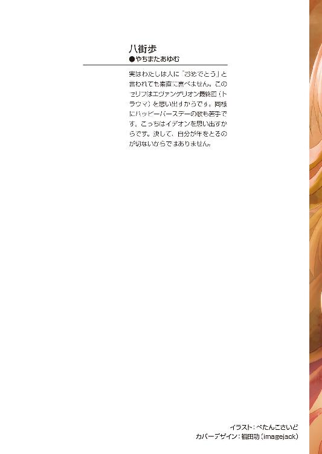
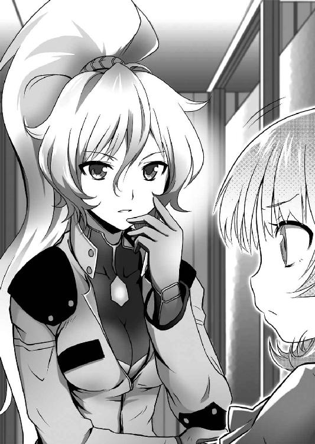

| キミが誘う境界線3 殺したいほど愛してる (富士見ファンタジア文庫) | |
| 八街 歩 | |
| (2014) | |


キミが誘う境界線３
殺したいほど愛してる
八街 歩

富士見ファンタジア文庫
本作品の全部または一部を無断で複製、転載、配信、送信したり、ホームページ上に転載することを禁止します。また、本作品の内容を無断で改変、改ざん等を行うことも禁止します。
本作品購入時にご承諾いただいた規約により、有償・無償にかかわらず本作品を第三者に譲渡することはできません。
本作品を示すサムネイルなどのイメージ画像は、再ダウンロード時に予告なく変更される場合があります。
本作品は縦書きでレイアウトされています。
また、ご覧になるリーディングシステムにより、表示の差が認められることがあります。
口絵・本文イラスト ぺたんこさいど
序章 闇淵群にて
『急げ、こっちだ！』
『わかってるわよ』
『クソ、敵の数が多すぎるぞ』
薄暗い山奥。木々が生い茂り、道らしい道もほとんどない未開の地。そこをジン達は走りながら、お互い悲鳴じみた声を張り上げていた。
『方向はこっちでいいのか!?』
『間違ってはないはずよ！』
『追っ手が来たぞ！』
キョウスケが叫び、背後に向けて、手に持ったライフルを掃射して追っ手を牽制する。
ジン達三人、すなわちジン、ミカン、キョウスケの三人はセメタリーで正式採用されている自動外装を装備している。自動外装のおかげで足場の不安定な山の中も、平地を走るように高速で移動することが可能だった。
『ヨミ、大丈夫か？』
「はい」
ジンの手の中、ヨミが短い返事と共にうなずいた。ヨミはジンの両手で抱えられている状態である。
自動外装を装備して自由に動くには、それなりに訓練が必要である。仮にヨミが自動外装を装備したとしても、素人のヨミではまともに歩くことさえ難しいだろう。そのため、苦肉の策として今はジンがヨミを抱えて走っているのだ。自動外装の性能でジンの身体能力は大幅に強化されているため、ヨミを抱えて走ることも苦ではない。
ジン達が今いる場所は闇淵群と呼ばれるところだ。山岳地帯のど真ん中で、某県と某県の境目にあたる区画である。人家どころか道路さえほとんどないような場所であり、日本最後の秘境とも呼ばれる場所である。
『追っ手は!?』
『さっきの奴は振り切れたわね』
『南西約三キロの位置に別の敵がいる。このままだとそっちとぶつかるぞ』
四方を敵に囲まれた状態。ジン達は、ひたすら山の中を駆け回っていた。戦うには、あまりに敵の数が多く、味方の少ない孤立無援状態だからだ。戦力の差が大きすぎて、マトモにぶつかれば確実に吞み込まれてしまう。今はひたすら逃げ回ることしか、ジン達にはできなかった。
『けど、このままじゃジリ貧だな』
ジンは奥歯を強く嚙みしめた。手の中にいるヨミが、ジンにしっかりとしがみついている。できるだけ静かに走っているつもりだが、ヨミにはかなり強力な振動がひっきりなしに伝わっているはずである。ヨミの体が投げ出されないよう、ハーネスでジンと結びつけてあるが、そのためにヨミに伝わる衝撃はより強まっているだろう。
ヨミは泣き言一つ言わずにジンにしがみついているが、そうしているだけでもヨミの体力は確実に消耗している。あまり長時間の逃避行は、ヨミの体力的にもキビシイだろう。
なんでこんな状態となってしまったのか......ジンは、ここに来るまでの道程を思い出した。
第一章 その名は斬竜斬雨
その日、ジンは同僚と共に仕事をしていた。同僚というのは、数年来のつきあいである七蓋キョウスケである。キョウスケとジンはお互い気心の知れた仲であり、怠け者のジンの監視役とも言うべき立場にいるのがキョウスケだった。
セメタリー日本支部内の一室、ジンやキョウスケたちが所属するＢチームに割り振られた部室内だ。セメタリーではチームごとにオフィス用の部屋が割り振られるのである。ただし、与えられる部屋は三人分のイスと机を設置すれば他にものを置きようがないほどの狭さである。もっとも、ジンたち『葬儀屋』はセメタリーの実働部隊であり、事務仕事がメインではないのでこれくらいの広さで問題はない。
ジンとキョウスケの二人は、セメタリーで標準の制服を着ている。キョウスケは襟元までキッチリ着こなし、ジンは適当に着崩している。同じ服装だというのに、二人の性格がよく表れていた。
キョウスケの机の上にはパソコンのモニタとキーボードが設置され、脇には小さなメモが無数に貼られた小型のクリップボードが置かれてあった。生真面目なキョウスケの性格が反映されていて、机の上に余分なものは一切ない。キッチリ整理されていた。
そしていい加減な性格のジンだが、その机の上は割と片付いていた。というか、ほとんど物がなかった。最近まで滅多にここに顔を出さなかったジンは、仕事に必要な備品すら欠いている有様である。
個人用に配給されるパソコンも、ジンの分はない。正確に言うなら、以前はあったが今はない。それには理由がある。
数週間ほど任務で支部を離れた後、久しぶりに部屋に戻ってパソコンの電源を入れたら中から異音がした後、動かなくなったのだ。思い返してみると、任務に出る前にパソコンにジュースをこぼしてそのまま放置していたのだった。
備品なので壊したらまずいなと思い、こっそり分解してパソコンの中身をキョウスケのものとそっくり入れ替えてごまかしてしまおうとジンは画策した。キョウスケとミカンがいないスキに分解してみれば、パソコンの中でゴキブリが巣を作っていた。数十匹くらいいた。こぼしたジュースをエサにしていたようだ。電源が切れてるのに異音がすると思ったら、それが原因だったようだ。
中を見た瞬間すぐにフタを閉め直したが、隙間からゴキブリが数匹逃げ出した。大あわてで書類を丸めて、逃げ回るゴキブリを追いかけ回し、数十分かけてなんとか始末した。
脱走者は始末したものの、ジンのパソコンの中からはカサカサという異音が聞こえる。中にまだ残っているようだ。さすがのジンももう一度フタを開ける気にはなれず、どうしようかと悩んでいるところにキョウスケが戻ってきた。
なにをやっているんだ、とキョウスケが聞くので、パソコンから異音がして動かなくなったんだ、と答えると、しかたない奴だ、とキョウスケは肩をすくめた後、見せてみろ、直せそうなら僕が直してやる、とか言い出した。
そんなのいい、とジンは言ったのに、キョウスケはこういうときにかぎってお節介を焼きたがって見せてみろとしつこく、ついにはパソコンを奪われてしまった。
キョウスケがドライバーを片手にフタを開け始めたのを見て、ジンは咄嗟に部屋から飛び出し、外側から扉をロックして中からは開かないようにした。
数秒後、中からキョウスケの悲鳴が聞こえたので、ジンは後ろも振り返らずダッシュで逃げた。
その後、キョウスケがどうやって脱出したのかは知らない。ただはっきりしているのは、翌日ジンはミカンとキョウスケに二人がかりでボコボコにされたということだ。
そんなやり取りがあったため、ジンにはパソコンがないのである。ちなみに、その一件の後、支部長のリリカに新しいパソコンをくれと申請書を出したら、ゴキブリホイホイを渡されたというエピソードもある。
「まったく......いくら仕事をしても全然終わらないぜ」
「おい、ジン。そのセリフは、実際に仕事をしている人間だけが言っていいセリフだぞ」
ジンがぼやくと、すかさずキョウスケが反応してきた。
「俺はこれでも必死に働いているよ」
「ならこの前の任務の報告書を出せ！ 出てないのは貴様だけだぞ！」
「残念だがその報告書のデータはゴキブリに食われた」
「最初からやっていなかったクセに！」
ゴキブリ事件の後、さすがにしばらくの間キョウスケとは険悪な仲だったが、ジンがもともとどうしようもない性格であるのはキョウスケもよくわかっているので、今では諦めて以前と同じ関係に戻っていた。ある意味懐が深い男である。
「ヤレヤレ、そもそもミカンはどこ行ったんだよ？」
「部長のところに行った」
ミカン──フルネームで迷宮院ミカンは、ジンやキョウスケの上司であり、三人のリーダーという立場である。
元々はセメタリー本部の『墓守』という実働部隊の所属だったが、紆余曲折の末、本部とはケンカ別れをして、現在は日本支部のメンバーとなっている。当初はあまり反りが合わない関係だったが、今ではジンやキョウスケともそれなりに仲良くやっている。
というか、ジンがあまりに問題児であるため、それに対処しているうちにミカンとキョウスケの間にいつの間にか仲間意識が芽生えていたというのが真相である。自分のおかげだな、とジンは内心密かに思っているが、もちろんそう思っているのは本人だけだ。
と、そんなことを考えていると扉がバタンと開き、たった今話題に上っていた人物、ミカンが入ってきた。やはりセメタリーの制服姿で、束ねた長い金髪がシッポのように頭の後ろでゆれている。日本人離れしたその顔立ちは黙っていればかなりの美人だが、実際は男勝りの荒っぽい性格であることをジンはすでに知っていた。
「二人ともきなさい。大至急よ、急いで」
「なんだなんだ？」
「いいから、説明は後よ」
いつになく真剣な面持ちで、ミカンは二人を急がせる。ジンとキョウスケは理由こそわからないものの、そのただならぬ様子に大人しくミカンについてリリカがいる支部長室へ向かった。
「お前達には闇淵群へいってもらう」
支部長室に来たジン達にリリカは告げた。自分のデスクの上に両肘をつくリリカは、これまで見たことがないくらい重々しい表情をしていた。とはいえ、銀髪で小柄、童顔なリリカからは、れいによってあまり威厳というものが感じられなかったが。
「なんだよ、急な話だな」
「急な用件なんだ。言っておくが、あたしはこの件について議論する気はまったくない。反論もゆるさん」
「パワハラだな」
「茶化すな。本気で貴様と口論している余裕すらないんだ」
そう告げるリリカは、余裕がない様子だった。これはさすがにふざけている場合ではないか、と遅まきながらジンも気づいた。
「闇淵群、というと日本アルプスの外れ辺りにある地名ですね」
ミカンが静かに呟く。海外育ちなのに地名だけで場所がわかるというのは、彼女が優秀な証である。
「そうだ。山岳地帯になるからそれなりの準備は必須だ。まだ積雪はないようだが、気温はかなり下がっているぞ」
「そこへいって、なにをすればいいんだ？」
「逃げろ」
リリカがそう告げた瞬間、コンコン、と部屋の扉がノックされた。
「入れ」
「失礼します」
静かに頭を下げながら入ってきたのは小柄な少女、ヨミだった。
ジンの同居人であるヨミは、前回の事件の後、この日本支部の地下で暮らしている。故に支部内にヨミがいることは特別不思議ではない。
だが、ヨミの姿を見てジンは首をひねった。普段着とは装いの違う服装だった。上にはパーカーをはおり、下はタイツにトレッキングシューズ。さらには背中に大きなバックパックを背負っており、今から山登りにでも出かけそうなカッコウである。
「お前達には、彼女と一緒に行ってもらう」
ふん、とジンは鼻を鳴らした。
ヨミは現在、セメタリー本部に狙われている身の上だ。だからこそ、この日本支部内にかくまっているのである。そのヨミをわざわざ外へ連れ出すというのは奇妙な話であるが先ほどからのリリカの慌てようを見れば、ジンにもだいたいの事情は察しがついた。
「本部の連中か？」
「そうだ」
リリカは渋面でうなずいた。
「本部の奴らが、鍛冶山鉄舟の娘、ヨミを引き渡せと再三要求してきているのは知っているな？ あたしの権限で今までそれをつっぱねていたが、連中も痺れをきらしたようだ」
「強制捜査ですか？」
「おそらくな。本部直属の太平洋艦隊が日本に向けて動き出した。十分ほど前に、日本領海に入ったそうだ」
つまり、ヨミを奪うために本部が実力行使で動き出したということらしい。リリカは、本部の人間がここに来る前に逃げろと言っているのだ。
「......事情はわかった。つまりヨミを連れて逃げればいいんだな？」
「そうだ」
「逃げるにしても......」
ミカンが、眉根を寄せて呟いた。
「セメタリー本部が相手じゃ、どんなに逃げたっていつかは追いつかれるわよ」
「確かにそうだ。だからこそ、逃げる場所は一つしかない」
闇淵群へ行けばなんとかなるということだろうか。だが、そこにはなにがある？
ジンが首をひねると、それにはヨミが答えてくれた。
「わたしの実家なんです」
「は？」
予想外の言葉にジンは自分の耳を疑った。
「闇淵群はわたしの実家、わたしが父と一緒に暮らしていた家がある場所なんです」
「......つまり、ヨミの実家へ逃げろと？」
リリカがうなずく。キョウスケが、大丈夫ですか、と呟いた。
「危なくなったら実家へ逃げるって、逃亡者の定番じゃないですか？ そんなところ、本部連中だってすぐにわかるでしょう？」
「とはいえ、本部連中が相手じゃ、どこへ逃げたってすぐにわかるわ。本部の前じゃ、大国の情報機関も丸裸になるレベルよ」
ミカンの言うとおりだ。後手になった時点で、ジン達の立場がキビシイのは確実だ。
「わかっている、お前達の言いたいことはな」
リリカはうなずきながら説明をする。

「だが、あたしだって考えなしにそこへ行けと言っているワケじゃない......ヨミの父、鉄舟が本部から追われていたのは知っているな？」
ジンはうなずく。以前そういう情報を聞いたことがある。
「ところがだ、鉄舟は何年もの間本部の情報網に引っかかることなく逃げ続けた。その鉄舟が隠れていた場所が、闇淵群なんだ。つまりここは、本部の情報網にも引っかからない、特別な場所だ」
「なんでそんなことになっているんだ？」
「さぁな......だが、ヨミの話を元に現場の航空写真を撮ったんだが、人家などどこにも存在しなかった。ヨミの実家の正確な位置は、いまだにあたしにもわからない」
「そんな場所にどうやって行けと？」
「わたしが案内します」
ヨミが静かに手をあげた。
「子供の頃から過ごした場所です。近くに行けば、わたしが案内できると思います」
「......まぁそれはいいんだけどさ」
ジンはもう一つ気になることを口にした。
「ヨミの家に逃げ込んで、それでどうするんだ？ まさかそのまま一生そこにこもっていろとか言わないよな？」
「そんなことはわかっている」
リリカはいらだたしげにコツコツと歩き回っていた。
「とにかく今は時間が必要なんだ。あたしだって本部の言いなりなんかにはなりたくないが、今のあたしの立場じゃ、抵抗するにしても限界がある......なにか、本部が引っ繰り返るような切り札がないことにはな」
リリカはヨミを見つめた。
「ヨミと遺作──本部がここまでして欲しがるからには、そこにはなにか、あたしもまだ知らないような秘密が隠されているはずだ。ならば、みすみす本部に渡すわけにはいかん。お前達はなんとしても死守しろ」
「へいへい、ま、適当に頑張るさ」
「ジン。あんまふざけた態度はやめなさい」
「わかってるって」
ミカンにたしなめられても、ジンは適当に手を振るだけだった。
「安心しろ。お前達に永遠に逃亡生活を続けさせるつもりはない。あたしもできるだけの手は回して、安全を確保できたら必ずお前達をここに呼び戻す。その時は、最高の牛乳を用意してむかえてやる」
「よろしくたのむぞ......ちなみに俺は、牛乳なんかより酒のほうが嬉しい」
「貴様、あたしの牛乳をバカにするなよ！ 貴様みたいなゴクツブシなど一生口にできない最高級牛乳だぞ！」
「このまえリカちゃんから少しもらったけど、そこまで大げさに言うほど美味くはなかったぞ。まぁまぁな感じだったな」
「あげてない、貴様が勝手に飲んだだけだ！ それに、貴様が飲んだのは特選牛乳だ。上には上がある。あたしでもめったに口にしないとっておきの極上牛乳があるんだ！ それを飲ませて、今度こそ貴様に牛乳の真髄を教えてやる！」
意気込むリリカ。そこまで言われると、さすがのジンも少し飲みたくなってきた。
「わかったわかった。じゃ、その牛乳を期待しておくよ」
「うむ、あの牛乳は凄いぞ。なにしろ全国品評会でトップを独占する血統から生まれた選りすぐりの雌牛の......」
「あの、部長。時間の余裕がないのでは？」
話が終わらないのでミカンが割って入ってきた。リリカは、慌てて咳払いをする。
「と、とにかくだ、わかったらすぐに出発しろ！ 時間の余裕はないんだからな」
「ムダ話をしてたのはリカちゃんだろ」
「なにか言ったか！」
「別に」
──そんな経緯で、ジンとミカン、キョウスケの三人はヨミと共に闇淵群へと向かうことになったのである。
『葬儀屋』で使っている装備も自由に持っていっていいということだったので、自動外装と武器弾薬も手早く用意した。服装は、三人とも通常勤務用の制服から、『葬儀屋』で使う戦闘服に着替えてきた。今回は山を登るというので、山岳部用の迷彩が施された服だ。
四人は手早く準備を整え、車で日本支部を出発した。昼過ぎには山間部の道に入り、国道を外れて山道を進み、その突き当たりでヨミは、ここです、と告げた。
四人が車から降りた場所は、鬱蒼とした木がおいしげる山奥だった。人家どころか、街灯すらほとんど見あたらないという山奥だった。
先頭をミカンが道を確認しながら歩き、二番目にヨミ。三番目がジンで、周囲の警戒をしつつ、ヨミが必要以上にムリをしていないかを監視している。最後尾がキョウスケで、背後を主に警戒しながら進んでいた。
ヨミは日本支部で着ていた山歩き用の服装である。けっこうキツイ山道を歩いているはずだが、ヨミは平然としていた。去年までこんな山奥で暮らしていたのだから、ヨミにとってこの程度の道は散歩する程度の感覚なのかもしれない。
「この近くにお前の家があるのか？」
「いいえ。まだまだ先です」
ヨミが静かに告げる。
「どれくらい歩くんだ？」
「あの先ですね」
ヨミが指さすはるか先には、山脈の尾根が延びていた。直線で進んだとしても数十キロ以上の距離がありそうである。
「......あの山まで歩くのか？」
「いいえ、違います。あの山を越えた先です」
ジンは思わず頭を抱えたくなった。徒歩であの山を越えるなど、何時間かかるかわからない。少なくとも、今日中につくのはムリだろう。
「......まぁ、進むしかないわね」
時折ヨミに道を聞きながら、一行は黙々と先へ進んだ。数時間も進まないうちにその山道すら完全に消えてしまい、足場の悪い山肌を四人は進んでいくことになったのである。
日本最後の秘境と聞いていたが、これほどとはジンも予想以上だった。秘境というよりもはや人外魔境と呼んだほうがいい場所かもしれない。気のせいか、さっきから周りの木や草が見たこともない種類のものばかりになっている気がする。
──出発してすでに七時間以上経過した。さすがのジンもだいぶ疲れてきたところだ。周囲も完全に暗くなった。一応暗視装置を用意しているので、深夜であっても視界には不自由しないが、やはり夜に動き回るのはさけたいところだ。
先頭を歩くミカンは、携帯端末の画面を何度も確認している。ＧＰＳで現在位置を確認しているのだ。山道すらないような山の中では、ＧＰＳの位置検索機能だけが頼りだ。
「そろそろね」
と、ミカンがジン達を振り返った。
「今夜はこの辺りで野営するわ。だいたい半分以上の距離を進んだしね」
「ようやく一休みかよ」
ジンは、大きく息をついた。
「まったく、疲れた......おい、キョウスケ。水をくれ」
「自分の分を飲め」
「もう飲んだ」
「ダメだ。一人あたりの水の量は決まっている。貴様の分は、もうない」
キョウスケの巨大な荷物の中には水タンクが入っている。ジンはその水を狙っていたのだが、キョウスケは頑なだった。
「この水は非常用だ。それに帰りだって水は必要なんだ。ここでガブガブ飲ませるわけにはいかん」
「ケチ臭いこと言うなよ」
「ダメだ、水は貴重なんだ」
ジンとキョウスケの言い争いを見て、ヨミがオズオズと手をあげた。
「あの、もう少し行った場所に沢があったと思います。その水は問題なく飲めたはずです」
「なに、本当か？」
「はい、私の記憶通りなら」
地元住民であったヨミがいてくれてよかった、とジンは心から思った。
「おい、ミカン。水があるらしいぞ」
「みたいね。ＧＰＳでも確認できたわ」
携帯端末をミカンが確認していた。
「ならそっちに行こうぜ」
「水の補給はしたいわね。だけど野営する場所としては今ひとつよ。雨になったとき、水場の近くだと鉄砲水が来るかもしれないわ」
「考えすぎだろう？」
「最悪の事態は考えておくべきよ。水はそこで補給するにしても、野営場所は沢から少し離れた場所のほうがいいわ」
結局はミカンの指示通りに動くことになった。ヨミの案内通りに少し歩くと、山の中に水の流れる音が聞こえてきた。
やがて暗い山の中、キラキラと微かに光を反射する水面が見えてきた。幅二メートルもない沢だったが、水の勢いは強い。
ジンは早速手で水をすくってみた。手が凍り付きそうなほど水は冷たかった。見たところ、水はきれいに透き通っている。口に含んでみると、さわやかな水が体に染み渡っていくようだった。
「気が早いわね、少しは用心しなさいよ」
傍らのミカンが、小さなカップで水をすくいながら言った。
「水質調査キットを使うわ。飲料にできるかどうか、調べてみるわね」
「大丈夫だろ、そんな心配しなくても」
「寄生虫がいても知らないわよ」
とはいえ、調べた結果は飲んでも問題ないということだった。空になったボトルに水を補給し、その水を使って夕食を用意することにした。夕食と言っても、持ってきたレトルト食品をお湯で暖めるだけのものだが。
ジンが水を大量にくんで帰ると、残っていたキョウスケがテントを張りおえていた。野営の準備はセメタリーの訓練で何度も繰り返したことなので、お互い手慣れたものだ。
ジンは夕食の準備を進めつつ、自分の荷物を見た。
野営に必要な道具に水と食料などが詰め込まれている中、ひときわスペースを取っている金属と強化プラスチックの固まりがあった。
自動外装である。セメタリーが誇る最新鋭の歩兵用装備であり、一種のパワードスーツとも言うべきものだ。
収納状態の自動外装はトランク状態となるので、持ち運びには便利である。今回は持ち運びやすいよう一部の装甲を外して軽量化してきたが、それでも数十キロを超すその重量は、ジンにとっては重し以外のなにものでもない。
無論ジンだけではなく、キョウスケやミカンも自動外装を持ち込んでいる。本当はこんなもの置いてきたかったのだが、いざ戦闘となったとき、自動外装があるのとないのとでは戦力が段違いだから、ムリをして持ってきたのである。
そう、ここではいつ戦うハメになるかわからないのである──ジンは、出発前のリリカの言葉を思い出した。
ヨミが一足先に支部長室から出た後、リリカはジン達三人にだけ話したのである。
「......闇淵群にいけば、本部の連中も簡単には手出しができんだろう。だが、同時にお前達の安全も、保証できなくなる」
「どういうことだ？」
ミカンが肩をすくめて口をはさんだ。
「さっきも言ったけど、本部の情報網は完璧よ。その本部でも、鉄舟の行方を追いきれなかった......ということは、その闇淵群って場所にはなにか特別な理由があるってことでしょうよ」
「そうだ」
うなずき、ミカンの言葉を認めるリリカ。
「闇淵群は日本最後の秘境と呼ばれている場所だ──そしてこの場所は、我々セメタリーにとって完全に勢力圏外だ。だからこそ、長年鉄舟の居場所はわからなかったんだ」
「それって、まさか......」
ジンはイヤな予感がした。そしてそれは的中した。リリカが、最悪な一言をその後告げたからだ。
「そうだ。闇淵群は、七剣八刀の縄張りだ」
七剣八刀──セメタリーと敵対する組織、〈斯界の剣轟〉に所属する最強の十五人の剣轟だ。四年前、セメタリーは『超・禁断指定』と呼ばれる事件で七剣八刀十五人と全面衝突し、惨敗を喫する。その事件以降、セメタリーは七剣八刀に対しては不干渉という立場が確立したのである。
その七剣八刀の一人が縄張りとしている場所に鉄舟は隠れ住んでいたというのだ。なるほど、確かに本部でも発見できないはずである。
ここへ来るまでの道すがら、ジンはヨミにそのことについてさりげなく聞いてみたが、ヨミはなにも知らなかった。周辺に人家はなく、人っ子一人いないとヨミは主張するだけである。鉄舟が密かに七剣八刀と繫がっていたのかと考えたのだが、ヨミの態度を見る限り、無関係にも思えた。詳細は謎だ。
「......まさか、本当に七剣八刀がいるのか？」
ジンのつぶやきに、背後のキョウスケが答えた。
「さぁな。けど、そうそう出会えるわけでもないだろ。七剣八刀なんて都市伝説だっていうウワサがあるくらいだし」
キョウスケは気楽に言うが、ジンは楽観できなかった。というより、ジンはキョウスケと違い、七剣八刀が実在することを知っているからこそ、楽観視できないのである。
「まぁ、確かに七剣八刀ってウワサレベルの話しか聞いたことないけど......連中は実在するわよ。そして、ウワサ以上にとんでもない実力の持ち主でもあるわ」
と、ミカンが会話に参加してきた。
「断言できるんですか？」
「まぁね......ちょっと、信頼できる知り合いから直接話を聞いたことがあるからね」
少し歯切れ悪くミカンが言うと、キョウスケはそうなんですか、と素直にうなずいた。ジンもミカンの言葉には同意である。
だが、キョウスケが都市伝説あつかいするのもムリはない話だ。なにしろ七剣八刀は文字通り神出鬼没である。七剣八刀の所在地はセメタリーでも把握できていない。この闇淵群のように、縄張りとされている場所は世界中に何か所かあるらしいが、それはセメタリーでもトップシークレットで、リリカのような支部長クラスでないと知らない情報だ。そしてその縄張りとされている場所であっても、現在七剣八刀が存在しているかどうかわからないのである。七剣八刀とは、それほど謎めいた存在なのだ。
七剣八刀自身、他人と関わろうとはせず、世間から隠れ住むようにしているらしい。そのため絶滅危惧種レベルで発見が難しい存在である上、運良く発見できたとしても圧倒的な実力差でほぼ確実に殺されてしまう。そのため目撃情報がほとんどないのだ。
「............」
「なんだ？ 今日は静かじゃないか、ジン」
キョウスケが怪訝な顔を向けてくる。
「いつもの貴様らしくないぞ」
「......万が一、七剣八刀と出くわした場合、もう生きて帰れないかもしれないぞ」
ジンが告げる。ハッタリではなく、事実だ。
「そんな危険な任務、なんで二つ返事で引き受けたんだ？」
「なに、あんたそんなこと悩んでいたの？ らしくないわね」
腕を組み、ミカンがジンを見下ろした。
「命の危険は、別に問題じゃないわ。そもそも長生きしたかったらこんな商売やってられないしね」
セメタリーの任務は常に命がけ......だからこそ、ミカンもキョウスケも、覚悟は常にできている。
「あたしはそもそも、あんたとお嬢ちゃんには借りがあるからね。それを返せるなら、なんだってするわよ」
あっさりと、ミカンが告げる。キョウスケがその横で首をすくめた。
「まぁ、貴様とは長い付き合いだからな。それに、僕がいないと貴様がどんなムチャをするかわからないからな。お目付役みたいなものさ」
ミカンとキョウスケ。二人とも命の危険は承知していた。それでもジンとヨミのためにと、ここまでついてきてくれたのである。
「......まったく、命知らずのバカばっかりだな」
「あんたにだけは言われたくないわ」
「まったくですね」
三人でそんな会話をしているところに、夕食の準備をしていたヨミがやってきた。
「できましたよ......三人とも、なにを話しているんですか？」
「なんでもないさ」
ジンはそう答えて立ち上がった。さすがに今の会話の内容をヨミにいうわけにはいかない。三人は適当にヨミをごまかしながら、夕食を取った。
夕食はカレーだ。レトルトのカレーにご飯もパック詰めされたものだ。誰が作っても同じ味ではあるが、それなりにおいしい。
ヨミは、レトルトでは自分の腕の振るいようがないと少しだけ不満そうだったが、ノンビリ夕食を楽しむほど余裕がある状況ではないのでしかたがない。
それでも食事を済ませた後、お茶を飲んで一服をするくらいの余裕はあった。
お茶のカップを両手で持つヨミを見て、ふとジンは気になっていたことを思い出した。
「なぁヨミ。お前、去年までこの辺りに住んでいたんだよな？」
「はい、もちろんです」
「こんな、コンビニどころか人っ子一人いない場所で、お前どうやって生きてたんだ？」
「基本的には自給自足でしたね」
あっさりとそう答えるヨミ。ジンは、ヨミが猟銃片手に山の中を駆け回る姿を想像してみた......クマの毛皮を頭からかぶったヨミが獣を撃ち殺し、皮をはいで肉を食べる姿を想像する......ダメだ、シュールすぎてイメージできない。
「家の地下には保管庫があって、そこに食糧は備蓄されていました」
「......備蓄はいいけど、どうやって補給したんだ？」
「野菜を育てていたので、基本的にはそれを食べていました。父は高齢でしたし、私と同じく小食だったので、それほど食べ物は必要ありませんでしたし」
「そういえば、お父さんと二人暮らしだったのよね？」
ミカンの言葉にヨミはうなずいた。
「えぇ、そうです」
「寂しくなかった？ こんな、他に人もいない山奥で」
「いいえ、父がいたので、さみしくはなかったです。やさしい人でしたから」
死んだ父親のことを思い出したのか、ヨミがしみじみと呟いた......が、それに対するジンたちの反応は淡泊だった。聞いたミカン自身、親ってそういうものかしらね、と呟いただけだった。
「......どうかしたんですか？」
「ん～......あたしは、父親なんていなかったからね、親代わりの人ならいたけど......あんたたちは？」
ミカンがジン達にも話を振ってきた。ジンはあっさりと首を振った。
「さぁな......俺だって、親の顔なんて知らん」
「え、そうだったんですか？」
ヨミが驚いた顔でジンを見てくる。ジンは頭をかいた。
「言ってなかったか？」
「聞いたことありませんよ。ジンさん、自分のこと全然話してくれないから......」
「僕も聞いたことがないな」
キョウスケまで頷いている。確かに、あまり自分の過去のことは話したことがない。
「まぁ、別に珍しい話でもないけどな......物心がつく前に、両親は事故で死んだらしい。日本人の両親だったらしいけど、名前も顔も全然知らない」
「それで、セメタリーに拾われたわけ？」
ミカンは、孤児になってセメタリーに保護されたのだろう。
「いや、俺の場合は違う......なんか、死んだ両親の知り合いだとかいう人が引き取ってくれた、らしい」
「あやふやな言い方ね」
「幼いときの話だったから、よく覚えてないんだ。なんか、俺を引き取ることで色々ともめていたらしくてな......最終的に俺を引き取ってくれた人が、確か、俺の親の昔の友達だった人の親戚の妹弟子にあたる人だったかな？」
「なにそれ、完全に他人じゃない？」
「そういうことだ」
そのあたりのことをジンはあまり覚えていない。当時ジンは幼すぎたし、覚えていたい記憶でもなかったからだ......すでに異能者として覚醒しつつあったジンのことを、バケモノ扱いした親戚連中の家で一緒に暮らすなど、子供ながら絶対にイヤだった。
そういった意味では、師匠は不思議な人間だった。初対面だったはずのジンをあっさり引き取ると言いだし、ジンの異能を見ても少しも驚いたそぶりは見せなかった。だからジンも師匠にはあっさり懐いたのだ。
「とにかく俺はその人に引き取られた。剣術はその人から教えてもらったんだ」
「そうなんだ......その人、けっこう強かったんじゃない？」
「あぁ、とんでもなく強かった......同時にかなりの変わり者だったな」
「へぇ？」
「一言で言えば、天才的、って言うのか？ とにかく、できないことがないってくらい多才な人だったな」
「ふーん......家族っていえるのは、その人だけ？」
「いや、もう一人......」
が、ジンはそこでハッとした顔で、急に口ごもった。
「なに、どうしたの？」
「いや......俺の話はもういいだろ、キョウスケ、お前は？」
「ん？」
キョウスケに話をふってみる。強引な話題の逸らしかただったが、思い出しても楽しくない話題だということは誰でもすぐわかることだ。ミカン達もジンにそれ以上追及しようとはしなかった。
「あぁ、一応、家族ならいるぞ、僕は」
キョウスケの言葉を聞いて、ジンは少し驚いた。
「そうだったのか？ 聞いたことないぞ」
「まぁ僕も親はいないけど、兄弟はいるんだ。もっとも、血のつながりはほとんどないけどな」
キョウスケは少し懐かしそうな表情になった。
「一番上の姉貴ももちろん孤児だったんだけど、姉貴が成人した後自分と同じ境遇の孤児を見つけると片っ端から引き取って自分の弟や妹ってことにしていったんだよ」
「兄弟がいるのに、お前はなんでセメタリーに来たんだ？」
「姉貴から解放されたくてさ......身元が怪しい子供でも雇ってくれるのが、ここくらいしかなかったんだ」
「なんで逃げたんだ？ 聞いた限り、いい姉貴じゃないか？」
「あぁ......そうやって寄せ集めた兄弟は全部で十五人いたんだけど、十五人の中で男は僕を入れて三人しかいなかったんだ」
「女ばかりだな」
男が三人なら、女は十二人いたということになる。キョウスケは頷いた。
「僕の上には姉貴が四人に兄貴が一人いたんだけどな、この姉貴連中がみんな横暴で......男兄弟を奴隷かなにかと思っているような人間ばかりだったんだよ」
少し苦々しげな表情になるキョウスケ。
「姉貴連中が兄弟全員の生活費を稼ぐかわりに家事とかは全部僕らに押しつけてきてさ......それがイヤで、鏡四郎兄貴は家を飛び出していった。僕もやっぱり兄貴と同じように逃げだしたんだ」
「ゼイタクね。家族がいるのに逃げ出すなんて」
ミカンが呟くと、それは違います、とキョウスケが首を振った。
「ミカンさんはうちの姉貴の凶暴さを知らないからそんなことが言えるんですよ。そりゃ、家族として育ててくれたことには感謝してますけどね、うちの姉貴連中は全員バケモノでしたよ......あんなに強かった鏡四郎兄貴だって、姉貴に勝てずに逃げだしたんだし......」
初めて聞くキョウスケの家族構成は、ジンが思っていたものよりもずっと複雑だった。
「そうだったんですか」
話を聞き終えたヨミが、少し神妙そうな顔をしていた。
「こうやってみなさんの話を聞くと、父に育ててもらえたわたしはかなり恵まれていたのですね」
呟くヨミ。確かに、ジンたちから見れば、親に育ててもらえたヨミは羨ましい身の上だ。少なくとも、ジンたちのように命の危険と隣り合わせの毎日を送らないですんだだけ、ヨミは恵まれている。
「......さぁて。今夜はこれくらいのところで休もうかしらね」
少し空気がしんみりしてきたのを見て、ミカンが少し明るい口調で言った。
テントは二人用の物がすでに設置済みだ。もちろん、男女にわかれてそれぞれのテントで休む手はずである。
「一応警戒のため、見張りに一人起きるようにしましょ。あたしとキョウスケ、ジンの三人が交代で起きているようにするわよ」
「あぁわかった」
「了解です」
「あの、わたしは......」
ヨミがジン達を見てくる。ジンは肩をすくめた。
「じゃ、ヨミは俺と一緒の当番にするか」
「はい、わかりました」
そういうと、ヨミは嬉しそうにうなずいた。ジンは、おいおい、と思わず呟いた。
「言っておくけど、冗談だからな？ 子供はゆっくり寝ていろ」
「......ジンさん、イジワルです」
途端にヨミが不機嫌になった。なぜだ、とジンがキョウスケに尋ねると、自業自得だ、と答えが返ってきた。
この後の予定を軽く打ち合わせた後、それぞれ就寝することにした。最初の見張りはミカン。その後キョウスケ、ジンの順番で交代するという手はずになった。ジンとキョウスケは男用のテントの中で寝袋に入り込んだ。大の男二人が寝るにはテントの中は少し狭いが、ジンにとっては苦痛ではなかった。『養成所』時代は、もっと過酷な環境で何日も野営させられた経験があるからだ。いざとなればジンもキョウスケも立ったままでも眠れるし、平地なら歩きながらでも眠れる。
「なんだか、こうやっていると『養成所』時代を思い出すな」
「そうだな」
ジンの言葉にキョウスケも頷く。ほんの数年前の出来事なのに、ずいぶん昔のようにも思えた。
「あの頃はなかなか楽しかったよな」
「そうだな。雪山で貴様が崖に食料を落としてしまって三日三晩雪しか食べるものがなかったのも、今ではいい思い出だな」
昔の思い出を、少し苦々しげにキョウスケが呟いた。そういうこともあったな、とジンは他人事のように思い出した。
「あの頃は、アイさんが僕らを引っ張ってくれていたな」
「そうだな」
アイのことも思い出した......紗村亜衣。ジンやキョウスケのリーダーだった女性。紆余曲折の末、セメタリーを裏切ったアイはジンたちの前から姿を消した。この前偶然会ったとき、アイは〈斯界の剣轟〉の仲間入りしていた。今頃どこでどんなことをしているのか......
「おしゃべりはこれくらいにしておこう。ミカンさんに怒られるぞ」
「あぁ」
思い出話も早々に打ち切り、ジンは狭いテントの中で眠ることにした。
「......おい、起きろ、ジン」
「ん？」
少し眠ったと思ったらキョウスケに起こされた。あくびをしながら起きると、もう交代の時間だった。
居眠りするなよ、とキョウスケにクギを刺された後、交代してジンは外に出た。正直少し眠いが、ミント味の清涼剤で強引に目を覚ました。
深夜の山の中は、驚くほど寒い。暗闇の中でもはっきりわかるほど息が白い。テントの近くの小さな焚き火が暖をとる唯一の方法だ。ジンは周囲を警戒しながら火の近くに腰を下ろした。
人っ子一人いない山の中だが、周囲は思っていたよりも騒がしい。風、獣、虫、さまざまなものが動き、木の枝や草をゆする物音が聞こえる。
普段のジンならここで居眠りをしてサボるところだが、さすがに今回は怠けるわけにはいかない。なにしろヨミが近くにいるのだ。おまけに、リリカも言っていたとおり、ここは七剣八刀の縄張りだ。いつ敵が攻めてくるかわからないのだ。
昼間山を歩いたときも少し気になったことがある。確かにこの山に人は住んでいないようだ。だが、複数の人間が山に入った痕跡が、ここに来るまでの間に何個もあった。ヨミを無闇に不安がらせてもしかたないので口には出さなかったが、ミカンやキョウスケも当然気づいているだろう。
「......来るとしたら、そろそろか」
焚き火に枯れ枝を投げ入れながら、ジンは呟いた。山の奥から、微かに何かが動く気配を感じる。それが獣なのか人間なのかは、ジンでもわからない。だが、冷たい山の夜気がさらに張り詰めていくのが感じられた。
ジンは、片手に持ったライフルを握り直した。どうも、イヤな気配を感じる。ジンは迷わずキョウスケとミカンを起こすことにした。勘違いだったら別にそれでいい。その時はジンが二人に怒られるだけだ。
足下のヒモを強く引っ張る。テントに繫がるヒモを引けば、二人とも目を覚ます仕掛けである。二人とも眠りが浅かったのか、すぐさま音もなくテントからはい出てきた。
「なにがあったの？」
ミカンが寝起きとは思えないほどキビキビした口調で聞いてくる。ジンは、アゴをしゃくった。
「妙な気配を感じる」
「それだけか？」
「今のところはな」
「静かに」
短く、囁くような声をこぼしたあと、ミカンは前方の暗闇をジッと見つめた。
「......いるわね、間違いなく」
「なにが？」
「さぁ？ わからないけど、登山客じゃないことは確かね。気配を殺しすぎだわ」
ミカンが呟き、黒刀とサイレンサーつきの拳銃を手にして歩き出した。
「いいわ。あたしが始末してくるわ」
「援護します」
「いらないから、あんたたちはお嬢ちゃんを護っていなさい。お嬢ちゃんも今起こしておいたから、荷物をまとめているはずよ」
ミカンはそう言うと、一人で山の暗闇の中へと消えていった。キョウスケが、首をかしげながらジンを振り返った。
「なぁ、貴様、人の気配なんて感じたか？ 僕にはさっぱりわからなかったんだが......」
「さぁな」
ジンは適当に答えつつ、周囲の気配を探った。確証はないが、やはり誰かに見られているような気配を感じる。いったい何者か......十中八九敵であるのは確実だが、その相手がジン達の追っ手であるかどうかが重要だ。
ジンが思い悩んでいると、山の中、微かな金属音が響きわたった。続いて金属のこすれるような音。銃声だ。ミカンが戦闘を開始したようである。自然、ジンとキョウスケの緊張も高まった。二人ともミカンと同様、黒刀と銃をすでに構えている。
ガサガサ
山肌を、なにかが駆け抜けていく気配。
「後ろだ！」
キョウスケが短く叫ぶと同時に動き出す。ジンも、ほぼ同時に黒刀を構え、背後に振り返っていた。
木々の間から真っ黒い影が飛び出してくる。ジンとあまりかわらない体格の男だ。短い刀を二本、両手に構えている。暗闇の中、その白刃がわずかな光を反射してギラリと光る。
ジャンッ
無言のまま、相手が斬りかかってきた。ジンは黒刀でその小太刀を受け止めた。が、同時に相手は反対の手に構えた小太刀で斬りかかってくる。二刀使いか、と舌打ちしながらジンはその攻撃をかわす。
「ジン！」
キョウスケが、ジンを襲った敵めがけて拳銃を撃った。山の中、減音された銃声が響く。だが襲撃者はキョウスケの放った銃弾を易々とかわし、同時に猿のように跳躍して近くの木の枝に飛び乗った。
中々鋭い動きをするな、とジンは分析した。最初はたいしたことがない相手かと思ったが、油断していると足下をすくわれかねない。
ジンは黒刀を両手で構えながら、相手に襲いかかる。が、相手は木の枝からさらに跳躍して、ジン達の背後に回り込んできた。
襲撃者は手に小太刀を構えているが、それ以外の武器を使ってくる気配がない。その時点で、この襲撃者の正体に見当がついていた。
キン、ギンッ、ギン！
襲撃者は素速く動いてジン達を翻弄しながら、鋭い攻撃を立て続けにはなってきた。だが、最初こそ互角だったものの、次第にジンとキョウスケも相手の動きに慣れてきた。もともと二対一である。ジン達が有利なのは、明らかだった。
相手もそれを悟ったか、スキを見て逃げだそうとしているようだった。だが、ここで逃がせば面倒なことになるのは目に見えていたので、銃を構えたキョウスケが相手を上手く牽制して、逃げ道をふさぐ。
ジンの黒刀による攻撃を、相手が交差させた小太刀で受け止めた。慣れてしまえば、相手の攻撃を読むのも難しくなかった。
パシュッ
銃声が響くと同時、襲撃者の体勢が崩れた。足下に、液体が飛び散るのがジンにはわかった。銃弾が、相手の足を撃ち抜いたのだった。足を撃たれれば、さすがに今までのように素速く動き回ることもできない。ジンはそのまま無造作に黒刀をふるい、襲撃者にトドメを刺した。
「やったか？」
「あぁ」
キョウスケが駆け寄ってくる。ジンは油断無く地面に倒れた男を観察していたが、完全に絶命したことを確認して後ろを向いた。
「ミカンは？」
「しくじったわ」
ガサガサ、足音を立てながら、闇の奥からミカンが戻ってきた。
「二人ほどいたんだけど、あたしが強いってわかった途端あっというまに逃げだしたわ」
「......こいつ、剣轟ですよね？」
キョウスケが、死体にライトを当てて確認をする。刀を武器にして戦っていたのだから、剣轟の一人である可能性は高い。
「あたしの戦った相手もそうだったわね......七剣八刀の縄張りなら、剣轟がうろついていても不思議ではないわね」
「確かにな」
ミカンが手をふった。
「もう余裕はないわ。すぐに撤収するわよ。逃げたやつが仲間をひき連れて戻ってこないうちに」
「誰かさんのおかげで大変だな」
「うっさいわね。あいつら連携取れていて、強かったのよ」
ジン達の騒ぎ声を聞きつけ、ヨミがテントから顔を出してきた。
「大丈夫ですか、みなさん？」
「あぁ、もちろんだ」
「また、本部の人ですか？」
「いや、今回は本部じゃない......それよりも厄介な相手かもしれないな」
ジンが言うと、ヨミは三人の緊張を感じ取ったのか、身を強ばらせた。ジンは、ヨミを安心させるように手を広げた。
「心配するなって......どんな奴がこようと、俺たちがいる限りお前には傷一つつけさせないさ」
「はい......」
「荷物をまとめたら、すぐ出るわよ。ゆっくりしている余裕はないわ」
ミカンの言葉に、ジン達はすぐさま撤収準備を整え、その場から離れることにした。
「ヨミ、お前の家までどれくらいなんだ？」
「ここからだと、半日ほど歩けばつくと思います」
「まだかかるな」
とはいえ、ここまできた以上はそこを目指す以外に道はない。拠点さえ確保すれば戦いやすくもなるだろうし、逃げても他に行き場所などない。
「......イロイロまずいわね」
「なにがだ？」
歩きながら、先頭を行くミカンがこぼした。
「剣轟がどれだけいるかはわからないけど、少数って可能性は低そうよ」
「どうしてわかる？」
「熱源の数が昼間よりも多くなっているわ。この山に人が集まってきているわよ」
「最悪だな」
「しかも、さっき航空機が飛んでるのが見えたわ」
「本部か？」
「たぶんね」
ジンは歯がみした。確認した限り、ここは国内線の航路からは外れていたはずだ。こんな場所を夜間に視認できるくらい低空を飛ぶ航空機が、まともなもののはずがない。十中八九セメタリーのものだ。おそらくは偵察機を飛ばしたのだろう。部隊を派遣する直前に現場周辺の状況を確認するため、セメタリーがよく使う手段だ。
「......しかたないわね。自動外装を使いましょう」
ミカンがここまで運んできた自動外装のトランクを取り出した。
「いいのか？」
「出し惜しみしていられる状況じゃないでしょ」
「ごもっとも」
ジン達三人は上着を脱ぎ、自動外装を装着する準備を整えた。自動外装用のインナースーツはすでに野戦服の下に着込んでいたため、装着はすぐさま完了した。
セメタリーが世界に先駆けて採用している自動外装は、あらゆる戦場で兵士の身体能力を限界以上に高めることが可能な現代の甲冑である。
だがその自動外装にも欠点はある。自動外装がその性能を完璧に発揮するには、補給線の確保が必須である。つまるところ、燃費が悪いのだ。セメタリーの最新技術で設計された大容量バッテリーを使用しても、十時間足らずで稼働時間は切れる。しかもそれは節約して使用した場合だ。戦闘状態で全力稼働をした場合、数時間でバッテリー切れになることもある。バッテリーが切れた自動外装など、ただの鎧だ。現代戦ではただの重りに過ぎない。自動外装の連続使用には、バッテリーの補給とこまめな整備が不可欠なのである。
今回の場合、補給などできるはずがない。だからこそジン達はバッテリー節約のため、自動外装をわざわざ背負って運んできたのだ。
ヘルメットを装備すると暗視装置が作動し、まだ暗い周囲の視界が昼間のように明るくなった。同時に、周囲の状況がはっきりとわかる。
『げ......おい、後方に大量の熱源反応があるじゃないか』
『......そのようね』
お互い自動外装の情報を確認して、状況が絶望的だとはっきりわかった。
『山の麓に大部隊......確実に本部の連中ね。どう考えてもこの辺り一帯包囲されているわね』
『俺たちを追ってきたのか？』
『そう想定したほうがいいわね』
『山の中で動き回っている熱源は、剣轟ですかね？』
『そうね。どうも連中、本部連中に反応して動き出したようね』
この闇淵群は七剣八刀の縄張り。すなわち〈斯界の剣轟〉の勢力圏だ。七剣八刀には不干渉を貫いていたセメタリーがいきなりこの場所を包囲しだしたのである。剣轟側もそれに備えるのは、当然とも言える状況だ。
『......少しだけ、光明が見えてきたわね』
ミカンが呟く。
『剣轟も本部もあたしたちにとっては敵だわ。だけど、この二つもお互い敵同士。奴らがぶつかり合ってくれれば、あたしたちがつけいる隙だってあるわ』
「ジンさん」
不安そうな顔のヨミ。ジンは、軽い口調で答えた。
『なんだ、ヨミ。怖くて小便チビりそうになったか？』
「............」
『バカ、冗談だって、そんな冷たい目で睨むな！ 安心しろって、お前は俺が護るって、言っただろ？』
「......もぅ、ジンさんは」
『お嬢ちゃんはジンが抱えて運びなさい』
『了解だ』
答えながらヨミを片手で抱え上げ、そのままハーネスを利用してお互いの体を固定した。ヨミは、ジンさんはもう少し空気を読んでください、とか文句を言ってはいたが、なぜか嬉しそうにジンにしがみついてきた。女はよくわからん、とジンは内心ぼやいた。
ジンというのは、チーム内でのジンの呼称である。ミカンにキョウスケ、作戦行動中は常にこの呼び方をしている。今回は三人だけで他の味方はいないため、名前を呼べば問題ないのだが、自動外装を着込むと口調も自然と変わってしまった。もはや体に染みついたクセに近い。
『できるだけ揺れないように走るが、絶対俺から手を離すなよ』
「わかっています」
ヨミが力強くうなずいた。ヨミから見れば不安でたまらない状況のはずだが、怯えたそぶりはない。小柄な外見に反して、ヨミは肝が据わっているのだ。
『マズイですよ、ミカン。剣轟連中が迫ってます。明らかに僕らを狙っていますよ』
『ジン！ 準備は!?』
『いつでも行ける』
『走るわよ！』
ミカンの号令で、未だ暗い山の中をジン達は走り出した。
闇淵群の盆地。山の間にあるわずかな平地には、セメタリーの部隊が展開していた。彼らは日本支部の人間ではない。全員が統合本部直属の『墓守』。セメタリーのエリート部隊である。彼らはある極秘任務を帯びて日本にやってきたのであった。
目標の山岳地帯を包囲しつつ制圧するのが彼らに課せられた任務である。だが、その任務は順調とは言えなかった。山の中に潜んでいた剣轟が根強い抵抗を続けているためである。
『クソ、待ち伏せされているぞ！』
『敵は南東部に潜んでいる』
『そっちは陽動だ。敵は西部から来ているぞ』
『部隊の集結を急がせろ』
『各個撃破されるぞ！』
『慌てるな。戦力はこちらのほうが上だ。落ち着いて対処すれば勝てる』
『敵は剣轟。目測で二十人。周辺にまだ潜んでいると思われる』
剣轟との戦端が開かれてすでに数時間。開戦当初は深夜だったが、すでに東の空が明るくなりつつあった。セメタリーの自動外装には暗視装置があるため、深夜であっても不利にはならない。問題は剣轟側だ。
「まもなく夜が明ける......明るくなれば、視界の優位は消えるぞ、セメタリー。そうなればこちらが優位に立てる」
山肌から麓の『墓守』の様子をうかがいつつ、呟く存在がいた。
「しかし敵は『墓守』。それも悪名高い、統合本部直属の降下猟機兵団か。まともに相手をするにはキツイ相手だな」
声の主は女性だった。山の中、木の間に身を潜めて戦場の様子を眺める女性。ショートカットの髪の下にある鋭い目は、戦場の推移を冷静に観察していた。
アイである。かつてジンたちの仲間だった彼女は、今は〈斯界の剣轟〉に所属し、何人かの剣轟を部下に従える立場となっていた。
「......そうだ。Ｃチームは一時後退。敵が追撃してきたら所定の位置まで誘い込め。Ｇチームは待機。Ｄチームは回り込め。敵が南西からくるからそれを迎え撃て」
全体を俯瞰する位置で様子を眺めつつ、味方である剣轟に通信機で指示を出し、『墓守』を撃破していく......今のアイの立場は、剣轟側の指揮官であった。
アイが〈斯界の剣轟〉に入ることは簡単だった。剣轟は実力本位の世界であり、裏を返せば、実力さえあれば誰でも入ることができる集団だったからだ。
セメタリーで働いていたとき、アイは剣轟と何度も戦ってきたが、かつての敵であるアイさえもあっさり剣轟として認められたのにはアイ自身驚いた。
そして剣轟の内部事情を目にしたとき、アイはさらに驚いた。
個人の能力はずば抜けていながら、剣轟達は連携がとれていなかった。それが剣轟の最大の問題点であり、セメタリーが互角の戦いを続けてこられた原因でもあった。もし剣轟の連携がとれていれば、セメタリーなどひとたまりもなかっただろう。
そしてアイは、セメタリーで味方同士の連携の重要性を学んできた。アイは剣轟の中でも実力的に劣る連中と接触し、まとめ上げることで自分の地位を高めていったのである。最初は反発していた連中も、アイの指示の的確さを知ることで大人しく従うようになった。
そしてもちろん、アイ自身が優れた剣士だったからこそ、その実力を認められたという面もある。
アイは自動外装を装備していた。セメタリーを抜け出すときに無断で持ち出したものである。だが、自動外装を運用するには、それなりの設備が必要である。剣轟所属となったアイには、それだけの設備はもはやない。
アイが剣轟に入ってからの激戦を物語るように、その自動外装は傷だらけだった。裏ルートで手に入れたパーツを駆使してアイはこれまで自力で整備してきたが、それもそろそろ限界だ。自動外装に本来あるはずのいくつかの機能はすでに使用不能となっている。
だが、それでもいい、とアイは考えていた。剣轟は元々、自動外装という武装を使うことなくこれまでセメタリーと渡り合ってきたのだ。自分もこれからは、そうやって戦わなくてはならないだろう。
それはアイにとって、とても楽しい未来だった。誰でもない、自分自身の力だけで世界を相手に戦っていく......アイは、その未来のためにセメタリーを裏切ったのである。
『アイさん。セメタリーの連中、追ってこなくなりました。味方同士で固まっています』
「そうか」
部下からの通信に頷くアイ......『墓守』も慣れている。アイの誘いに乗らずに、集団で固まって確実にこちらを潰していく気だ。
「Ａチームは前に。Ｂチームは作戦を遂行。Ｆチーム、後退する敵を背後から襲え」
指示は簡単に。だが、効果は大きい。元々剣轟は、個人の戦闘力は高いのだ。それが味方同士の連携を覚えれば、セメタリーなど相手ではなくなるだろう。
今回の相手は、セメタリーの最精鋭と呼ばれる『墓守』だ。相手にとって不足はなかった。もしこの戦いで剣轟側が勝てば......アイの力はさらに剣轟たちにも認められることとなるだろう。
「......そうだ。わたしの力が認められれば、あの存在にも近づける......」
そう呟くアイの口元には、いつのまにか笑みが浮かんでいた。
セメタリー日本支部、それは地方都市に建てられた目立たない外見のビルである。
その最上階である支部長室。その部屋のソファに座る人物は、残念ながらこの部屋の主ではなかった。
「どうだ、鞠小路。少しは、話す気になったか？」
「......知っている情報はもう話したはずです」
「あいかわらずだな、お前は」
我が物顔で部屋の中央に座っているのは壮年の男だ。彼こそはセメタリー統合本部の参謀長。名はゴドー・マクガフィン。本部の武闘派のトップである。
そしてリリカは参謀長の目の前の席に座っていた。残念ながら快適とは言えない。なぜならば、リリカの周囲には参謀長の部下が控えており、リリカに拳銃の銃口を向けているからだ。リリカが逃げようとすればすぐさま射殺される状況である。
昨日、なんの連絡もなしに参謀長が部下を引き連れて日本支部を訪れた。訪れたと言うよりは、日本支部を制圧に来たと言った方がよかった。そしてリリカは、本部との全面衝突は望んでおらず、部下には本部に逆らわないように指示を出した。日本支部は無血開城状態で参謀長に制圧され、リリカは身柄を拘束されたというわけである。
「鞠小路。わたしはこれでもお前のことは買っているんだ。お前がわたしに協力的なら......本部に再びお前の席を用意することもできる」
「あたしには話すことはありません。それに......いまさら本部に戻る気もありません。あたしは、今の地位で満足していますから」
「だが、その地位も今は風前の灯火だ」
チャキッ。背後の男が拳銃の撃鉄を起こす音が聞こえた。リリカは歯がみする。最悪の事態は想定していたつもりだが、本部がここまで強硬手段に訴えてくるとは予想外だった。リリカのもくろみが甘かったということだ。残念だが、こうなってしまってはもう、リリカにできることはない。抵抗しようにも、下手に動けば即死だ。
......すまん、ゴクツブシ。どうやら、これ以上はお前を助けられそうにない......
ここにはいないジンのことを思い浮かべつつ、リリカは静かに謝った。
人間追い詰められると逆に落ち着くものらしい。命の危機だというのに、リリカは動じることなく目の前の参謀長を睨んだ。
「それで、参謀長。あたしを殺すならさっさと殺したらどうですか？」
「まぁ、そう言うな。繰り返すが、これでもわたしはお前のことを殺すには惜しいと思っているんだぞ」
勝利者の余裕か、参謀長はもったいぶった仕草で指を鳴らした。それを合図に、銃を構えていた部下達が、静かに武器をしまった。
「どういうつもりですか？」
「なに、無粋なものをつきつけられては落ち着いて話もできんだろう......それに鞠小路。お前も、この後の光景を見せつけられれば、我々セメタリーの偉大さがわかるだろう」
参謀長はテーブルの上に用意されたカップを手にとり、中のコーヒーをゆっくりと口にした。
「美味い......実にしみじみと美味いな。どうだ、鞠小路、貴様も一杯？」
「けっこうです」
「遠慮するな」
断っているのに、リリカの前にもコーヒーが用意された。だが、普段コーヒーを飲まないリリカの部屋にはミルクも砂糖も用意されていない。
「飲まんのか？ 安心しろ、毒など入っていない」
「............」
リリカは無言のままカップを受け取った。湯気を立てる中身をいっそ、目の前の男にぶちまけてやれば少しは気分が晴れるかもしれないが、残念ながら武器こそおさめたものの部下達は周囲に残っており、下手なことをすればリリカの命が消えるという事実にかわりはない。
正直リリカはコーヒーが苦手である。ごくたまに飲むこともあるが、それはカプチーノかコーヒー牛乳くらいだ。ブラックのコーヒーなど何年も飲んだことがない。
だがここでコーヒーを断るというのもシャクだったのでガマンして飲むことにした......が、一口口にしただけでその鮮烈な苦みが口いっぱいに広がり、反射的にリリカは顔をしかめた。
その様子を、楽しそうに眺める参謀長。
「ははは、どうやらお子様にコーヒーは早かったようだな」
「大きなお世話です！」
叫び、リリカは息を止め、まだ熱いコーヒーを一息に飲み干し、からになったカップを乱暴にガチャッとソーサーに戻した。
「......これで満足ですか？」
「もう少し味わえばよかろうに。コーヒーの甘みも感じられないようでは、まだまだ子供だな」
カップの香りをかぎながら、参謀長は気取った仕草で中身をゆっくりと味わっている......どうでもいいが、胸焼けしそうだった。口の中からノドの奥、胃の中まで全部コーヒー一色に染まったような感覚だ。今のリリカは、牛乳を飲みたいという切実な渇望を押さえ込むだけで精一杯である。
「参謀長。準備が整いました」
「そうか」
先ほどから部屋の片隅で持ち運んだ機材をいじっていた本部の人間が、参謀長に報告した。参謀長が合図をすると、部屋の中央にある大型モニタに映像が映し出された。
「これは......」
その映像に、リリカは声を漏らした。それは、どこかの山間部の映像だった。早朝でまだ薄暗い中、自動外装姿の男達が次々と山の中へ入っていく。山の中では何度も小規模の爆発が起こり、激しい戦闘が繰り広げられているのが一目でわかった。
「闇淵群、という場所のライブ映像だ。現在、我がセメタリーの最精鋭、『墓守』の部隊が剣轟と交戦中だ。ほどなく制圧も完了するだろう」
リリカは無言のまま、ツバを吞み込んだ。動揺を悟られないよう、表面上は冷静に努めながら参謀長の様子をうかがった。
「本気ですか、参謀長。あそこは、七剣八刀の縄張りですよ」
「無論わかっている。だが、あそこに我々の求めるものがある以上、行くしかあるまい」
コーヒーカップを片手に、参謀長はすまし顔で答えた。
「まさか、鍛冶山鉄舟の潜伏先が七剣八刀のいる場所だったとはな、盲点だった」
やはり参謀長の狙いは鍛冶山鉄舟、ヨミと遺作なのか──リリカは小さく舌打ちをした。ジン達をあそこへ逃がしたのは、もしかしたら逆効果だったのかもしれない。だが、あの時は他にどうしようもなかったのも事実だ。
「七剣八刀には不干渉というのが今のセメタリーの方針のはずですが？」
「確かにそうだ。だがその方針は、過去のものだ」
キザな仕草と共に、参謀長が立ち上がった。
「確かに七剣八刀は強大な力を持っている。それは認めよう。その力の前に、我々は一度敗北した──だが、それは過去の話だ。七剣八刀に対抗できる力を身につけたのならば、もはやその方針は無意味だ」
自信たっぷりに断言する参謀長、ハッタリには見えなかった。どうやら、参謀長には七剣八刀に対抗できる切り札があるらしい。だが、四年前、セメタリーの全兵力の半数を動員しても歯が立たなかった七剣八刀を相手に、どうするつもりなのだろうか？
「特別にお前にも見せてやろう、鞠小路。我々セメタリーが、七剣八刀の力をも超えたという事実をな」
勝ち誇った笑みをこぼす参謀長の顔を見て......リリカの脳裏には、生理的な不快感とイヤな予感しか浮かばなかった。
『リーダー、こちらＧチーム』
「どうした？」
『先行していたら急に、グァッ』
「どうした？ 応答をしろ」
『............』
山中に身を隠すアイだったが、部下からの通信が急に途絶えた。何事だろうか。
なにが起こったかはわからない。だが、アイは最悪の状況を常に想定する性格だった。連絡の途絶えたＧチームは、死亡したものとして扱うことにした。
『墓守』との戦闘は、一進一退と言ったところだろうか。最初こそ押されていたものの、夜明けと共に剣轟側が巻き返し始めた。元々この闇淵群は剣轟の勢力圏。地の利はこちらにある。ゲリラ戦法を駆使すれば、セメタリーが相手でも十分勝算はあった。
だが、ここに来て急激に連絡の途絶えた味方が増えだした。『墓守』側の動きに大きな変化があるとは思えないのだが、なぜこんなことに？
「そろそろ、潮時か」
事態の変化を敏感に感じて、アイはその場から立ち上がった。アイでも把握しきれない事態が起こっている。いったん後退して態勢を立て直すべきだ。初戦が始まったばかりでつまずくわけにはいかない。アイは通信機に向かって叫んだ。
「全員、すぐに後退しろ！ 集合は事前の打ち合わせ通り！ 大至急......」
「ざぁん念。少し、気づくのが遅かったかな、君」
アイの耳元で、聞いたこともない声がささやいた。気づいたときにはすでに、アイの背後に人影がたたずんでいた。アイほどの実力者でも、ここまで接近されるまでこの相手に気づかなかったのだ。
「指揮官なのかな、君？ まぁ、なんでもいいや。出会って早々で悪いけど、死んでもらうね」
抵抗するまもなく、アイの視界を眩いばかりの閃光が包み込んだ。
自動外装を装備したジン達は、山の中を疾走していた。自動外装の身体補助能力を使っているため、これまでとは比べものにならないほど高速で走ることが可能である。だが。
『くそ、ダメだ、振り切れない！』
『応戦するわ。ジンは直進しなさい。キョウスケは援護』
『了解』
この自動外装の速度に生身で追いつこうとする非常識な連中がいた。剣轟である。人間の限界を超えた強さを誇る奴らにしてみれば、自動外装があるとはいえ、ヨミを抱えて動きの鈍いジン達に追いつくのは簡単なことだろう。
『ヨミ、苦しくはないか？』
「は、はい、大丈夫です」
『喋るな、舌を嚙むぞ。首を振るだけでいい』
コクリと、ヨミはジンの目の前で頷いた。できるだけヨミをゆすらないようにジンは走っているのだが、足場の悪い山の中だ。それにも限界はある。ヨミの体は上下左右あらゆる方向に振り回され、見た目以上の負荷がかかっているはずだ。だがそれでもヨミは不平一つこぼさず、ジンにしがみついていた。
『......片付いたわ』
『さすがだな』
『ですが、敵の追撃がキビシイですね、やはり』
走りながら、ジン達はお互いヘルメット内の通信機で会話をした。
『とはいえ、自動外装のおかげで移動速度は上がったし、この分だと後一時間足らずで目的地にはいけそうね』
ヨミから聞き出した家の場所は、すでにヘルメット内のモニタに表示されたマップ上にマーキングされている。確かに、このまままっすぐ進めばそれくらいの時間で到着できそうだ。だが。
『どう考えても完全に山の中じゃないか。そこに行っても、周りを剣轟や本部連中に囲まれたら袋のネズミだぜ』
『でも、この家でお嬢ちゃんは何年も暮らしていたのよ？ ここにはなにか、剣轟も手出しができないような、なにか理由があるんじゃない？』
『今はそれに頼るしかないか』
根拠のないものにすがるとはなんとも不安だが、今はワラにでもすがりたい気持ちだった。それにヨミが去年までここに暮らしていたのは事実なのだから、信憑性がまったくないわけでもない。
ジンがそんなことを考えながら走っていたその時──バンッ、と山を震わせるような衝撃が周囲を襲った。
『なんだ、地震か？』
『違うわ。大規模な爆発が......』
ざわざわと、周囲の木が大きく左右に揺れ動く。地面は崩れ、岩は転がり落ち、鳥が空へと逃げていく。常人ならとても立っていられないほどの振動だ。だが、自動外装の機能により、ジン達は倒れることなく踏みとどまることができた。
『ヨミ！』
ジンは反射的に、ヨミを体全体でかばう体勢でしゃがみ込んだ。自動外装があるジン達はたとえ銃弾を食らっても平気だが、生身のヨミはそうもいかない。
「わ、わたしは大丈夫です、ジンさん」
『なによ、あれ......』
ミカンとキョウスケが後方を眺めて呆然としている。そちらの方を振り返ると、山の麓付近から、黒い煙がもうもうと立ちこめていた。そこは、ちょうど『墓守』の部隊が展開していたはずの場所だ。
かなりの距離が離れているはずなのに、ジンたちの位置からでもその爆発は確認できた。麓の地面が大きくえぐれ、黒煙と粉塵が舞い上がっていた。
『なにが、起こった？』
『知るか』
ジンは麓へと視線を向ける。自動外装のカメラが自動で望遠に切り替わり、モニタ内の映像が拡大された......爆発の起こった周辺は、ヒドイ有様だった。剣轟と『墓守』、双方が巻き込まれてしまったらしく、傷ついたらしい人間が何人も確認できた。死んだ人間もかなり存在するようだ。
そんな惨状の中にたたずむ人影を、ジンは発見した。爆発で起きた煙のせいで、黒い人影が見えただけだ。だが、その姿は、戦場の中で明らかに目立っていた。
爆発の中心部にいるのに、ケガをした様子もなく、片手に長大な刀を持っている。そしてその刀が、光っていた。周囲を照らし出すように眩い輝きを放つ刀。
ジンは、その刀に見覚えがあった。四年前、ジンは、その刀の持ち主と出会ったことがあるのだ。
人影が、首を動かした。瞬間、ジンの背中に悪寒が走った。
見られていると、直感でわかった。
麓までは何キロも離れている。だが、相手がジンと視線をかわしたのは確実だった。
『ヤバイ......早く行くぞ！』
「きゃっ」
ジンはヨミを抱え上げると、その場から逃げ出した。本能が、一刻も早くここから逃げるべきだと告げているのだ。
ミカンやキョウスケはジンを追いながら尋ねてきた。
『どうしたのよ、そんなに慌てて？』
『七剣八刀が、いた』
『え、わかったの？』
『あぁ、間違いない。あいつ、俺たちに気づきやがった』
『本当か？ 僕らとは十数キロは離れているはずだぞ？』
『あいつらを普通の人間だと思うなよ』
ジンは、自分も興奮していると気づいた。久々に姿を見た強敵に、ジンも過剰に反応しているようだ。
『クソ、最悪だな。まさか本当に七剣八刀が出てくるなんてな』
半信半疑だったが、この場所が七剣八刀の縄張りという話も事実のようだ。
『七剣八刀の目的はなにかしら？』
『自分の縄張りで派手に暴れている奴がいたら、始末しに来るだろ？』
『でも、見た感じだと剣轟もやられていなかった？』
麓の爆発は、セメタリーにだけ被害があったわけではない。『墓守』と交戦していた剣轟もかなりの数が巻き込まれていた。
『別に不思議な話じゃない。剣轟と七剣八刀は、仲間ってわけじゃないんだからな』
『どういうことだ？ 剣轟の親玉が七剣八刀なんだろ？』
『それは......』
「別に、ぼくはあんな奴らを手下と思ったことはないね」
キョウスケの疑問に、突然割り込んできた第三者の声が答えた。
ドゥンッ、と、同時に衝撃波が走る......ジン達の目の前の地面が切断された。地割れが起きたように一直線に地面が隆起し、土と草葉が舞い散った。そのため、全速力で走っていたジン達の足は強制的に止められることになった。
「剣轟なんて連中は、別に仲間でもなんでもないさ。あいつらは僕らの強さに憧れて集まってきただけの有象無象の虫ケラみたいな連中さ。ぶっちゃければ、連中はいつもぼくらの首を狙っているんだよ」
飄々と、場違いなくらいに軽い口調の声が響く。
スッ、と音もなく頭上から一人の男が地面に降り立った。とても若い男だ。ジンたちとさほど年は変わらないように見える。
瘦せているせいで長身に見える。長い髪を後頭部で一本に束ねており、その顔はとても整っている。俳優だと言われても納得できるくらいの美形だった。顔立ちは穏やかで、一見すると優男風にも見える。
だが、ジンだけは男の異様さに気づいていた。目の前の男の気配が、あまりにも薄いのだ。それは人間としての存在感の全てをムリヤリ打ち消してしまったようで、ひどく不自然だった。こんなに接近されるまで気づかなかったのも、この異様な気配のせいだろう。
さらに男は、長大な刀を背負っていた。長さは一メートルを軽く超えているだろう。それを斜めに背負っているのであった。
「剣轟の目的は、自分が七剣八刀になること。そして七剣八刀の代替わりの条件は一つ、自力で七剣八刀を倒すこと......だから連中はいつも、ぼくらの縄張りをうろついて、ぼくらが姿を現すのを待っているのさ」
『お前は......まさか』
ジンは、ヨミを地面に下ろし、背後にかばいながらその男を睨んだ。ミカンやキョウスケも同様だ。この奇妙な乱入者に対し、武器を構え、最大限に警戒しながら囲むような位置に立っている。
「あんまりそんな、警戒しないで欲しいんだよね、君たち。別に戦いたいワケじゃないんだよ、ぼくは」
手の平を上に向けながら、男は語る。
「だってそうでしょ？ 戦うつもりだったらとっくに死んでるよ、君たち。うん、スキが多すぎるんじゃない？ ここ数分の間だけでも、百回以上はクビを刎ねるチャンスがあったよ、君たち」
不用心だなぁ、と、とぼけた口調で物騒なことを言ってくる。この相手が何者であるかは、とっくに見当がついていた。
『お前......七剣八刀、だな？』
「いや、違うよ」
男はあっさり首を振った。が。
「なぁんて言ったら、信じてくれる？」
『............』
「ノーリアクションってのは寂しいなぁ......まぁいいけど。ご明察通り、毎度おなじみの七剣八刀でぇす！ 通り名は『一刀両断』。名前は斬竜斬雨。自分で言うのもなんだけど、この世にぼくに斬れないものはないんで、ヨロシク！」
場違いなくらいふざけた態度で男、斬雨は敬礼をしてきた。その態度が、ジンたちの神経を逆なでしてくる。
「あれ？ 自己紹介、ひょっとして滑っちゃった？ ならちょっと恥ずかしいな。最近の若い人の感覚ってよくわからないなぁ」
『お前だって若いだろう』
「まっさかぁ。七剣八刀にとって、外見年齢なんて自由だからね。というか、基本的にぼくたちって歳とらないから。だってそうでしょ？ 歳とったら弱くなっちゃうし。だから歳を取るような人じゃ、七剣八刀にはなれません！ はい、七剣八刀は基本的に不老なのです。まぁ不死じゃないけどね。でも基本的に不死に近い能力の奴ばっかそろってるからややこしいんだよね」
『いったい、なにが目的だ？』
「ん～、別にたいした用じゃないんだけどね。というか、警戒しすぎだよ、君たち。もっと落ち着いて話さないかい？ ぼくだって剣は構えてないんだしさ」
にこやかとも言える口調で、斬雨は続けた。
「よく勘違いされるんだけどさ、ぼくはあまり好戦的な性格じゃないんだよね。だから別に君たちのことをとって食おう、なんてつもりは全然ないから安心してほしいな」
『よく言うな。そう言いながら、『墓守』と剣轟たちにいきなり襲いかかったじゃないか』
「あぁ、さっきの人たち？ あれはうるさい上に少し目障りだったからさ。だってそうでしょ？ 君たちだって、目の前でうるさいハエが飛び回っていたら、別に殺そうとは思わないまでも、追い払おうって気分にはなるんじゃないかな」
セメタリーの精鋭部隊も剣轟も、斬雨にとってはハエ同然ということらしい。
『ごたくはいいわ。目的を言いなさい。まさか、本当に話をしに来ただけって言うの？』
痺れを切らしたようにミカンが言うと、斬雨はおおげさに肩をすくめた。
「そうだねぇ。別に用ってほどのものじゃないんだけどさ、強いて言うなら、この子に用があるのかな？」
「え？」
斬雨が、ジン達の背後でヨミの頭を撫でた。
不可解だった。ジン達の目の前にいたはずなのに、斬雨はいきなり姿を消したのである。そして気がつけば、背後のヨミのそばに立っている。
「別に驚くことじゃないよ。というか、この程度のことで驚くなんてレベルが低すぎるよ、君たち」
本当になんでもないという口調で斬雨が語る。
「ちょっとだけ、間の空間を斬って移動しただけだよ。君たちから見れば瞬間移動したように見えるのかな。でもこの程度、七剣八刀なら使えて当然の基本技だよ」
『なんて、奴よ......』
ミカンが思わず声を漏らす......斬雨の言うことがどれだけ現実離れしているかは言うまでもないことだろう。空間を自由に斬り裂く技術など、セメタリーでも実現していない。
「君たちのことを見つけたときも、さっさと殺しちゃおっかな、なんて思ったけどさ、この子の気配を感じたからやめたんだよね......君、鍛冶山鉄舟の関係者だよね？」
斬雨は、小柄なヨミを頭上から見下ろすように見つめている。
「はい、鉄舟はわたしの父です......」
「へぇ。あいつに子供なんていたんだ。まぁ、そんなことはどうでもいいけどね」
ヒョイ、斬雨はそのまま片手でヨミの襟首を摑むと、子猫でも持ち上げるように軽々と持ち上げた。宙づりのヨミは、え、と事態が飲み込めていない様子で目を丸くしている。
「じゃ、この子はもらっていくね」
『ふざけるな！』
思わず反射的にジンは叫んだ。なんの脈絡もなく、この斬雨という男はなにを言い出しているのだろうか。
「え？ ダメなの？」
否定されるとは思っていなかったのか、斬雨は驚いたように目を開いた。
『当たり前だ。そこで俺たちが頷くと思ったのか！』
「でもそれだと、君たちのこと殺してこの子をもらっていくことになるけど、それでいい？ 正直君たちを殺したって面白くなさそうだからあんまやりたくないんだけどなぁ」
『つまり、命が惜しかったらお嬢ちゃんを引き渡せ、ってことね』
ミカンが、大げさに首を振った後吐き捨てた。
『ふざけるんじゃないわよ。あいにくだけどこっちだって、そんなあっさり子供を見捨てるような安いプライドなんて持っちゃいないわよ』
『そういうことですね』
キョウスケも頷きながら、すでに武器である黒刀を構えていた。誰も、斬雨の言葉に耳を貸そうとはしなかった。
「しょうがないなぁ。ぼくあまり弱い者イジメしない主義なんだけど、相手してあげるよ」 頭をかきながら斬雨は片手で摑み上げたヨミを地面に下ろすと、ジンたちを見回した。解放されたヨミはすぐさま逃げ、物陰に隠れた。
「ん～、このままじゃ面白くないし、少しハンデをあげようかな」
『なんだと？』
「素手で戦ってあげるよ」
斬雨は自分が背負った長大な刀の柄を、軽く叩いた。
「この刀、〈七剣八刀〉の一つ、銘は『一刀両断』。僕の二つ名のもとであり、この世に断てぬもの無しと謳われた刀さ。これを使ったらもうその瞬間に勝負が決まっちゃうからね。使わないであげるよ」
『バカにして！』
「バカになんてしてないよ。だってそうでしょ？ 一匹の虫ケラを殺すのに核兵器を使うのはバカバカしいよね？ それと同じだよ。獅子はウサギを全力で倒すとは言ってもさ、度をすぎると大人げないってもんさ」
『ふざけるなっ！』
真っ先に動いたのは、キョウスケだった。手にした黒刀を、一直線に斬雨に向かって突き出していく。
黒刀──自動外装の標準装備としてセメタリーで採用されている近接用武器であり、最新技術によって作られた最強の刀だ。黒刀の刃はアモルファスダイヤモンドでできており、その切れ味は鋼鉄も切り裂く。さらにこの刃を超音波で微細振動させることにより、理論上は地球上のあらゆる物質を切断することが可能となっている。
その黒刀が、斬雨に突きつけられた......かに見えた。だが、斬雨はその場から動かないまま、黒刀の切っ先を指先で受け止めた。親指と人差し指、二本の指でつまみ、キョウスケの攻撃はそれで止まってしまったのだ。
「ん～、ぼくを倒すにはパワーとスピードとテクニックと覚悟と修行が、そしてなにより君自身の強さが、全然足りてないかな？」
『ぐっ』
キョウスケが、息を漏らす......キョウスケは、黒刀を両手で構えている。斬雨は、指先で切っ先をつまんでいるだけだ。にもかかわらず、キョウスケは黒刀をそれ以上動かすことができない。押しても引いても、刀はビクともしなかった。
『キョウスケ！』
ミカンがライフルを構え、引き金を引いた。無数の銃弾が間断なく発射される......キョウスケを巻き込みかねない攻撃だが、セメタリーでは多用される戦法である。
自動外装の装甲は、銃弾など軽く弾く完全防弾である。『葬儀屋』の日頃の任務でも、黒刀を使ってつっこんだ味方の支援のため、味方ごと後方からライフル掃射するというのは常套手段である。貫通性能の高くない通常弾を使うことで、自動外装を着た味方に命中しても無傷で、敵だけを攻撃できるという寸法だ。
だが、斬雨は全く動じることなく、刀をつまんでいるのとは反対の手を、素早く動かしただけだった。
「いけないなぁ、君たち。山の中にゴミを捨てちゃいけないって、教えてもらったことはないのかい？」
パラパラ......斬雨の手のひらから、押しつぶされた金属が地面に落ちた。ミカンの撃った銃弾である。あろうことか、斬雨は素手で銃弾を受け止めてしまったのだ。
『どんだけバケモノよ......』
「え、こんなことで驚いてるの？ それって七剣八刀をバカにしすぎじゃないかな？ こんな豆鉄砲でケガするようじゃ、七剣八刀にはなれないよ？」
ベキッ
乾いた音が響いた。キョウスケの黒刀が、根本からへし折られたのである。その反動で、キョウスケはその場に尻餅をついてしまった。
「こんなオモチャでぼくと戦おうなんて、自殺行為もいいとこだよ。だってそうでしょ？ ぼくと互角に戦いたいなら、核兵器くらいもってこないとその差は埋まらないよ？」
斬雨が、へし折った黒刀の刀身を素手で摑み、そのまま握りつぶして地面に投げ捨てた。耐摩耗、耐衝撃にすぐれたはずの刀身が、飴細工のようにねじれていた。
「で、どうする？ まだ続けるのかい？」
斬雨は勝者の余裕とも言える態度で、ゆっくりとジンたちを見回した。
「泣いて謝りながら逃げるなら、ぼくだって鬼じゃないからね、見逃してあげるよ」
『チッ』
舌打ちするジン。できるなら、逃げた方がいいのは頭ではわかっている。だが、逃げることなどできるはずがないのだ。斬雨の狙いはヨミなのだから。
ヨミは、少し離れた場所でこちらの様子をうかがっていた。その視線が、ジンと交差する。ヨミは気丈にも、なんでもないような、平静を保った表情をしていた。だが、ジンにはわかる。その視線には、不安と恐怖の念が混ざっていた。
大丈夫だ、安心しろ......ジンは、そう言い聞かせるように視線を返した。だが、残念ながら今のジンは自動外装を装備している。ヘルメットのせいで、ヨミからジンの視線は見えないのだ。
だが、ヨミはジンからなにかを感じ取ったらしい。はっきりと、一回強くうなずいた。ヨミが口元を引き締め、ジンを力強く見つめている。その視線に、自分への信頼が込められているような気がした。それがわかっただけで、今のジンには十分だった。
『......ミカン、どうすれば？』
『............』
ミカンは押し黙った。さすがのミカンも、即断できる状態ではないようだ。それはジンも同じだ。相手が悪すぎる。下手に動けばその瞬間にジンの首が切り落とされてもおかしくない相手なのだ。
「あんまり待たされるのは好きじゃないんだけどさ、どうするのかな？」
斬雨の暢気な声が、山の中にむなしく響いた。
第二章 ＤＥＳ・ＳＹＳＴＥＭ
「早くも現れたか、七剣八刀め」
日本支部の一室。参謀長はモニタを見つめながら苦々しく吐き捨てた。
七剣八刀強襲の映像は、リリカもその目で見ることができた。
唐突に一人の男が現れたと思った瞬間には、周囲の『墓守』が皆殺しにされ、映像が途絶えた。すぐに別のカメラに切り替わったものの、今度はミサイルでも直撃したかのような爆発が映し出されるばかりだった。
おそらく時間にして、数分もなかっただろう。だがその短時間で、七剣八刀は『墓守』に壊滅的な被害を与え、出現時と同様、忽然と姿を消したのだ。まさに悪夢......いや、『墓守』は今のリリカにとっては敵も同然なので、悪夢ではないか。
「被害はどの程度だ？」
「部隊の五割が壊滅しました」
「まぁ、予測通りか」
被害報告を聞いた参謀長は、あっさりとそう呟いた。半数が壊滅したとなれば、それは作戦続行が不可能なほどの被害である。なのに参謀長はそれほど驚いていないようである。
「どうかしたか、鞠小路？」
「............」
「あの七剣八刀が相手なのだ。この程度の被害は予測していた......正直に言えば、『墓守』の力だけであの七剣八刀の相手ができるとはわたしも思っていない」
「なら、いったいどんな勝算があって七剣八刀に戦いを挑んだんですか？」
「慌てるな。それはこれから始まる」
『参謀長。再集結、終わりました』
映像が回復したモニタに、自動外装を身につけた『墓守』が映し出された。現場の『墓守』が立て直したようだ。『墓守』の男の背後には未だ煙と炎がくすぶっており、現場の激しさが見て取れた。
「敵はどうした？」
『剣轟も打撃を受けたようで、撤退しました。七剣八刀も、我々に打撃を与えた後姿を消しました』
「れいの新兵器は無事なんだろうな？」
『総力をあげて死守しました。今のところ問題ありません』
男の背後が画面の中、拡大された。それは黒い、巨大な機械だった。黒一色で塗りつぶされた物体だ。六角柱を積み重ねたような外見をしていて、かなり大きい。高さは五メートルはあるだろう。機械というより、小屋といったほうがいい大きさだ。その表面では無数のパイプが複雑に絡み合い、各部で小さな光が点滅していた。
「これが、参謀長ご自慢の新兵器ですか？」
「そうだ。そしてこの兵器が起動されれば、もはや我々に勝てる存在などいなくなるだろう。それだけの力を秘めた兵器だ」
「まさか、核兵器じゃないでしょうね？」
「違うな。核兵器など無差別大量殺戮するだけの、無駄の多い兵器だよ。敵も味方もなにもかもを殺す兵器だ。破壊力を追求しすぎた兵器など害悪でしかない──戦争の最終目標がなにか、お前はわかっているか？」
「それは無論、勝利することです」
「そうだ。だがなにをもって勝利とする？ 敵国に核弾頭を雨あられと撃ちこんで皆殺しにすれば勝利か？」
「極論すれば、そうなりますね」
「甘いな、鞠小路。そんな勝利は敗北も同然、唾棄すべきものだ」
陶酔したように参謀長は声を張り上げた。リリカはうんざりと、その参謀長の道化じみた動きを眺めていた。この参謀長は、こういう芝居がかった動作が好きなのだ。
「戦争で勝利するには、相手からなにかを奪わねばならない。利益がない戦争など意味がない。敵を根絶やしにしてしまっては、なにも得ることはできん」
「まぁ、それはそうでしょうね」
「そうだ。つまりわかるか？ 究極の勝利を得るために必要なことはただ一つ。全ての敵を滅ぼすことではない。全ての敵を味方にすることなのだ」
「......えぇ」
リリカは、イヤなことを思い出した。
そうだ。敵を味方にすれば戦争をする必要などなくなる。単純な答えだ。だがそれ故に、もっとも難しい手段であり、実現するのはほとんど不可能だ。が、その不可能を可能にする方法が、一つだけあった。
それが霊皇だ。
『霊皇』。ジンの使う異能力。あらゆる異能者たちの頂点に位置すると言われた究極の力。霊皇の力は、生きとし生けるものあらゆる存在をその支配下に置くことができる。
故にセメタリーも、ジンの能力を研究した。霊皇の力を制御できれば、文字通りセメタリーが世界を牛耳ることができるはずだった。
しかしその研究も途中で行き詰まった。残念ながら、セメタリーの技術をもってしても霊皇の力を制御することは不可能だったからだ。
さらにその後、四年前の『超・禁断指定』があった。セメタリー最強と呼ばれたジンも参加し、七剣八刀と戦い、そしてジンは敗北した。霊皇の力でも勝てない存在がいるとわかった、決定的な事件だった。
ジンの後見人として本部で地位を固めていたリリカにとって、ジンの敗北は手痛い失敗だった。その責任をとって、彼女は支部長にまで降格されることになったのである。
「霊皇の力は確かに強力だった。だから我々はその力を研究した。だが、その霊皇でも勝てない相手がいた。それが七剣八刀だ。だから我々は、七剣八刀を超える力を、奴らを倒すことのできる新たな力を求めたのだ」
リリカは、思い出した。それは、ヨミのことだ。
ヨミは確か、最初にやってきたとき、遺作のことをこう言っていたはずだ──遺作は鍛冶山鉄舟の生み出した最高傑作であり、最強の剣士である七剣八刀をも倒すことができる刀だと。
「鍛冶山鉄舟のことを、あなたがたが追っていたのはまさか......」
「そうだな、お前にも教えてやろう。鍛冶山にも我々の研究に協力してもらった。だがあろうことか、奴は途中で心変わりした。研究データを無断で外部に持ち出し、そのまま逐電したのだ」
つまり鍛冶山鉄舟は、あの遺作を、セメタリーから無断で持ち出したデータを使って完成させたということか。だからこそ、本部は極秘裏に鉄舟を追っていたということなのか。
だが、それではセメタリーがひた隠しにする、遺作の元になったデータとはいったいなんなのだ？
「そしてついにデス・システムは完成した。七剣八刀を倒すための兵器だ。ぶっつけ本番だが、七剣八刀相手にどれほど効果があるかを試すために我々は日本に来たのだよ。そのついでに遺作を回収したかったが、ないのならばそれはそれでしかたない。以前ほど遺作の重要性は高くないからな」
デス・システム。それが名前か、とリリカは知った。
見れば、モニタに映し出された巨大な機械には文字が書かれていた。黒い表面の真ん中に、セメタリーのマークとともに「ＤＥＳ・ＳＹＳＴＥＭ」と確かに書かれていた。
『参謀長。起動準備、まもなく完了します』
「そうか。完了次第起動させろ」
リリカは、漆黒の装置から言いしれぬ不気味な気配を感じ取った。
「参謀長。いったいこれから、なにが起こるのですか？」
「なに、案ずるな。お前も歴史の証人になることができるのだぞ」
意味ありげに笑みを深くする参謀長を見て、リリカはますます不安を強めた。思わず立ち上がりかけるが、すぐ横の参謀長の部下達がすぐさま拳銃をリリカに向けてきた。身動きできない状況だ。
「我々セメタリーの技術はついに、死という人間の宿命を超えることに成功したのだよ」
『デス・システム、起動させます』
「始めろ」
参謀長の言葉と共に、黒い機械は振動を始め、全身で小さな光が点滅を強めていった。同時に、日本支部の、リリカの周囲にいた本部のスタッフたちも慌ただしく動き始めた。
「デス・システム起動開始」
「チャンバー内電圧正常」
「ジェネレータアクティベーション九十二％」
「エネルギー充電開始」
「冷却システム正常可動」
「全バイパス接続」
「全ジェネレータ臨界到達」
「最終安全装置解除」
「デス・システム起動」
「Ｄフィールドの形成を確認」
「フィールド角拡大」
「フィールドスキャンを開始」
「ナノソリトンウェーブ発生」
「デス・システム起動成功。まもなく効果が現れます」
リリカが見守る中、デス・システムは不気味な鳴動を漏らし続けた。
ジン達は、その異変を敏感に感じ取っていた。
『......なんだ、空気が変わった？』
『なんなのよ、この重苦しい感じ？』
『ひどく息苦しいな』
それは対峙する斬雨も同様だった。
「ん～......この気配、なんか妙だね」
一同は顔をしかめながら周囲を見回した。空は、いつの間にか曇っている。雲はみるみるうちに色を濃くして、昼間だというのに周囲はどんどん薄暗くなってきた。雷が発生しているのか、時折雲が発光して周囲を照らし出してくる。
だが、一番明確にその変化を感じ取ったのは、ヨミだった。
「あ、あ、あ......あぁぁぁぁぁぁぁっ！」
突如ヨミは悲鳴を上げると、頭を抱えてその場で小さく縮こまった。
「いや、なんなんですか、これ！ すごく、すごく、いやな感じが、どんどん......」
『おい、ヨミ、どうしたんだ！』
慌ててジンはヨミの肩をゆさぶった。ジンの存在に気づくと、ヨミはヒシッとしがみついてきた。目が大きく見開かれ、全身がわなないている。こんなに怯えたヨミを見るのは、ジンも初めてだった。
「ジンさん......たいへんなんです。とんでもなくひどいことが、起こるんです。わたしにはわかります。ジンさんは、ジンさんはそのせいで、きっと......イヤァァァァァァ！」
『おい、落ち着け、ヨミ。大丈夫だ。なにがあっても、俺が絶対なんとかしてやる！ お前のことを護ってやるから、安心しろ！』
ジンが必死にヨミをなだめていたその時......ついに、最初の変化が訪れた。
ボゴッ、地面が急に盛り上がった。
何事かと全員が見る中、地面から、土で汚れた手が飛び出しきた。手が、地面を摑み、全身が姿を現す。人間だった。
だが有り体に言って、それは腐っていた。一目見ただけでわかるほどに全身が腐乱して、半ば白骨化しかけていた。にもかかわらず、その死体は自力で動き、立ち上がった。
『ちょっ......どういうゾンビよ！』
まさにゾンビである。半分だけ腐った肉の残った頭を、ミカンの方に向けてきた。
そのままゾンビは、意外なほど素早い動きでミカンに迫ってきた。
『ちょっ！』
驚きはしたものの、ミカンの反応は素早かった。手にした銃の引き金を躊躇なく引く。
銃弾が、ゾンビに命中した。手が、ちぎれ飛んでいく。だが、その勢いは止まらない。手を失ったゾンビはそのままミカンに襲いかかった。
『バカに、しないでよ！』
驚きこそしたものの、それで動きを止めるようなミカンではない。すぐさま黒刀を構えると、目の前に迫るゾンビの首をはねとばした。だが、それでも終わらない。
残った胴体がミカンに体当たりをしてきた。腐った肉が、ミカンの自動外装にこびりつく。ゾンビは残った片腕で、ミカンの首を摑み、締め上げてきた。
『いい加減に、しろっての！』
とはいえ、自動外装を着たミカンにダメージはない。そのままミカンはゾンビの胴体を蹴り飛ばした。すると、首を摑んだ腕だけ残してゾンビの胴体が地面に転がった。
『ミカン！』
慌てた様子のキョウスケが、ミカンに駆け寄ってまだ首を摑んだままの白骨化しかけた腕を摑み、力ずくで引きはなした。
カチカチカチカチ
地面に転がったゾンビの口が何度も開け閉めされて、歯がカチカチ音を出している。不気味さと恐怖を感じながら、キョウスケがライフルでゾンビの頭部を撃ち抜いた。
まだ動こうとするゾンビの腕や胴体にも何度も銃弾を撃ち込んで、ようやくそれらは動きを止めたのだった。
『......いつからこんなＢ級ホラー映画の世界に迷い込んだのよ』
さすがのミカンも事態の展開について行けなかったか、声が少しだけ震えていた。
そして残念ながら、襲撃はそれで終わりではなかった。
ガサガサと、山の奥から新たな影が次々と姿を現したのである。新たな影は、今倒したものと同じ、無数のゾンビ達だった。
『ちょっ......どれだけ湧いてきたのよ！』
ノドの奥からからみつくようなうめき声を漏らし、全身から腐った肉汁をたらしながら、ゾンビ達が迫ってくる。どう見ても、友好的な雰囲気は皆無だった。
『おい、なにをしている、ジン！ ボーッとするな』
ジンは、目の前の光景が信じられないまま、その場で固まって動けなかった。
ゲェァァァァァァァァァァ
不気味な咆哮と共に、無数のゾンビ達がジンたちに襲いかかってきた。ミカンとキョウスケが、ライフルで応戦をする。
無数の弾丸を食らって、ゾンビ達の体が崩れていく。だが、体が崩れるのも構わずにゾンビ達は突っ込んできた。しかも、見た目に反して意外に素早い。
『ジン！ あんたはお嬢ちゃんを護ってなさい！』
ミカンがジンに向かって叫ぶ。ヨミの傍らのジンは、目の前に襲い来るゾンビ達の存在が信じられなかった。
『葬儀屋』という仕事をしていると、時に常識外の現象に出くわすことも珍しくはない。死体がゾンビになって襲ってくることだってその範疇だ。
しかしジンにとって、ゾンビは特別な存在なのだ。
なぜならば、ジンは知っていた。ゾンビを生み出す異能を持つ存在を。
かつてもこうやって、無限のゾンビを精製してジンを追い詰めた、その存在を、ジンは今でも忘れることができなかった。
「ジンさん......」
傍らのヨミが、しがみついてきた。ヨミの目元からは、涙がこぼれていた。
「......すごく、悲しい声が聞こえます」
『どういうことだ？』
「こんなことはしたくないって、ただ静かに眠っていたいだけだって、そんな声が、さっきからずっと聞こえるんです」
まさか、目の前のゾンビ達の声がヨミには聞こえるというのだろうか？
ジンは、ヨミの顔を見つめた。その顔は悲しみに歪んでいる。前々からヨミには不思議な面があるとは思っていたが、今回は格別だ。
「ジンさん......お願いです。なんとかしてください。誰も、こんな姿になってまで生き返りたいなんて思ってないんです」
『......わかっているさ、まかせろ』
ジンはうなずきつつ、ヨミのそばから離れた。
『そこから動くなよ、ヨミ』
「はい、わかりました」
ジンもミカンたちに加勢する。そうしている間も、山奥から新たなゾンビが姿を見せてくる。いったいどれだけいるのだ。そもそも、なんだってこんなに大量の死体がこの山にはあるのだろう。気になるところではあったが、今はゾンビの相手が先決だ。
グアァァァァァァァァ
雄叫びを上げながら、大型のゾンビが体当たりをしてきた。予想よりも素早い。が、回避できないほどでもない。悠々と回避すると、ゾンビはジンの背後の木に激突した。
ドバンッ、メギギギギ、ズバンッ
大きな音を立てて、木が折れた......太さ一メートルはある巨木に見えたのだが、一撃で折れてしまったのだ。信じられないほどのパワーである。まともにくらっていたら、自動外装でも防ぎきれないかもしれない。
『うっとうしいわね、こいつら！』
ミカンがいらだちと共に吐き捨てた。ゾンビ達は多少傷ついても痛みを感じることなく何度も起き上がって立ち向かってくるのだ。キリがない。
『こんなことなら火炎放射器持ってくればよかったですね』
『ムダだ。燃えながら全身が焼け崩れるまで暴れ続けるぞ。すぐ山火事になる』
『ジン、詳しいじゃない？』
『むかし、こいつらと似た奴と戦ったことがあるんだよ』
『その時はどうやって戦ったの？』
ジンは苦々しく吐き捨てた。
『全力で味方全員逃げた後、重量子融合弾をぶち込んで一切合切ぶっ飛ばしたよ』
『......さすがにその戦法。今は使えないわね』
ジンは、知っていた。本当に厄介なのはこの後なのだ。
ゾンビに誰かが倒された場合、その死体もそのままゾンビになってしまうのである。戦えば戦うほど相手の戦力が増え続けるという悪循環が、この先には待っているのだ。そうなってしまえば、もはや戦術レベルではどうしようもなくなってしまう。
一方の斬雨......この異常事態にさすがにジン達との激突は避けられていた。ゾンビ達は無論、斬雨にもジン達と同様に襲いかかっていた。だが斬雨はゾンビの相手をすることなく、木の枝の上を軽やかに飛び移りながら逃げ続けていた。
『お前も少しは手伝えよ！ お前にとっても敵だろ！』
木の上の斬雨に向かって言うと、斬雨は肩をすくめた。
「イヤだよ。だってそうでしょ？ こんな奴ら斬ったら、ぼくの刀が汚れるじゃん」
『一人だけ楽しやがって！』
「それに、ぼくが相手をするんだったら、君たちごとまとめて全部一気にブッタ斬ることになるけど、それでいい？」
どこまで本気かわからないふざけた口調で、飄々と斬雨は言った。
「ん～、でもこの気配、昔どっかで見たことあるんだよね......なんだったかな？」
斬雨は地面に下りた後、悠々と歩きながら首をかしげた。ゾンビが襲いかかってきても、そちらを振り返ることなく体をひねるだけで、ゾンビの攻撃を全て回避しているのだった。
「あぁ、そっか。思い出した。この気配、あいつと同じだ」
ポン、と手を叩く斬雨。
「無限の死者を操る異能......『冥皇』、冥皇と呼ばれたあいつの力と」
「成功です、参謀長。デス・システム。正常に稼働中です」
「そのまま続けろ」
部下からの報告を受けた参謀長は、満足げな顔をリリカに向けてきた。
「見たか、鞠小路。ついに我々はあの伝説の力を制御することに成功したのだよ！」
山の中、ゾンビが動いているのがリリカにもわかった。それだけではない。画面の中、先ほどの戦闘で死んだはずの『墓守』の兵士達まで起き上がっているのだ。その光景は、まともな神経を持つものなら正視できないくらいひどいものだった。だというのに、参謀長の陶酔は止まらない。リリカは、ノドの奥の吐き気をこらえるだけで精一杯だった。
「......そういう、ことですか」
ハンカチを口元に当てて、大きく息を吸いながらリリカは呟いた。
「ＤＥＳ・ＳＹＳＴＥＭ──『死』システムなら綴りはＤＥＡＴＨ・ＳＹＳＴＥＭだから変だと思っていたのですが......ＤＥＳとはすなわちDead End Spiritua、冥皇の頭文字だったのですね」
「その通りだ」
参謀長は得意げな様子で続けた。
「かつて我々は、霊皇こそが万物の頂点に立つ存在、異能の頂点だと思いこんでいた。だが違っていた。四年前の事件で、霊皇は冥皇には勝つことができなかった。冥皇こそ最高の異能者だったのだよ」
「......ですが、いったいどうやって、冥皇の異能を操っているのですか？」
「あいにくだが、さすがにそれは極秘事項だ。だが、現実としてこの通り、我々は冥皇のもっていた死者を操る異能を制御下においている。この力があれば、文字通り我々が世界の頂点に立つことが可能だ！」
「............」
いったいどんな仕組みかは知らないが、参謀長が冥皇の力を制御しているというのは本当のようだ。そして本当にこのシステムが完成されているなら、確かにその効果は絶大だ。
死者を無限に生き返らせる能力。すなわち、不死身の兵士を無尽蔵に生み出すことができる力だ。
「それで、参謀長。そのシステムでこれからどうしようというのですか？」
「この力で、ここにいる七剣八刀を倒す。そうすれば名実共に、我々が世界最強の力を手に入れたことを内外にアピールできる」
「ですが、倒せますかね？」
「それをこれから試すのだ」
ギラギラと、野望に燃える目でモニタを見つめる参謀長。リリカはそんな参謀長から、狂気じみた妄執を感じとった。
『クソ、キリがないな、こいつら！』
ジン達の死闘は続いていた。とにかく決定打がないのが痛い。銃弾を食らってもゾンビは動き回る。黒刀で斬っても、手足を失ってもまだ動き回るのだ。
ゾンビの動きを完全に止めるには、動かなくなるまで徹底的に切り刻む必要があった。そうやって一匹に手間取っているとすぐほかのゾンビが襲いかかってくるのだ。余裕が全くない状態である。
ヨミにだけはゾンビを近づけないようにしているが、それもこのままではどうなるかわからない状況だった。
「ふ～ん。こんなもんかぁ」
あいかわらず気の抜けたような声で、軽やかに逃げ回っていた斬雨が呟いた。
「拍子抜けだな。こんなザコ相手に手間取るなんて、ガッカリもいいところだよ」
『うるさい！ そんなことをいうなら手伝え！』
「そうだね。無視してやろうかとも思ってたんだけどさ......ぼくの縄張りでこんなものを使うってのは、ちょっと面白くないなぁ」
斬雨が目つきを鋭くして、周囲を埋め尽くすほどのゾンビ達を睨んだ。
「冥皇の力を使えばぼくを倒せるとでも思ったのかな？ まったく、虫ケラが考えることはセコいねぇ」
頭をかきながら、斬雨は背中に背負う刀の柄に手をかけた。
「しかたないなぁ。調子に乗りすぎたら報いを受けるって、少し教えてやらなければならないみたいだね」
チャキッ、長大な刀、『一刀両断』の名を持つ輝く刀が斬雨の手で構えられた。
「ジャマだよ、君たち」
素っ気なく呟き、斬雨が真横に刀を振るった。瞬間、斬雨を中心に地面が爆発した。
『ガッ、これは......』
『きゃっ！』
凄まじい爆発だった。斬雨はたいして力を込めたそぶりもなかったのに、周辺の地面が引っ繰り返ってしまうほどの爆発だった。ジンは咄嗟にヨミをかばい、身を伏せた。キョウスケとミカンは、爆発に巻き込まれて姿が見えなくなった。
同時にゾンビ達も爆発で四散する。巻き上がった地面と一緒に舞い上がり、衝撃に耐えかねたようにその体が崩れ、消え去っていってしまった。
やがて......ようやく爆発の衝撃が収まったとき、なにもかもが吹き飛んでいた。地面はクレーターのようにくぼみ、周囲にいたゾンビ達は木と一緒に消し飛んだ。その中心部に立つ斬雨はゆっくり首を動かし山の麓を見つめる。
「う～ん。だいたいこの方向かな？」
位置を確かめるようにうなずきながら、斬雨は手の刀を頭上に振り上げた。
「じゃぁ......〈七剣八刀〉序列十位『一刀両断』が一撃。その身に刻め！」
斬雨が刀を振り下ろす、同時に刀の先から眩い光が伸び、大地を真っ二つに切り裂き、凄まじい勢いで地割れが麓めがけて伸びていく......その一撃は、やがて麓で大爆発を引き起こした。巻き起こった爆風がこの位置からも確認できるほど大きな爆発だった。
ジンの自動外装で、表示が消える──ほぼ、一瞬で全滅した、セメタリーの『墓守』部隊が。七剣八刀とはいえ、たった一人の男の一撃であっさりと......まさに悪夢としかいいようがない光景である。
「これでジャマ者は消えたかな。まったく、虫けらってのは困るよねぇ。放っておいたら勝手に増えて、目障りでしょうがないよ......ねぇ、霊皇。君もそう思わない？」
『お前......俺のこと、おぼえていたのか？』
ジンの言葉に、斬雨は肩をすくめた。
「思い出すのに時間がかかったけどね。四年前、僕らに勝負を挑んできたあの霊皇でしょ？ おぼえてるよ」
ククッ、と斬雨が忍び笑いをこぼした。
「うん、君のこと、よく覚えてるよ......あの、弱すぎて弱すぎて逆に印象深かった、ザコの霊皇！ あはははははははは、いやぁ、四年前は傑作だったなぁ」
『............』
「だってそうでしょ？ 散々大口叩いたクセに、四年前、冥皇なんていうザコ相手にボコボコに負けちゃってさ、今思い出しても笑っちゃうよ」
『ゴタゴタうるさいやつだ。弱い奴ほどよく吠えるって本当だな』
「挑発のつもりかい？ 悪いけど、君と話すことはないんだ。ぼくが用があるのは、その子のほうだからね」
斬雨が、刀の切っ先でヨミを指し示した。ヨミが、青い顔で半歩後じさる。
「わたし、ですか？」
「そうだよ。そんなに怯えないで欲しいな。だってそうでしょ？ キミたちのこと、今まで護ってあげていたのはぼくなんだからさ」
「え？」
斬雨の言葉に、ジンはやはりそうだったのか、と思った。七剣八刀の縄張りの中に隠れ住んでいた鍛冶山鉄舟。鉄舟と七剣八刀がひそかに繫がっていたと考えるのは至極当然だ。
「父を、知っているのですか？」
「いや、よく知らないよ。生きてるときに一回だけ会ったことあるけど、それだけ」
ヒラヒラと手を振る斬雨。あいかわらずの軽い口調で続けた。
「四年くらい前かな。ぼくのところに鉄舟が来たのは......なんか、セメタリーに追われてるからかくまってくれっていきなり来たんだよね。別に無視してもよかったんだけど、ぼくの居場所を突き止めたところはなかなかスゴイと思ったし、ちょっとだけ協力してあげることにしたんだ」
斬雨が、片手に持つ刀を掲げる。
「この『一刀両断』の力でこの辺りの空間を切り裂いて、外からは絶対に入れない異空間の中にかくまってあげたのさ。もちろん、タダじゃないけどね」
斬雨が、今度はヨミを指さす。その指は、ヨミが抱える遺作をまっすぐ示していた。
「鉄舟がここで作り出した刀......それだよね？ ぼくは鉄舟と取引で、かくまう代償として、完成したその刀をもらうって約束をしたのさ」
「そんな......わたし、知りません」
ヨミは、遺作を隠すように胸の中に抱きしめた。斬雨は肩をすくめてみせる。
「まぁ正直そんな刀なんてどうでもよかったんだけどね。ぶっちゃけ鉄舟なんていう男のこともぼくはすっかり忘れてたんだけどさ、最近ふと思い出したんだ。まぁ別に刀なんてどうでもいいとは思ったんだけどさ、せっかく完成したなら、ぼくがもらってあげようかなと思って様子を見に来たら、鉄舟の奴、もう死んでるんだからね、まったく困ったものだよ」
飄々と肩を揺らす斬雨。
「で、今度はこっちが聞きたいんだけどさ、キミって誰？ 鉄舟のなんなの？」
唐突に、斬雨がヨミに尋ねる。え、とヨミは声を漏らした。
「鉄舟は、わたしの父ですが......」
「ん～。変だなぁ。君、鉄舟と一緒に暮らしていた？」
「そうですけど......」
「おかしいなぁ。計算が合わないよ......そう思わないかい、霊皇？」
と、今度はジンに話をふってくる。
「いったい、なにが言いたい？」
「だってさ、ぼくとその女の子は初対面だよ」
「......はい」
「つまり四年前、ぼくと鉄舟が出会ったとき、君はその場にはいなかったってことさ。その後ぼくはここの空間を切り裂いた。その後鉄舟の居場所に入ることは誰にもできなかったはずだ。じゃぁ、鉄舟の娘だっていう君は、いったいどこから入ったんだろうね」
「っ！」
ヨミが、小さく息を吞む音がジンにも聞こえた。
『......キョウスケ、ジン、生きてる？』
『えぇ......キョウスケは無事です』
一方のミカンとキョウスケは、斬雨の攻撃に巻き込まれ、大きく吹っ飛ばされた後、地面に半ば埋まっている状態だった。それでも自動外装のおかげで比較的軽傷で済んだため、二人は自力で地上にはい出ることができた。
『いつつ......まったく、なんてバケモノよ』
『七剣八刀。ウワサ以上ですね』
二人とも、なんとか無事である。ミカンとキョウスケはお互い合流した後、周囲を見回した。山の中であるのは間違いないが、斬雨の攻撃によって周囲の地形が大きく変動していた。現在位置がよくわからない。
『ジンとお嬢ちゃんは？』
『えっと......ダメです。近くにはいません』
キョウスケは自動外装の反応を探ったが、近くにジンの気配はなかった。通信機の呼びかけにも反応がない。
『妨害電波がかかってるわね、これは。本部の連中のせい？ まったく、厄介なことをしてくれる連中だわ』
ザッ、ガサッ。
周囲の物陰から、何者かが動く気配がした。それも一つや二つではなく、無数の気配だ......ゾンビである。斬雨の攻撃でかなりの数のゾンビが倒されたはずだが、それでもまだ無数のゾンビが山の中には残っていたようだ。
『チッ、まずは目の前の敵を倒すのが先ね』
『ですね』
二人は、互いの背中をかばい合うような位置に移動して、ゾンビに備えた......だが、弾薬が残り少なく、正直苦しい状況だった。このままだと、やがてはゾンビ達の数に吞み込まれるだろう。
ミカンが、どうするか、と思い悩んでいたその時......唐突に、目の前のゾンビ達が切断された。
『え？』
細い光が筋のようになって走ったかと思った瞬間、ゾンビの群れは全身を徹底的に切り刻まれ、肉片となって地面に落ちた。
『ふ......死に損なって地獄から戻ったら、タイミングよく馴染みの顔を見つけたものだ』
十数体はいたはずのゾンビ達を一瞬で倒し、ミカン達の前に姿を現したのは、一体の自動外装だった。青く塗られた自動外装......ミカンは、この自動外装に見覚えがあった。そう、以前に一度だけ見たことがある。低い女性の声。卓越した剣技。この自動外装は......
『あんた、あたしの前任者だった、紗村亜衣ね？』
『あぁ、そうだ。会うのは二度目だな』
アイは悠々とした足取りでミカン達のほうへと近づいてくる。キョウスケが、アイに向かって歩み寄った。
『アイさん！ どうしてこんなところに！』
『それはこちらのセリフだ。ここは剣轟の勢力圏だぞ......もっとも、もはや生き残った剣轟などほとんどいないがな』
自嘲気味に、アイがこぼした。
『「墓守」との戦いでかなりやられたが、七剣八刀に殺された人間の方が多かったな。この辺りを探りながらここまできたが、私以外に剣轟の生き残りはいなかったよ』
そう、とミカンは呟いた。どうやらアイにこちらと敵対する意志はないようだ。だが、なれ合う気などこちらには毛頭なかった。
『......いちおう、礼は言っておくわよ』
ミカンが少し固い声を出す。
『けど、あんたのことを見逃す気はないわ。あんたのことは、セメタリーの裏切り者として処分するよう命令されているもの』
『ですけど......』
『黙りなさい、キョウスケ。あんたはどっちの味方？』
剣吞な空気を漂わせるミカンを前にしても、アイは特に動じたそぶりを見せなかった。それどころか、笑い声をもらしてさえいた。
『ふふふ......』
『なにがおかしいのよ？』
『いや、失敬。昔の私を思い出してね、少しなつかしく思ったよ』
『ふざけないで！』
『まぁ落ち着きたまえ。見たところそちらもあまり余裕はなさそうじゃないか。それに、目的は私と同じと見た』
『目的って、なんのことよ？』
『それはモチロン七剣八刀だ。私は、あの男を倒すためにここまで来たんだ。そちらも狙いは同じではないのかね？』
『............』
ミカンは、ヘルメットの奥で歯がみした。
『七剣八刀が強力なことは、お互い周知の通りだ。おそらくこのまま個別に戦っても結果は見えている。ここは一時共闘しないかね？』
『あたしたちに、裏切り者と手を結べというわけ？』
『まともにたたかっても勝ち目はない相手だ。ダメ元で協力をしてみるのも、悪くないと思うのだがね』
『ミカン、いや、ミカンさん』
キョウスケが、あえてミカンの名を呼んだ。アイの話を聞いてみようとキョウスケは言っているようだ。だが、アイと長い間チームを組んでいたキョウスケとは違って、ミカンはアイに対する不信感が強い。
『フン......面白くないわね。なにを企んでいるの？』
『別に、こんな状況、策をめぐらす余裕などない。手を組めないというのならば、しかたない。私一人で戦うだけさ』
『......あたし達とあんたが手を組んだとして、なにか作戦はあるわけ？』
『そうだな。さすがに策だけでどうこうできる相手ではないが、私一人より三人のほうが策に幅もでる』
『......わかったわ。あんたの話、のってあげる』
『交渉成立、だな』
と、奇妙な同盟が成立した。
『まさか、アイさんとまた一緒に戦える日が来るとは思いませんでしたよ』
そう言うキョウスケの声は嬉しそうだった。だが、アイの方はそれとは対照的に、クールな口調に変化がない。
『一時的なものだよ、キョウスケ。この一件が終われば、私たちはまた敵同士さ』
『終わった後、あたし達が無事に生きていたらの話だけどね』
ミカンも冷たく言い放つ。アイがそれなりの実力者であることは、ミカンにもわかっていた。だが、そのアイが味方になったとしても、七剣八刀を相手にどこまで戦えるかは全くの未知数だ。
『それで、ジンの姿が見えないが、どうしたんだ？』
『そうだったわ......今、七剣八刀とジンが戦ってるのよ』
ジン一人では、さすがにキビシイ相手だ。しかもジンは、ヨミのことも護らねばならない。どこまで戦えるかはわからないが、今は一刻も早くジンと合流する必要がある。
『それで、七剣八刀は今、どこにいる？』
『待って、今確認を......』
「それは、ここにいます」
『っ！』
新たに聞こえたその声に、三人はハッと、背後を振り返った。
「どうした！ なにが起こった！」
「デス・システムが攻撃を受けました......なにか、深刻な障害が発生した模様です」
「ふざけるな！ システムはなんとしてでも守れ！」
「現場との交信途絶したままです」
「何人犠牲を出してもいい！ システムにだけは指一本触れさせるな！ 死守させろ！」
現場の様子を映していたモニタは、いきなり真っ暗になったまま復帰しない。先ほどまで勝ち誇っていたはずの参謀長だが、今はリリカの前でみっともないほど狼狽していた。
当たり前だ。七剣八刀の悪夢のような実力を、参謀長は甘く見ている。『墓守』など、どんなに数をそろえたところでまともに相手もできないだろう。
しかし......リリカは、ヒステリックな様子の参謀長を見て眉をひそめた。切り札のデス・システムとやらが七剣八刀の攻撃でオシャカになったのはほぼ確実なようだ。だが、参謀長の慌てようは少し異常だ。いったいなぜ、そこまで狼狽する？
「参謀長。このままでは危険です」
「わかっている！」
「万が一の事態に備えてください。艦隊との通信はつながっています」
「わかっていると言ったはずだ！」
参謀長がうるさそうに、進言する部下を手で押しのけた。艦隊というと、沿岸に来ているセメタリーの太平洋艦隊のことだ。いったいなにを......そこでリリカはハッと息を吞んだ。
「参謀長！ まさか、重量子融合弾を使う気ですか？」
「............」
重量子融合弾。セメタリーが誇る戦略兵器だ。従来の核兵器以上の破壊力で目標周辺のあらゆる物質を完全消滅させる威力がある。
「そんな！ いったいなにを考えているのですか！」
「うるさいぞ、鞠小路！ もし万が一デス・システムが破壊されたのだとしたら......一刻も早く、現場周辺を消し飛ばさねばならんのだ！」
「そんな......まさか！」
リリカの中で、稲妻のように思考が繫がった。冥皇の異能を再現した謎の装置。それが破壊された途端の参謀長の慌てよう。まさか、あの装置には......
「まさか、参謀長！ あの装置の動力源は......」
「あぁ、そうだ。お前の想像通りさ！」
参謀長が、破れかぶれといった様子で叫んだ。
「デス・システムの中には冥皇本人が封印されている。意識のない冥皇を利用し、外部から奴の異能を利用するシステムがデス・システムだ」
やはりそうだったか......セメタリーの技術は、そんなことが可能なレベルにまで発達していたのか。
「正気ですか！ 冥皇は、四年前の『超・禁断指定』の元凶とも言うべき超危険人物ですよ！ そんな奴をコントロールできると思ったんですか！」
「できていたさ、実験では何度も成功していた。だから実戦投入したのだ！ わざわざこんな日本に来てな」
ダンッ、参謀長が傍らのテーブルを叩いた。
「四年前の『超・禁断指定』のとき、致命傷を負った冥皇本人を我々は発見した。極秘裏に冥皇を本部に運び込み、冥皇の意識が戻らないように細工をしながら、奴の異能を操る研究を今まで続けてきたのだ」
「そんな非人道的研究、表沙汰になれば、今のセメタリー上層部のクビが吹っ飛びますよ！」
「危険を冒してでも手にいれる価値はあった。それほど奴の能力は強力なのだ！」
「参謀長。交信が途絶えて百二十秒です。これ以上後手に回っては、手遅れになる可能性があります」
「やむをえん......艦隊司令を呼べ！ 融合弾、発射用意！」
「やめて......やめろ、クソオヤジ！」
リリカは叫んだ。もう体裁など気にしていられない。目の前の参謀長を、口汚くののしりながらリリカは叫んだ。
「あそこには、あたしの部下だっているんだぞ！ あたしの管理地域でそんな大量破壊兵器を使わせるものか！ あたしは、絶対に......」
「黙らせろ」
「はっ」
ガツン
後頭部に衝撃......視界で火花が飛び散り、リリカはそのまま床の上に崩れ落ちた。
「てまどらせおって、小娘が」
吐き捨てるような参謀長の声を、リリカはボンヤリと聞いた......頰を、生温かい液体が流れていく。それは、自分の頭から流れる血だ。
一瞬だけ意識が飛んだが、完全に失神することだけは免れたようだ......後頭部の鈍痛に耐えつつ、倒れたままリリカは視線だけを動かして、周囲の様子をうかがった。
「通信の準備は！」
「今すぐに」
参謀長の部下に殴られたリリカのことを、周囲の人間は完全に気絶したと思っているようだ。リリカが動かないよう目を光らせていた連中は、もうリリカに注意を払っていない。リリカは今、ようやく監視の目から逃れることができたのである。
......やらせるものか......クソオヤジめ、あたしを......日本支部を、なめ、るな......
リリカは倒れたまま、音もなく片手を動かして服の中に手を入れた。
リリカとてセメタリーの日本支部長。戦闘要員ではないが、いざというときに備えて武器は常に持っている。とはいえ、隠し持っていた拳銃は一番最初に参謀長に取り上げられてしまった。
しかし、切り札はある。リリカは、隠しポケットの中にあるカードを摑んだ。
見た目はクレジットカードだ。だが、その正体は超薄型の高性能爆弾である。スイッチを押して十秒後に爆発を起こす。その威力は、乗用車くらいは簡単にスクラップにするほどだ。
......見ていろ......
リリカは倒れた体勢のまま、カードを摑んだ腕を動かした。スイッチを入れ、心の中で数秒数えた後、腕を大きく振りかぶり、前方へと思いっきり投げる。同時に、リリカは両手で自分の頭を抱え、ゴロゴロ、床を転がって、カードを投げた方向と反対方向へと逃げた。
「なっ！ こいつ、まだ意識が......」
参謀長の部下が反応した。だが、遅い。
ズガンッ、爆発がリリカの小柄な体を激しく揺さぶった。爆音のせいで、一瞬音がなにも聞こえなくなる。
リリカの小さな体は床を何度も転がったあと、壁にぶつかってようやく勢いが止まった。
顔を、上げてみる。全身が痛い。頭だけでなく、服が破けて擦り傷だらけになっていた。だが幸い、骨などは折れていない。リリカはなんとか自力で立つことができた。
部屋の中央部でリリカの投げたカードは爆発し、本部の連中はマトモに爆発に巻き込まれ、倒れていた。誰もが倒れたまま動かない。何人かは死んだだろう。だが、こうするしかなかったのだ。ここは割り切るしかない。
本部がこの部屋に持ち込んだ機材は、ほとんどが吹き飛んでいた......これでいい。重量子融合弾は、核兵器の一種だ。セメタリーでも、その発射のためのプロセスには何重もの安全策がかけられている。参謀長が発射命令を出すときも、それ専用の通信機を使って艦隊司令官に命令を出さなければならない。その通信機は破壊された。特別な通信機だから、予備はそう簡単に用意できていないだろう。つまり、これで参謀長は、重量子融合弾の発射命令は出せないはずだ。ザマァ見ろ！
......リリリリリリリィィ
キーンとしていた耳が、ようやく回復してきた。うるさいくらいのベルの音がフロアに響き渡っている。支部内でこんな爆発が起きたのだ。警報だって作動するだろう。
リリカは、ふらつきながら歩き出した。大丈夫、自分は軽傷だ。頭が痛むけど、まだ動ける。本部の『墓守』は大部分が闇淵群に向かったようだ。つまり、この日本支部を占拠している本部の人間は少ないはずだ。今がチャンス。支部内にはリリカの部下である『葬儀屋』が大勢いるはずだ。連中と合流さえできれば、このまま......
パンッ
乾いた音が鳴り響いた。
「......え？」
急激に、全身から力が抜けた。立っていられなくなって、リリカの小さな体が床の上に投げ出された。
「よくも......よくもやってくれたな、鞠小路」
リリカの目の前、参謀長が立っていた。爆発に巻き込まれ、参謀長も全身に傷を負っていた。顔が血と怒りで真っ赤に染まっていた。
「本当に、バカな小娘だ」
吐き捨て、参謀長は未だ硝煙のたちのぼる拳銃の銃口を、リリカにもう一度向けてきた。
「さようなら、鞠小路」
パンッ
銃声......リリカの体が一度だけ、床の上でバウンドするように飛びはねた。
「......ぁ......」
リリカは、なにかをしゃべろうとした。だが、口から出たのはかすれた声だけだった。
ヌラリ......生温かい液体が、頰をぬらす。かすんできた視界の中、リリカは、それが床に流出した自分の血液だと知った。
抜ける......力が抜けて、身動きできない。不思議と、痛みはない。なにも感じない。考えることも、難しくなってきた。頭の中が、真っ白になっていくようだ。思考がまとまらなく......
「ゴク......シ......」
かすれる声で一言呟いた後、リリカの意識はそのまま暗転した。
「そんな......わたしは......いったい」
斬雨の言葉を聞いたヨミは、ワナワナと震える手で自分の顔を触った。
自分はいったい何者なんだ......わからない。自分でもヨミにはわからなかった。
ヨミは、ずっと鉄舟と一緒にいた......はずだ。子供の頃からずっと、暮らしてきた。
なのになぜ自分は、斬雨のことを知らないのだろう。
そもそも自分はいつからここにいる？ 子供の頃から？ 自分は、ここ以外の場所に住んでいた覚えなどない。だが、鉄舟がここへやってきたのは四年前だ。ならば、それ以前に自分はどこにいた？
わからない。
なにもわからない。
わからないわからないわからないわからないわからないわからないわからないわからないわからないわからないわからないわからない......ヨミの頭の中で思考がグルグルと渦を巻いた。
『落ち着け、ヨミ！』
そんなヨミを安心させるように、ジンの手が、ヨミの体を抱き寄せた。
『......あんなやつのデマカセなんか信じるなヨミ。誰がなんと言おうと、お前はお前だ』
「ジンさん......」
『約束しただろう。お前のことは必ず護る......ヨミ。お前はヨミだ。俺のところにある日いきなり押しかけてきて、俺に最強の刀を押しつけてきた、少しお節介焼きで口うるさいけど、俺にとってはかわいい女の子、それがお前だ』
「......はい」
不思議だ。ジンの言葉が、ヨミの体にしみこんでくる。先ほどまであれほど不安だったはずなのに、ジンのその言葉でヨミは落ち着きを取り戻していた。
「デマカセだなんてヒドイなぁ。ぼくは本当のことしか言ってないよ？」
『黙れ、このデタラメ野郎』
ジンは、斬雨を睨んだ。斬雨はそんなジンを前にして、鼻を鳴らす。
「やれやれ、あいかわらず鼻息が荒いね、霊皇......まさか、このままぼくと戦う気じゃないだろうね？」
『......ヨミのオヤジが、おめぇとどんな約束をしたのかは知らねぇ......知ったことじゃねぇ！』
ジンは力強く断言した。同時に、ジンが手を伸ばすと、ヨミの抱えていた遺作が、ジンの手の中に吸い込まれた。
『だけど一つだけはっきりしてることがある......誰がなんと言おうが、この刀も、ヨミも、どっちも俺のものだっ！ 七剣八刀だろうが神様だろうが、誰にも絶対に渡さねぇ！ それでも奪おうっていうなら、この俺がぶっとばす！』
ジンは、遺作を鞘から抜いた。たちまち、虹色に輝く刀身が、周囲を照らし出す。その輝きは、斬雨の使う『一刀両断』にも決して劣ってはいなかった。
「へぇ、その刀が、鉄舟の作った最強の刀なんだ。なるほど......あははははははははははははははははは」
突如、斬雨は哄笑を響かせた。
「ま、そうだろうと思ったよ。最強の刀なんて言ってたから、そんなにすごい刀ならぼくが使ってあげようかな、なんて少しは考えていたんだけど......うん、いらないや、そんなナマクラなら」
ヨミの、顔色が変わった。鉄舟が、その生涯をかけて、己の残る魂の全てを懸けて生み出したこの遺作を、斬雨はナマクラ呼ばわりした。それが赦せなかったのだ。
「うん？ どうかした？ なにか言いたそうだね、君」
「訂正、してください」
硬い表情で、ヨミは斬雨を相手に告げる。
「この刀は、父の最高傑作です。それを侮辱するような言葉、あなたも剣士の端くれなら恥ずべきでしょう」
「あぁ、そいつは悪かったね。ぼく正直なものだから、つい本当のことを言っちゃうんだよね、ごめんごめん。言い直すよ。ナマクラで悪いなら......鉄クズと呼べばいいのかい？ それともガラクタ？ ゴミって言った方がいい？」
『黙れ、このクズ野郎！』
ジンの叫び──同時に、斬雨の声が止まった。
「............」
少し驚いた表情を浮かべた斬雨が、口を金魚のようにパクパク動かしている。だが、声は出ない。斬雨は自分の口を片手で何度かなでた。
「......ぷはぁ。へぇ、今のが霊皇の力かい？ 急に声が出なくなったから驚いちゃったよ」
ジンが持つ霊皇の異能は、生きとし生けるもの、あらゆる存在を強制的に従える力だ。それは、七剣八刀が相手であっても例外ではない。
『マジか......』
思わずうめくジン......確かに今、斬雨にも霊皇の異能は効いていた。だが、それはほんの一瞬だ。斬雨はすぐにジンの異能の束縛を、自力で振り切ってしまったのだ。こんなこと、ジンも初めてのことだった。
「でもまぁ、それだけだね......そんな力じゃ、ぼくを倒すなんて夢のまた夢ってやつだよ。この〈七剣八刀〉序列十位『一刀両断』斬竜斬雨を倒すには力不足さ」
『なら、試してみるか？』
ジンが、遺作を改めて構える。斬雨が口笛を吹いた。
「ふーん。まだぼくと戦う気なんだ......ＯＫさ。いいよ。口で言ってもわからない虫ケラは、実際にたたきつぶしてやるしかないよね。しょうがない......死合おっか？」
斬雨とジン、互いに剣を構え、にらみ合う。
「で、どうする？ 開始の合図とか、いる？」
『......いらねぇよ、バカ』
「そう？ まぁいいけどね。どんなルールだろうが......天地がひっくり返ったってぼくが負けるはずないしね」
『............』
ジンは、剣を構えたまま硬直していた......こうやって刀を構えると、相手の実力がはっきりわかる。
最強の剣士、七剣八刀。その実力は、もはや人間のレベルを遥かに超えた位置にある。人類の持てる力では、その怪物たちにたちうちすることさえできないのだ。
「どうしたんだい？ 早くきなよ。こないなら、こっちからいっちゃうよ？」
『......我ガ主ヨ』
ジンの手の中で、遺作が声を漏らした。この遺作は、自分の意志をもっているのである。
『......スマン。私デハ奴ニ勝テヌカモシレン』
遺作は自分の意志を持っているのでしゃべることができる......だが、今回のその声は、ジンも今まで聞いたことがないほど弱々しいものだった。
『それほど、か？』
『残念ナガラ......ダガ、私ノ使命ダケハナントシテデモ果タソウ』
「その刀が、鉄舟の作った刀なんだよね？」
対峙した姿勢のまま、斬雨が何気なく呟いた。
「本当に、あの鉄舟って男はどうしようもないよね、だってそうでしょ？ 自分の生涯をかけて、人生の全てを懸けて、死に際に生み出した最後の刀が、そんなガラクタだったんだもの」
『黙れ、この刀は......』
キィィンッ
鐘を打ったような、甲高い音が響いた。
スッ、トサッ
『なっ』
「え？」
ジンとヨミ、二人が息を漏らした。それほど、目の前の光景が信じられなかったからだ。
ジンのすぐ目の前に、斬雨が立っている。一瞬でジンとの間合いをつめてきたのだ。だが、その手の刀はすでに背中に戻されていた。なぜなら、斬雨はもう斬ってしまったからだ。
ジンの手の中には、遺作の柄が握られている。鍔の先、あるべきはずの、刀身がなかった。根本から切断された遺作の刃は、ジンの足下の地面に落ちていた。
「我が『一刀両断』に断てぬものなし、ってね」
斬雨は呟き、あはっ、と笑い声を漏らした。
「ほらね？ 鉄舟は、そんなガラクタしか作ることができなかった......死んで当然だよね。だってそうでしょ？ ぼくが鉄舟の立場だったとしても、自分の人生を懸けた最期の作品がこんな鉄クズだったら、恥ずかしくてとても生きていられないもの」
「それは、ここにいます」
『っ！』
ミカン、キョウスケ、アイ。三人のいるその場所に唐突に現れたのは、小柄な人間だった。全身を、真っ黒で光沢のあるスーツで包んでいる。ひどく薄いそのスーツのせいで、体のラインがはっきりと浮き出ていた。それは、小柄な少女の肉体である。
少女は顔を覆い隠す大きなガスマスクのようなものをつけていた。徹底的に肌の露出を避けているような服装である。
「監禁生活が長かったもので、こんな格好で失礼します」
言いながら、少女は自分の頭を覆い隠すマスクを外し、足下に投げ捨てた。マスクの下から長い髪が解放され、広がった。そしてその素顔もあらわになる。
小柄で、アイたちよりもやや背は低いだろう。長い髪、秀でた額、整った鼻梁。その顔は整っていた。だが整いすぎていて、どこか現実離れした印象を与える顔だった。
そしてその目......長い睫毛に彩られたその目は、伏せられたままだった。目が見えないのか、単純にまぶしいだけなのか、それはわからない。だが、そのまぶたが開かれることはなかった。
「あぁ......久しぶりの、外界のにおい」
自由になった少女は、ゆっくりと首を動かし、周囲の様子をうかがった。
「ほおをなでる風、木のざわめき、そしてなにより、血と硝煙のかおり......あぁ、世界は美しい。みなさん、そうは思いませんか？」
歌うような軽やかな口調で、少女はミカン達に語りかけた。
「でも悲しいですね。そんな美しい世界は、悲劇に満ちています。わたくしはそれが、とても、とても悲しい......」
手を広げ、鈴をころがすような声を張り上げる少女。
「だからわたくしは終わらせましょう──この狂った世界に充ち満ちる、全ての悲劇を終わらせましょう。それがわたくしに課せられた、わたくしにしかできない、わたくしだけの使命」
突如現れた奇妙な少女──だが、ミカン達はその少女を前に、一歩も動けなかった。
恐るべきプレッシャーだ。見た目はごく普通の少女だというのに、その全身からは信じられないほどの重圧が発せられている。おそらく、常人なら一瞬で失神するほどの圧力である。これほどのプレッシャー、先ほど七剣八刀の斬雨と対峙したときでさえ感じなかったレベルだ。
『いったい、あんたは......』
「ごきげんよう。お三かた」
目を閉じたまま、少女はニッコリと、可憐な笑みを浮かべた。
「初めまして、でよろしかったですか？ それとも、以前お会いしたことがありましたでしょうか？」
『......いいえ、初対面よ』
ミカンが、警戒しながら答える。見たところ、敵意はないようだった。だが、油断はできない。こんなプレッシャーの持ち主が、まともな人物であるとは思えなかったからだ。
少女はゆっくりと、優雅とも言える動きとともに腰を曲げた。
「では改めて......初めまして。わたくし、皆様からは冥皇と呼ばれる者です。そして、親しい人間からはレイと呼ばれています」
『冥皇？』
アイはノドの奥でうめくような声を漏らした。
『バカな、冥皇......四年前にセメタリーを半壊させた七剣八刀か！」
『なんですって!?』
「よくご存じですね」
ほほえみながら少女、レイはうなずく。
「確かに、わたくしは七剣八刀の端くれです」
ミカンは、思わず身構えた......なるほど。この強大なプレッシャー、ただ者ではないと思っていたが、まさか彼女まで七剣八刀だったとは......
レイは警戒する三人を前にして、口元に手を当てながら上品に笑った。
「そんなに警戒なさらないでくださいな。わたくしには、戦うつもりなどありません」
『そう......なら、レイ、あんたの目的はなんなの？』
ミカンの問いかけに、レイは穏やかに微笑みながら頷いた。
「気安く人の名前を呼ばないでくださいな、このメスブタ」
『なっ！』
「お気になさらず......他人の無礼には慣れていますから。これでもわたくし、心が広いほうなのです。あなたが無礼を働いたからといって、別に殺したりしません。ですから安心なさってくださいね」
まったく安心できないセリフを、にこやかに告げるレイ。斬雨と同じく、レイも内心がよくわからない人物だった。
『それでは......冥皇よ』
と、今度はアイが話しかける。
「なんでしょう？」
『聞きたいことがある』
「わたくしに答えられることならば、お答えしましょう」
『お前の目的はなんだ？ この後、なにをするつもりだ？』
「そうですね」
レイは、そこでポンと、両の手の平をたたき合わせた。
「そう。ここでお会いしたのも何かの縁。あなたがた、相談に乗ってくれませんか？」
『え、えぇ？』
『............』
どうにも、調子がくずされる。時折とんでもないセリフを口にするクセに、レイの物腰は穏やかで、気品さえ感じられた。いったい、彼女はなんなのだ？
「この後なにをしようかと少し悩んでいたところなんです」
ミカンのとまどいなど気にせず、レイはマイペースに続けた。
「これからどうするか......わたくしが思うに、三つくらい選択肢があります。どれが一番いいか、お三かたの意見も聞かせてください」
レイの桜の花びらのような唇から、軽やかな声が響いた。
「今、わたくしの目の前にはゴミ虫が三匹います。さて、わたくしはこの後どうすればよろしいでしょう？
①あっさり殺す
②逃げまどう虫ケラをじょじょに追い詰めながら殺す
③全身の穴という穴を犯して陵辱の限りを尽くした後嬲り殺し
どれがよろしいでしょう？ 個人的には③などがお勧めですけど」
ニッコリ、花が咲くような笑みを、レイは浮かべた──それは毒花だった。
「そんな......ウソです！」
ヨミの悲鳴を聞いて、ジンははっと、意識を現実に引き戻した。
「じゃ、これでわかっただろ？ 君たちの身の程ってやつがさ」
ジンの目の前の斬雨が、あっさりと告げる。
「霊皇だろうが鉄舟だろうが、そんなものはただのゴミクズ。七剣八刀の敵じゃない。それが事実さ」
斬雨の一撃で、遺作は切断されてしまった。一拍遅れて、ジンのヘルメットも、真っ二つになって左右に落ちた。ジンの額から、わずかに血がにじむ......受け止めきれなかった斬雨の攻撃は、ジンの額を傷つけていたのだ。幸い軽傷ではあるが、どう見てもジンの完敗である。
「クッ」
「どうかした？ なにか、言いたいことでも？」
ジンは歯がみした......斬雨の今の攻撃を、ジンはかわそうと思えばかわせた。それは強がりではなく、事実だ。だが、かわせば、斬雨の斬撃は確実にヨミを傷つけていた。ヨミを護るため、ジンはあえてその攻撃を受け止めねばならなかったのだ。そして、その攻撃に遺作は耐えられなかったのである。
おそらく斬雨は、わざとヨミを狙う攻撃をしてきた。それが卑怯だとは思わない。むしろ、敵の弱点を狙うのは戦いの常識だ。ジンもそのことで文句を言う気はない。
だが、だとしても、この敗北に納得ができるというわけではない。
「ヌゥ......」
「ほら、わかったら、さっさとぼくの目の前から消えなよ。次はその首切り落とすよ？ 刀を汚したくないからさ、できればこのまま消えて欲しいな」
斬雨が言う......ヨミが、ジンに駆け寄ってきた。ジンの足下に落ちた遺作の刀身を、ヨミは震える手で拾い上げた。
先ほどまで虹色に輝いていたその刀身。だが、その輝きが目に見えて弱まっている。くすんだ鈍色となって、まさに遺作の命がつきようとしているようだった。
『黄泉ヨ......』
その遺作から、微かな声が漏れた。
『スマナイ』
「そんな......だ、大丈夫です。まだ、家には父の仕事道具が残っています！ それを使えば、修繕はできます！ わたしだって、父の仕事は見てきました！ やりかたはわかっています！ わたしが直します！ ですから、もう一度......」
『......モウ............オ前ヲ......護ッテヤレソウニ............ナイ』
パキンッ
ヨミの手の中、残った遺作の刀身が、粉々に砕け散った。
「そんな......」
キラキラと、光る金属の粒子が周囲に飛散し......それらも、一陣の風によって吹き散らされてしまった。ヨミの手の中には、砂のような金属の粉末が少し残っただけだった。
「ヨミ......」
なんと声をかければいいのか、ジンにはわからなかった。あれだけ大見得を切って、そのあげくがこのザマだ。情けないを通り越して、自分自身にただひたすらあきれ果てるしかなかった。
「ジン、さん？」
ヨミが、ゆっくりとジンを見上げた。
「ジン、さぁぁぁんっ！」
そのまましがみつき、ヨミは涙を再びこぼした。先ほどのようにむせび泣くことはせず、声を上げて盛大に泣いた。
「すまなかった、ヨミ。俺じゃ、なにもできなかった......」
「いいえ、わかっています。わたしには、ちゃんとわかりました。ジンさんが言葉通り、わたしを護ってくれたことが」
「お前、今のが見えたのか!?」
ジンにしがみついたままうなずくヨミを見て、ジンは驚嘆した。
斬雨の攻撃は、さすが七剣八刀と感嘆するほどみごとなものだ。その神速の斬撃は、常人では斬雨が動いたことさえわからないほど素早いものだった。現にジンも、とっさに受け止めるだけで精一杯だった攻撃だ。
だがその攻撃を、ヨミも視認したのだ。そしてヨミは、その攻撃からヨミを護るため、ジンが遺作を犠牲にして攻撃を受け止めたことも、把握していたのである。
「確かに今、父の刀は壊れました。でもジンさんがわたしとの約束通り、精一杯戦ってくれたことはわかっています......ですから、ありがとうございます、ジンさん。こんな、素性も知れないわたしのワガママにつきあってくれて、そして、わたしを受け入れてくれてありがとうございます」
「......バーカ、お前、いきなりなに、これで終わり、みたいなこと言ってるんだ？」
「だって......」
ヨミの頭に片手を乗せ、ジンはヨミの顔を見つめた。
「確かに、お前のオヤジの刀は折れちまったかもしれねぇ。だけどな、お前としたもう一つの約束、そっちのほうは、絶対に守ってやるよ」
「それって......」
「さっきも言ったはずだ。お前のことは、絶対なにがあっても、この俺が護ってやるってな......遺作はたしかにもうないけど、その約束だけは、絶対に果たしてみせるさ」
「なんか、ぼくを無視して勝手に盛り上がって欲しくないなぁ」
と、斬雨が割り込んできた。
「霊皇もさぁ、ダメだよ、できない約束なんてしちゃ。だってそうでしょ？ 武器をなくしたこの状況、まさかぼくを相手に素手で戦う気かい？」
「............」
ジンは、押し黙った。確かに、さすがのジンも、この斬雨を相手に素手は厳しい。
でも、ジンはすぐ傍らに立つヨミを見た。ヨミと約束したのだ。なにがあっても護ってみせると......ジンは、その約束だけは果たすつもりだった、たとえ、どんな犠牲を払うのだとしても......
「ジンさん......」
そんなジンの内心を感じ取ったか、ヨミが、ギュッとジンの片手を強く握ってきた。
「いいんです、ジンさん......ジンさんが一緒なら、ここで死ぬのも、運命として受け入れます」
「バカを言え、諦めるには、まだ早いってもんだ」
「いやいや、往生際が悪いのは見苦しいよ、霊皇。そっちの女の子の方がよっぽど潔いね」
斬雨が、冷酷な笑みを浮かべた。
「この悲劇的な状況、ヘタに抵抗されちゃうとさ、ぼくも少しイジメてから殺しちゃおうかな、なんて思っちゃうよ？ 勝負はもうついたんだし、諦めなって」
「えぇ、そうですね。これはなんと悲劇的なシチュエーションなのでしょう」
ザシュッ
「......は？」
斬雨の胸から刀が飛び出した。その刀を、斬雨は信じられないという顔つきで見下ろしていた。
「悲しい、そう、これはとても悲しいできごと、信じられないほどの悲劇です......絶対に勝った、相手の武器を破壊して、手も足も出なくなった相手に後はトドメを刺すだけ、どう考えても負けるはずのないその状況で......まさか背後からの奇襲で致命傷を受けるなんて、それは悲劇としかいいようのないできごとです」
「ガ、フッ」
斬雨の口から逆流した血が漏れ出る。斬雨は前に飛び出て背中から刀を抜き、背後を振り返った。
「君は......」
「ごきげんよう」
そこに女がいた。黒い、ピッタリとした光沢の強いスーツを着た、小柄な女性。髪が長く、地面に届きそうなほどだった。その顔は、この世のものとは思えないほど幻想的に美しい。一つだけ奇妙な点があるとすれば、その長い睫毛に彩られたまぶただけは硬く閉じられたままだった。
「君は、冥皇......バカな、なぜ......」
斬雨が、荒く息を吐きながら呟く。
「なぜここに、と言いたいのですか？ 答えは簡単です。戻ってきたのですよ、地獄から、悲劇に充ち満ちたこの現世へ、全ての悲劇を終わらせるために」
「そうかい......じゃ、さっそくで悪いけど、今すぐ地獄へ戻ってもらおうか！」
斬雨の胸の傷から蒸気が立ち上り、一見すると致命傷の傷が、見る見るうちに塞がっていった。
「致命傷？ バカにしないで欲しいね。たかがこの程度のキズ、ぼくにとってはかすりキズみたいなものさ」
手の刀を構え直しつつ、斬雨は苦々しく吐き捨てた。
「でも、まさかこのぼくが傷を負わせられるなんて、二百三十二年ぶりくらいだよ。それも、よりによって、君みたいに下位の序列の奴なんかに！」
「申し訳ありません。スキだらけだったので、てっきり自由に攻撃していいのかと思ってしまいました」
女──レイは、そこで優雅な一礼を披露した。その手に握られているのは、セメタリーの黒刀であった。
「いい気になるなよ、小娘っ！」
斬雨が初めて怒りをあらわに、ダンッ、と前に出た。速すぎて、その動きを目に追うことなど誰にもできなかった。
ズシャァッ
斬雨の、長大な刀がレイの小柄な体を袈裟懸けに斬った。レイの体から血が吹き出る。
「君に傷つけられたのはぼくの一生の汚点だよ。序列十四位の分際で、十位のぼくをよく傷つけたものだ。だけど残念だったね。そんなナマクラで本当にこのぼくを倒せると思ったのかい！」
「奇遇ですね。わたくしも同じ言葉をあなたに言おうと思ったところです」
血にまみれながら、レイが、ゆっくりと起き上がる──その胸の傷は、常人なら確実に致命傷のレベルであった。
「あなたこそ、そんな、一刀両断なんていうナマクラで、本当にこのわたくしを倒せると思ったのですか？」
「なに......」
「嗚雄冥皇よ、其は屍導亡き幽冥を死ろし滅す神の呪詛也」
レイが言霊を口にした後、胸の傷を片手でなでる。それだけで、傷口が塞がり、切断されたスーツすらも元通りになった。
「あなたの『一刀両断』は、確かにこの世のあらゆる存在を切断する能力があります。ですが、それだけです。斬るだけなら、斬れ味がいいだけの刃物で十分です。そんなものではわたくしを殺すことはできません」
レイが再度、大げさとも思える優雅な礼をした。
「なぜならば、全ての死者の王であるわたくしは、とっくの昔に死んでいるのですから──死体をいくら斬っても、死体は死体のままです。わたくしは死にません」
「ほざけ、冥皇！」
斬雨が叫び、『一刀両断』を手に再度レイめがけて突き進んだ。
「ならば、二度と蘇らないよう、その全身を粉微塵になるまで斬りきざ......グッ！」
その斬雨の胸が、突如斬られた。いや、違う。それは、先ほど塞がったはずの胸の傷だった。再度傷口が開き、斬雨はその場でヒザをついた。
「......そして、あなたは二つほど勘違いをしています」
淡々と、その場にたたずんだまま、レイは二本の指を伸ばした。
「一つ目──わたくしの七剣八刀内の序列が十四位なのは、わたくしが倒した相手がたまたま十四位の七剣八刀だったというだけです。正直わたくしは、あなたがたのいう序列というものに興味などありません。狙おうと思えばもっと上位を狙えましたが、メンドウでしたので今の序列に甘んじていただけです」
「なん、だと......」
胸の傷をおさえてうめく斬雨。その胸の傷からはコンコンと、血液が流出していた。
「そして二つ目......わたくしの力、冥皇の力は、なにも死者を操るだけではありません」
レイが、閉じたまぶた越しに、斬雨を見つめる。
「わたくしの刃は冥府の刃......不死者にすら死を与えることができる絶対死の能力。それこそがわたくしの根源なのです」
レイが片手で、自分の長い髪をかきあげた。
「嗚雄冥皇よ、其は屍導亡き幽冥を死ろし滅す神の呪詛也」
再び冥皇の言霊──同時に、レイの長い髪が伸びた。髪の一房が、蛇のように鎌首を持ち上げ、伸びると、ザシュ、動きを止めた斬雨の肩を、切断した。
それだけでは終わらない。レイの髪が、まだ伸びる。伸びながら、空中で無数に枝分かれすると、斬雨の細い体、その全身に、髪でできた無数の刃が突き立てられた。
「わたくしの刃で斬られた傷は、未来永劫、けっして塞がりません」
レイの、髪が戻っていく、元の長さに。後に残されたのは、全身を引き裂かれ、もはや人間の原形をとどめていない斬竜斬雨という男だった残骸である。
「気に入っていただけましたか？ 人生という悲劇を、死という幕をもって終わらせてさしあげました。これにて終幕です」
レイが、長い髪をなびかせながら、優雅な礼をした。
──斬雨が、敗れた──
ジンとヨミ、二人は、その一部始終を、ただ黙って見ていることしかできなかった。
あの斬雨──七剣八刀の一人、圧倒的な実力を見せつけてくれた斬雨が、レイの手にかかっては完全に子供あつかいで、一方的な戦いだった。
ヨミは、自分の肩を摑むジンの手が震えていることに気づいた。いや、それだけではない。ジンは目を大きく見開き、信じられないものでも見るように、突如現れた冥皇、レイを見つめているのだった。
「悲しいですね。悲哀ですね。悲惨ですね。悲劇ですね......本当に、世界には悲劇が充ち満ちています。わたくしはそれら全てを終わらせるために、戻ってきました」
レイが、まぶた越しにジンとヨミ、二人を見つめた。
「ごきげんよう。お久しぶりですね」
レイが、ジンに声をかける。軽やかなその声には、親しみが込められているようにも聞こえた。
「悲劇ですね。手も足も出ないまま敗北してしまったのに、その相手があっさりと秒殺されてしまうなんて、これではあんなに苦戦してしまったのはなんだったのでしょう？ これを悲劇と呼ばずになんと呼びましょう？」
レイが歌うように呟きながら、ゆっくりと近づいてくる。
「でも大丈夫です。その悲劇、わたくしが終わらせます。ですから、なにも心配はいりません」
「レイ......お前なのか？」
ジンが、その名を呟く。レイは、はい、とうなずきながら一礼をした。
「はい、お兄様も、おかわりないようで安心しました」
「え？」
ヨミが、ジンとレイ、二人の顔を見比べた。
「初めまして、鍛冶山ヨミさん」
レイは、なぜか初対面のはずのヨミのフルネームを口にした。
「わたくしはレイ。〈七剣八刀〉元序列十四位。たった今序列十位となりました。七剣八刀としての二つ名は『変剣自在』。『冥皇』、冥皇という異名も持っています。そして、あなたの隣にいるその男性の、妹です」
自己紹介を終えたレイは、もう一度礼をした。ヨミは、ただあっけにとられてレイを見つめることしかできなかった。
「さぁ、始めましょう、お兄様。全ての悲劇の終幕を」
第三章 復活の冥皇
ジンとヨミ、そしてレイ......三人しか存在しない山の中。レイは微笑をこぼした。
「ふふ、本当に、お久しぶりですね、お兄様」
「......レイ、生きていたんだな」
ジンが、ようやく声を出した。レイ、それが少女の名だ。ジンは、レイのことをよく知っていた。忘れるはずがない。自分のことを兄と慕う彼女のことを、思い出さなかった日はないほどだ。
「ご挨拶ですね、お兄様。このわたくしが、そう簡単に死ぬはずがないではありませんか？」
口元に微笑みを浮かべ、小首をかしげるレイ。
そんな彼女の姿を見て、ヨミは寒気を覚えた。
レイは、ただ微笑んでたたずんでいるだけだ。レイはここに姿を見せたときからずっとマブタを閉じたままであり、そこが少し不可解ではあるものの、表面上は物静かな物腰を崩さない。
だがレイからは背筋が凍るような悪寒しか、ヨミは感じなかった。顔は微笑んでいるのに、そこから滲み出るのは見る者を不安にさせる不気味な気配だけなのだ。
そう、なにしろ彼女は七剣八刀の一人──史上最高の十五人の剣士と呼ばれる七剣八刀、そのメンバーなのだ。しかもレイは、仲間であるはずの斬雨を、一瞬で倒してしまうほどの圧倒的な実力者でもある。
だからだろう......そのときのレイの、どこまでも冷静で、どこまでも冷酷な姿がヨミの脳裏から離れないから──目の前のレイからは、恐怖しか感じないのだ。
「あなたが、ジンさんの妹？」
おそるおそる、ヨミは声を絞り出してみた。小さな声だったが、レイは耳ざとくそれを聞き取った。レイが、微笑みと共にヨミに答える。
「えぇ、その通りです。鍛冶山ヨミさん」
レイは何故か、初対面であるはずのヨミのフルネームを知っていた。
「わたくしは、ジンお兄様の妹です」
「......血の繫がりはないけどな」
ジンが呟いた。ということは、義理の兄妹と言うことか、とヨミは見当をつけた。
「お言葉ですわね、お兄様」
レイが、少しだけ眉をひそめた。
「そう、たしかにわたくしとお兄様の間に血縁関係はありませんわね。でも、わたくし達二人の間には、血の繫がった兄妹以上の、固い絆があるとわたくしは思っていますわ」
「......そうだな」
ジンが、頷いた。だが、ジンが妹であるレイを見る表情は、どこか苦しげだった。
そう、ヨミは知っている。
四年前、ヨミと出会うよりも以前、ジンは一度、七剣八刀と戦ったことがあるのだ。だがジンは敗北したという。その時戦った相手は、七剣八刀の一人、冥皇という二つ名を持つ最悪の剣士だ。
そしてレイは、冥皇と呼ばれる力を持つ剣士である。
すなわち、四年前にジンが敗北した相手というのは、レイなのだ。二人の間にどのようなやり取りがあったのかは、ヨミも知らない。だが、一言では説明できないような複雑な関係であることは、ヨミでも簡単に予想できた。
「それで、レイ。いったいどういうわけで、出てきたんだ」
ジンが、感情を押し殺したような声で尋ねた。
「四年間、全然音沙汰がなかったと思ったら、急に出てきて、いったいなにがしたい？」
「悲しいですわ、お兄様」
レイが、大きく身じろぎをした。
「悲しい、そう、わたくしはとても悲しいですわ。これこそ悲劇......せっかく四年ぶりに妹と再会を果たしたというのに、お兄様のそのつれない態度。あまりにも寂しく、悲しいとは思いませんこと？」
「......お前が単純に、俺に会いに来ただけだってなら、それは嬉しいことだ」
ジンが、首を振る。
「でもお前の場合、それだけじゃ終わらないだろ？」
「えぇ、もちろんですわ、お兄様」
レイがジンに向かって頭を下げた。
「お迎えにあがりましたわ、お兄様」
優雅な仕草で一礼をするレイ。
「お兄様、わたくしと共に、全ての悲劇を終わらせましょう。そのために、わたくしは戻って参りました」
「......それって、どういうことですか？」
ヨミは、思わず呟いた。
「ジンさん。レイさんはいったい何をするつもりなのですか？」
「......お黙りなさい、下等生物」
レイの小さなクチビルから、辛辣な言葉が漏れた。ヨミは、思わず自分の耳を疑った。
「え？ 下等生物？」
「えぇ、もちろんあなたのことです、鍛冶山ヨミさん。地べたを這いずるしか能がない虫ケラを下等生物と呼んで、なにか不都合があるでしょうか？」
「レイ、言い過ぎだ」
ヨミをかばうように、ジンが前に出た。
「あら、お兄様。そんな下等生物をかばうのですか？」
レイが、上品な仕草で口元に手を当てた。
「いけないお兄様......わたくしが少し目を離していたスキに、下等生物なんかを相手にずいぶんと入れ込んだようですね」
「そういう言い方はよせと、昔言っただろう。それに、ヨミのことを悪く言うな」
「悪くなど言っていません。わたくしは、ただ事実を口にしただけです......ねぇ、鍛冶山ヨミさん。あなたには、どんな力があるのですか？」
「え？」
ヨミは口ごもった。だが、レイは構わずヨミに語りかけてくる。
「あなたにはどんな優れた力がありますか？ 人より優れたところがありますか？ 空は飛べますか？ 車より速く走れますか？ ビルを素手で破壊できますか？ 不死身ですか？ 空間を跳躍できますか？ 時空を超えることはできますか？」
「え？ え？ え？」
「ちなみにわたくしは、できますよ」
あっさりと、なんでもないようにレイは告げた。
「わたくしは、今言ったことが全部できます。ですが、あなたにはできない。ならばわたくしよりあなたは劣っていて、下等生物と呼んでも問題ないと、わたくしには思えるのですけれど？」
「違うだろう、レイ」
ジンが、声を張り上げた。
「そのことは以前にも言ったはずだ！ 異能者はたしかに常人にはない能力がある。だが異能の有無で人間の価値が決まるワケじゃない！ そんなこと、お前も知っているだろう」
「お兄様。そのことは、四年前にも話したはずですよ」
レイが、両手を広げた。
「わたくしとお兄様、わたくし達には、昔から力がありました。
生きとし生けるもの全ての頂点に君臨する『霊皇』
死にとし死せるもの全てを従え自在に操る『冥皇』
すなわち、わたくし達二人が力を合わせれば、この世の全てを手にいれることさえ可能だということです」
「言ったはずだ、レイ」
ジンは、だが静かな口調で告げた。
「世界なんて俺にはどうでもいい......正直そんなもんはクソ喰らえだ。俺はただ、自分と自分の周りの人間が静かに暮らしていく小さな世界さえあれば、それだけで十分なんだ」
「やはりそうですか......四年前と同じ、お兄様はわたくしに賛同していただけませんのね」
肩をすくめて首を振るレイ。
「悲しいですね。とても悲しいです......ですが、人生とは悲劇そのもの。世の中というものは、なかなか思い通りにならないものですからね」
言いながら、レイは目を閉じたままジンに向き直った。
「よろしいでしょう。お兄様に賛同していただけないのは残念ですが、しかたのないことです。今さら無理強いする気もありません......では、わたくしは本来の目的を果たすことにいたしましょう」
「今度はいったいなにをする気だ、レイ」
ジンの言葉に、レイは口元の笑みを深めた。
「今のわたくしの目的は一つ。わたくしが失った、わたくしの大切なものを取り戻すことです」
「それはいったいなんだ」
「お兄様もよくご存じのものです」
レイは、右手を持ち上げ、ほっそりとした人差し指を伸ばした。その指先はまっすぐヨミのことを指していた。
「え？ わたし、ですか？」
戸惑うヨミを尻目に、レイははっきりと頷いた。
「えぇ、あなたです、鍛冶山ヨミさん。今は、あなたが持っているはずです」
「レイ、まさか......」
「えぇ、さすがお兄様。察しがいいようですね」
レイは、歌うように軽やかな声で続けた。
「四年前、セメタリーにとらわれたわたくしから、鉄舟という男はあるものをうばい、姿を消しました。わたくしはそれを取り戻しに来たのです。ねぇ、鍛冶山ヨミさん。あなたがそれを持っていることはわかっています。大人しく返していただけませんか？ 返してくれるなら、わたくしも鬼ではありません。あなたのことは散々弄んだ後、できるだけやさしく殺してあげましょう」
「ッ！」
ヨミは、息を吞んだ......背筋が凍り付きそうなほどの戦慄と悪寒を感じたのだ。レイはあいかわらず、場違いに思えるほどおだやかな微笑みを浮かべている。だというのに、レイからただよう殺気は桁外れだった。ヨミもこれまで何度も危険な橋を渡ってきたおかげでわかる。レイはその気になれば、ためらいなく人を殺すことのできる人間だ。むしろ喜んで人を殺すことができるといった方がいいかもしれない。
「......やめろ、レイ。ヨミを無闇に怖がらせるな」
ジンが、ヨミをかばうように前に出た。レイの異常な言葉を耳にしても、ジンは動じていなかった。むしろ、レイがそのような発言をすることを自然に受け流していた。
「あら、お兄様。その下等生物にずいぶんご執着ですね」
「黙れ、レイ。お前は......お前は、いったいなにがしたい？」
「言ったはずです。わたくしの大切なものを取り返しに来たと」
「四年前もそうだった。お前は、いきなり俺の前に出てきたかと思うと、いきなり俺に戦いを挑んできた」
「えぇ、そうですね。でも、あれはしかたのなかったことです。だってお兄様ったら、わたくしのジャマをするんですもの」
ほほえみながら、レイが首をかしげた。
「......ぁ」
目を覚ますと、白い天井が見えた。少しだけボンヤリとした後、リリカは、自分がベッドの上に寝かされているのだと気づいた。
「気づきましたか、部長？」
「あぁ......ここは？」
「支部の医務室です。緊急事態だったので、ここで手術をさせていただきました」
頭がボンヤリしているのは、手術で使った麻酔のせいか......だが、リリカはボンヤリしている場合ではないと、自分でもわかっていた。
パシ
自分で自分の頰を叩いてみた。衝撃で少しだけ意識がはっきりする......力一杯叩いたのに情けない音しかしないのは、リリカの細腕のせいだ。
「部長？」
「......なんでもない。少し自分に気合いを入れただけだ。それで、状況はどうなった？」
日本支部長の顔に戻り、リリカは、傍らの部下に尋ねた。その男はリリカの補佐官で、秘書にあたる人物だった。
「支部長室の警報が作動しましたので、本部連中の拘束を振りきって我々は室内に突入しました。そのときすでに部長は凶弾に倒れ、意識不明でしたので、すぐにここに運んで銃弾の摘出手術をさせました。幸いと言いますか、発見が早かったので命に別状はないそうです。後遺症はないでしょうが、腹部に傷跡が残るかもしれないということです」
リリカは、包帯の巻かれた自分のおなかを片手で押さえた。微かな痛みを感じる。銃で撃たれたわりに痛みが小さいのは、麻酔が残っているせいだろう。
だが、無事だとわかればそれで十分だ。傷跡が残るていどのことも、気にならない。どうせ当分結婚する気なんてないし、少々傷物になっても悲しむ人間などいない。
「わかった。世話になったな」
「いえ、救出が遅れてすいません」
リリカの補佐官が、何度も頭を下げてきた。
「もうしわけありませんでした、部長。少しでも早く部長をお助けしようと我々も尽力していたのですが、なかなかチャンスが無くて......」
リリカは、気にするなと手を振った──本部は本気でこの支部を制圧しようと動いていたのである。本部と支部の力量差ははっきりしているから、支部の人間が抵抗しようとしたところでそれは時間稼ぎ程度にしかならなかったはずだ。
「それよりも......本部の連中はどうした？ あたしが助かったってことは......」
「はい。支部内で爆発が起こりましたので、拘束されていた支部内の職員のガマンも限界となり、一斉に武装蜂起ということになりました。本部の人間が予想以上に少なかったので、支部を取り戻すことに成功しました」
「それで、本部の連中......いや、参謀長は今どこにいる！ まさか......」
「何人かは戦闘の末拘束しましたが......参謀長を初めとする何人かは、屋上からヘリで支部を脱出しました」
「クソ、なんてことだ！」
リリカはベッドから飛び出した......が、足に力が入らず、そのまま床に崩れた。
「ダメです、部長！ あなたは絶対安静なのですよ」
「ふざけるな！ こんなところで寝ていられるか！」
リリカを助けおこす補佐官の手の中で、リリカは必死に抵抗した。が、そこでリリカが、自分は包帯以外身につけていないことに気づいた。つまりは全裸に包帯を巻いただけの姿であり、はやい話ほとんど全裸だった。
「ヒッ、見、見るなぁぁぁぁっ！」
リリカの悲鳴に、バタンと医務室の扉が開かれた。
「部長、気がついたんですか！」
「よかった」
「無事ですか！」
ドカドカと、日本支部の職員が中に入ってくる。衆目の中自分の裸体がさらされていると言う事実に、リリカの思考が爆発した。
「あ、あ......イヤァァァァァァァァァァ！」
盛大に悲鳴を上げるリリカ。乱入してきた職員は、床の上で体を丸めるリリカを目にして騒ぎ出した。
「ど、どうしたんですか、部長！」
「いったいなにが！」
「まさか、加藤！ てめぇ、部長に何かしたのか！」
職員の追及は、最初部屋の中でリリカと二人きりだった補佐官に及んだ。そういえばこいつの名前は加藤だったか、と今さらながらリリカは思い出した。そして加藤は、違うと必死に手を振って弁明しようとした。
「勘違いするな、私は......」
「そういえば最初、こいつ部長と二人きりで......」
「意識がない部長と二人きり......」
「身動きのとれない部長と二人きり......」
「おさえきれない加藤の欲望が、キバを剝いて部長を......」
「ふっざけるな加藤、てめぇ！」
「おれ達のリカちゃんをよくも！」
「てめぇリカちゃん親衛隊なめんなよっ！」
「死ねぇぇぇぇぇぇぇぇ！」
職員には血の気の多い『葬儀屋』が混ざっていたため、すぐさま乱闘となり、哀れな加藤は一瞬でボコボコにされた。
「あぁ......その......」
ベッドに逆戻りしてようやくおちついたリリカは、自分の補佐官が血祭りに上げられる光景に目眩がしてきた。
少し高圧的で高慢な性格のリリカではあるが、こう見えて意外と部下の面倒見はいいのである。実務能力にも長け、子供っぽくはあるがかわいらしい外見と相まって、支部内での人気は高いのだ。
リリカの着ていた服は血まみれだったので手術の時に脱がされたのだ。その後子供サイズの服がなかったため、用意している最中にリリカが目覚めてしまったというのが真相だ。
猛る職員の誤解はといたものの、加藤は意識を失っていた。幸いだったのはここが医務室だったので、加藤の治療は速やかになされたということである。
ただ、有能な補佐官が失神してしまったおかげでリリカが状況を認識するのに、余計な時間がかかってしまったのも事実だった。
「それで、参謀長はどうした？」
「はい、『葬儀屋』が拘束しようと追ったのですが、タッチの差で洋上に逃げられてしまいました」
「まずいな......」
ようやく事情を知っている職員を呼び出して事態を認識し、リリカは頭を抱えた。
今回の一件で、日本支部が本部に逆らったのは決定的だ。本部の人間を全員拘束すればまだなんとかなったが、一番重要な参謀長に逃げられたのは痛い。支部の反乱を、本部は赦さないだろう。日本支部はセメタリーから孤立してしまった。
いや......リリカは、頭を巡らせた。
参謀長は冥皇を利用しようとして、それに失敗して逃げ帰ったのだ。セメタリー本部と支部の確執は、日本支部だけのものではないのだ。本部に反感を持っている支部は、少なくないのである。
チャンスかもしれないな、と内心呟くリリカ。本部は、危険きわまりない冥皇を捕獲していたことをリリカにも知られないよう隠していたのだ。そしてそのことがばれそうになった途端、本部から来た参謀長の手で日本支部は強制的に制圧されかけた。この本部の横暴ぶりを利用すれば、他の支部もリリカの味方になってくれるだろう。なにしろ、明日は我が身だ。
こうなったら他に手はないな。すぐに世界中の支部と連携を取って、統合本部の中枢メンバーを叩き落とすしか、あたしが生き残る道はない。
それは、いわゆるクーデターだ。だが、もはや手段は選んでいられない。リリカの明晰な頭脳は、自分がなにをすべきかをすぐさま計算していった。
皮肉なものだな、ともリリカは思う......四年前、当時のリリカは政権戦争に敗れた。それまでのリリカは統合本部の中でも若手の有望株として頭角を現していた。だがそれを面白く思わない連中の手でリリカは本部を追われた。失敗に終わった『超・禁断指定』の責任をとり、抜け殻のようになってしまったジンを引き取って、当時弱小支部だった日本支部へと左遷されたのである。
統合本部内での権力闘争に嫌気がさしたリリカは、この日本支部での職務にそれなりにヤリガイを感じていた。だが、このままではこの居場所すらリリカは失ってしまうことになる。
「やるしかないな」
「は、なにかおっしゃいましたか、部長？」
「なに、あたしも覚悟を決めないとな、と思っただけだ......通信機を持ってこい！ 世界各国の支部につなげ！ あたしが直接交渉する。つながった奴から順番に持ってこい！ 急げ！」
リリカの指示に、部下が慌てて部屋を飛びだしていった。
「それで、太平洋艦隊の現在位置はどうなった？」
「沿岸部から動いていないようです」
「参謀長はそこにいるんだな？」
「おそらくは......」
「クソ、重量子融合弾の発射だけはなんとか阻止しなくては......」
「部長、オーストラリア支部とアジア支部の支部長との回線つながりました！」
「もってこい！ あたしが話す！」
ここであたしがやらなきゃ誰がやる──決意を胸に、リリカは勢いよく立ち上がった。
が、すぐにベッドに逆戻りして、真っ赤な顔で叫んだ
「それより先に、あたしの服を誰かもってこい！ 大至急、最優先だ！」
「ゲホッガホッゴホッ......あぁ、死ぬかと思ったわ」
闇淵群の山中──冥皇との遭遇を乗り越えたミカン、アイ、キョウスケの三人は、河原にいた。
突如現れた冥皇レイ。結局あの後そのままなし崩し的に戦うことになったのだが......結論を言えば、そのレイを相手に三人は惨敗した。
ミカンとキョウスケ、さらにアイ。三人とも、それなりに名の知れた実力者である。その三人が力を合わせても、レイ一人相手に手も足も出なかった。斬雨と戦ったときも思ったが、七剣八刀の実力は本当に並外れている。奇跡が起きても勝てる気がしないくらい強かった。それでも三人は必死に戦った。とうてい勝ち目などない戦いだったが、最後まで諦めなかった。
レイは余裕たっぷりな動きで易々と三人を翻弄し、三人は次第にキズを増やし、ついには失血で動けなくなってしまった。今考えると、あれだけの実力差があればレイはいつでもミカン達を殺すことができただろう。レイはただ、三人をなぶり、戦いを楽しんでいたのだ。
身動き取れなくなり、さすがのミカンも覚悟を決めたそのとき、レイはなぜか攻撃の手を止めた。
「あら......困りましたね。あちらのほうで、お兄様がずいぶん楽しそうなことになっていますね」
レイはそう呟き、山の奥の方を、その閉じたまぶたの奥から見つめたのだ。
「もう少しあなた達の相手をして差し上げたかったのですけれど......わたくし、もう行かねばならなくなりました」
血まみれの三人を見おろしながら、冥皇はゾッとするような微笑を浮かべた。
「トドメは、刺さなくてもよろしそうですね。その失血ではまもなく死にます。こんな場所では輸血もできないでしょう。このまま野垂れ死にして死体を獣に食われてください」
そういって、冥皇はあっさりと引いていった。そしてミカン達はすでに致命傷であり、彼女の言葉通り、もはや命がつきるのは時間の問題だった。
だが、ミカンはしぶとく生き残った。常人なら確実に致命傷だったが、なんとか河原まで移動し、水を飲んで、少しだけ息を吹き返したのである。
自動外装の中には緊急医療セットが標準装備されている。そこから瞬間凝固剤を取り出して使用した。医療用の瞬間接着剤のようなものである。傷口にかけるだけで、殺菌消毒後一瞬で固まって止血してくれる便利な代物だ。キズに死ぬほど染みるのが欠点だが、応急処置として『葬儀屋』では重宝されている。
「よく生きていたものだな」
「うるさいわね......あんたには言われたくないわ」
そのミカンの横、アイはピンピンしていた。二人とも、自動外装のヘルメットはとっくに脱ぎ捨てていた。ミカンと同様、アイも致命傷に近いキズを負っていたはずだというのに、アイは多少青白い顔色ではあるが、涼しい顔をしている。三人の中ではアイが一番元気だった。この河原までミカンとキョウスケを連れてきてくれたのも彼女である。
──この女、とんでもないバケモノだわ──
ミカンの受けた傷は致命傷だ。だが、ミカンには、この程度のキズでは死なない理由があった......幼い頃から遺伝子ドーピングをくりかえし、ミカンは生存率〇・一パーセント未満といわれた人体実験を生き抜いた特別な存在なのだ。その肉体は、もはや人類とは別種の存在にまで変異している。人間なら死ぬような傷であっても、ミカンならば大丈夫だ。このまま少し休めば、動き回ることができるくらいには回復する。
だが、そのミカン以上に元気なアイの肉体は驚異的だった。
──なにものよ、この女──
表情にこそ出さないが、ミカンは内心驚嘆でいっぱいだった。資料で見た限り、アイは優れた『葬儀屋』の一員ではあったが、あくまで普通の人間だったはずだ。だが、ただの人間があの傷ですぐ動けるはずがない。
──こいつ、〈斯界の剣轟〉に入ってからも戦っていたらしいけど......どれだけ修羅場をくぐればそんな非常識な回復力を手にいれられるのよ──
「ふむ......キョウスケが、ちとマズイな。失血しすぎたか」
そしてキョウスケは、未だ意識を取り戻していなかった。先ほどからアイがつきっきりで看病しているが、キョウスケは指先一つ動かさない。
「まさか......死んだんじゃないでしょうね？」
「息はしているし、心臓も動いている......が、これはやばいな。体温がみるみる下がって、自動外装の生命維持機能もレッドゾーンに入った」
アイがそう告げる。悔しいが、今のミカンにはキョウスケの手当をしてやる余裕もない。
「あ、あたしの緊急医療パックを、使っていいわ......」
「そんなものはとっくに使っている。しかし、血が足りん。こんな場所では輸血もできんしな」
目を閉じたキョウスケの顔は、驚くほど血の気がなく、完全に土気色になっていた。そんな、とミカンは思わずうめいた。
「あたしたちは......見ているだけしかできないっての？」
「このままでは、そうなるな」
「あんた、なんでそんな落ち着いていられるのよ！」
ロボットのように表情を変えないアイを前に、ミカンは感情を爆発させた。
「キョウスケのことがどうなってもいいって言うの！」
「落ち着け。君のキズも危険なのだぞ。ヘタに興奮したら、傷口がまた開く」
「うっ」
アイの言葉通り、キズがまた痛み出してミカンはうめいた。
「わかっているさ......言っておくが、キョウスケとの付き合いは君よりも私のほうが長い。私とて、むざむざ彼を死なせる気はないさ」
アイはつぶやき、懐から小さなプラスチックケースを取り出した。
「なに、ピルケース？」
「薬入れさ」
ケースの中から、指先ほどの大きさの薄ピンク色をした粒をアイは取りだした。
「なんの薬よ、それ？」
「......剣轟の中には、色々な技能を持った人間がいた。これは、仙術を極めたと自称するやつから買い取った仙薬だ。一粒飲めば死人でさえ生き返るそうだ」
なんとも眉唾物の話である。ミカンは顔をしかめた。
「そんなの本当に効くの？」
「さぁな。どっちにしろ他に打つ手はない。それに、こいつを買うのにセメタリーの年収分くらいの金を払ったのだから、効果があると信じたい」
「ちょっ、それ絶対サギじゃない！」
セメタリーは命の危険と常に隣り合わせの仕事である。故に、その報酬は高額である。その年収分となると、都会で家が買えるレベルだ。
ミカンの非難は無視して、アイはキョウスケの口元に薬を押しつけた。
「おい、キョウスケ。死にたくなければこれを飲め」
アイがキョウスケの耳元で囁くが、グッタリしたままのキョウスケはピクリとも動かなかった。
「意識が戻らないわね......」
「ムリヤリにでも飲ませるしかないな」
アイが、川からくんできた水をキョウスケの口に流し込んだ。しかしすぐに水はいっぱいになり、キョウスケの口から溢れてしまった。
「飲みこむ力がないか......」
アイは水と薬を自分の口にふくむと、そのまま躊躇なくキョウスケの口にくちびるを押しつけた。キョウスケのノドがわずかにうごき、口の中のものを吞み込んだ。
「これでよし......後は、神頼みするくらいだな」
「そうね......」
あの薬にどれだけ効果があるかはわからないが、ミカンはガラにもなく本気で神様に祈ってみようかとも思った。
......そう言えば、キョウスケの奴、この女のことが好きだったのよね......
ふと、思い出す。本人の口から聞いたことはないが、わかりやすい性格のキョウスケだ。普段の言動を見ていれば、そういう事情はなんとなくわかる。
......好きな人とせっかくキスしても、意識がないなんてあいかわらず不憫な男......
そんなふうにミカンが考えていると。
「......ブハッ！」
キョウスケが大きく息を吹き出した。そのまま激しく咳き込む。
「ど、どうしたの？」
「落ち着け」
アイがすぐにキョウスケの介抱をした。首筋に手をあて、アイは落ち着いた顔で呟いた。
「脈がさっきより強くなっている......なんとかなりそうだな、この様子だと」
「ウソ、本当に効いたの、あの薬？」
「効いたようだな」
ミカンは思わずアイに手を伸ばした。
「あたしにも一粒ちょうだい！」
「君にもわけてやりたい気もするが、さっきのが最後の一粒だ」
「残念ね」
キョウスケが助かったらしいとわかって、ミカンはふぅ、と息を吐いた。ようやく一安心できた気分だった。
「でも、いいの？」
「なにがだね」
「そんな大切な最後の薬をつかっちゃって」
「立場は変わってしまったが、私は今でもキョウスケやジンのことを大切に思っている。おそらくは君以上にね」
アイはシニカルな笑みをそこで浮かべた。
「それに、あの薬はもう私には必要のないものだったからな......」
「それって、どういう意味よ？」
「............」
アイはその質問には答えず、立ち上がった。
「さて......悪いが、私はもう行かせてもらう」
「ちょっ......どこへ行く気？」
「なに......やり残したことをやり遂げにいくだけさ」
アイは、ミカンの前にドサドサと荷物を置いた。
「私の弾薬だ。全部置いていくから使ってくれ。君の腕なら、自分とキョウスケの二人の身を守るくらいのことはできるだろう」
「待ちなさいってば。そりゃ、弾薬は嬉しいけど、全部置いていったらあんたはどうするのよ」
「私にはこれがある」
アイが手にしているのは、鞘に収まった日本刀だ。彼女の愛用の刀である。
「飛び道具など、今の私にはもう必要ないからな」
「待って、あんた、まさか！」
ミカンの声を無視し、アイは自動外装の機動力を生かして、あっというまに消えていってしまった。追いかけようかともミカンは一瞬考えたが、それは不可能だ。ミカンのキズは深い。とても今のアイの動きに追いつけるほど回復していないし、キョウスケを置いていくわけにもいかない。
「あの女......あの顔は」
ミカンは知っていた。たった今、去り際のアイが浮かべていたあの表情の意味を......同じ表情を浮かべた人間を、ミカンは今まで何度も見たことがあった。あれは、死ぬ覚悟のできた人間の目だ。より正確に言うなら、自分の命と引き替えにしてでも目的を果たそうとしている人間の顔だ。
「うっ......ゴホッ......ここは？」
と、傍らのキョウスケが意識を取り戻したようだ。
「あんた......まったく、タイミングがいいんだか悪いんだかよくわからない男ね、ホント」
「僕はいったい......そうだ。たしか、冥皇相手にやられて......」
「安心しなさい。意識を取り戻せたなら、たぶんあんたは助かるわ」
「あれ......アイさんは？」
「......行方不明よ。あの女のことだから、死んでないとは思いたいけど」
「そうですか......」
キョウスケが大きく息を吐いた。とっさに隠してしまったが、アイがさっきまでここにいたとは、キョウスケに教えないほうがいいだろう。
と、そこでキョウスケはふと首をひねった。
「あれ......なんだか今さっき、すごく気持ちがよくて、嬉しい、いいことがあったような気がしたんだけど......夢かな？」
「それは夢よ」
「ですよねぇ......なんだか、長年の夢がようやく叶ったような、そんな気がしたんですけど、変な夢でも見てたみたいですね」
......キョウスケ、本当に間の悪い男......
ミカンは内心ため息をついた。真実をあえてキョウスケに教えないのは、ミカンなりの優しさでもあった。
ジンとレイ、四年ぶりに再会を果たした兄妹だが、その対立はさけられなかった。
「お兄様。今回も、以前と同様、わたくしのジャマをなさいますの？」
「さぁな......そいつは、お前がこの後なにをするのかによるな」
「わたくしがここに来た目的は、一つです」
レイはつぶやき、次の瞬間その姿が消えた。
いや、目にもとまらぬ高速で動いたレイは、一瞬でヨミの傍らに移動したのだった。
「......さすがはお兄様。わたくしの動きについてきますか」
だが、そうはさせじと、ヨミとレイ、二人の間にジンもまた移動していた。ヨミを摑もうとしたレイの腕を、ジンは鷲づかみにする。
「ヨミに手を出すな！」
「本当に、お兄様はこの下等生物にご執心なようで......少し妬けますね。わたくしの目の前でお兄様が他の女にうつつをぬかすなんて、なんという悲劇でしょう」
でも、とレイは呟く。
「本当に悲しいのは......どんなにお兄様が必死になっても、今のお兄様の力ではこのわたくしを止めることは不可能だということです」
ズガッ、なにかが潰れるような音が大きく響いた。同時に、ジンの体が弾丸のようにはじき飛ばされた。
「ジンさん！」
ヨミが悲鳴を上げる......ジンの体は、地面の上を何度もバウンドしながらも勢いが止まらず、やがて太い木の幹に激突して、ようやく静止した。
「ガ、ガハッ」
ジンが、血の混じった血を吐き出す......ジンの腹部。自動外装の装甲が、その部分だけ砕け散っていた。一方のレイは、ヨミの傍ら、その細い足を振り上げた体勢のまま静止していた。
レイがジンを蹴ったのだ。そう、レイはただ蹴り飛ばしただけである。だが、その一撃でジンはすぐに動けないほどのダメージを負った。銃弾をも跳ね返す自動外装の装甲は、小柄なレイの放った一発の蹴りでオシャカとなってしまったのだ。
「お兄様。ご自分でもわかっているのでしょう？ 今のお兄様は、四年前と比べて、明らかに弱くなっています。四年前でさえお兄様はわたくしに勝てなかったというのに、それではますます勝ち目がなくなってしまいましたよ」
ヨミはレイの力が信じられなかった......あの斬雨と戦ったとき、ジンは敗北はしたものの、まだ若干の余裕があったように見える。だが、このレイが相手だと、ジンは完全に手も足も出ない状態だ。
斬雨をも倒したレイの実力がそれほどズバ抜けているのか、あるいは、自分の妹であるレイにたいしてジンは本気を出せないのか......
「では、行きましょうか、鍛冶山ヨミさん」
「イ、イヤです......」
と、ヨミの目の前でレイの体がかき消すように消えた。
「......手間をかけさせないでくださいな」
「っ！」
レイがヨミの耳元に口を寄せて囁いた声を聞いて、ようやくレイは背後にいるとヨミは気づいた。だが気づいただけで、もう手遅れだった。
「あぅ......」
情けない声を出し、ヨミの体が崩れ落ちる。ヨミの小さな体を、レイは抱きかかえた。
「ヨミッ！」
「ご安心ください、お兄様。気絶させただけです」
レイとヨミ、二人の体がフワリと宙に浮かび上がった。
「お兄様。わたくしはこの先にいます。この下等生物を取り返したいと思うのでしたら、追ってきてください」
「レイ......お前の狙いは、いったいなんだ!?」
「たいしたことではありません。ただ、この下等生物に真実を教えて差し上げるだけです」
「............」
「そのご様子だと、お兄様ももうご存じだったようですね」
「......教えて、どうする気だ？」
「それは、その後のお楽しみ......あぁ、この下等生物は、自分にまつわる悲劇的な事実を知ったとき、いったいどんな顔をするのでしょう？ 今からとても楽しみでしかたがありません」
冷たい微笑を浮かべたまま、レイはヨミと共にそのまま飛び去っていった。残されたジンは、クソ、と毒づき、腹を押さえた。
レイにやられた一撃が効いているようだ。腹の奥がひどく痛む。普段なら、霊皇の力でこれくらいのキズはすぐ癒せるのだが、今回は全く治らなかった。冥皇の力でつけられた傷は、霊皇の力でも癒せないのである。
レイ──ジンの妹であり、ジンにとって唯一とも言うべき家族だった存在。
どうしてこうなったのだろう。いったいいつ歯車が狂ってしまったのだろう......この四年間、ジンがずっと自問してきたことだ。だがどんなに悩んでも答えは出なかった。
ジンとレイの間に血縁関係はない。ジンを引き取ってくれた師匠が、ある日連れてきたジンより少しだけ年下の少女、それがレイだ。二人は一緒に育てられたため、お互いを兄妹だと思っていた。実際は、レイはジンの妹弟子にあたる。
師匠から二人は剣術を学び、育てられた。だがジンが十歳前後のとき、師匠は突然姿を消した。紆余曲折の末、二人はセメタリーに引き取られることになったのである。
すでに霊皇の力に目覚めていたジンに、セメタリーは目をつけたのである。ジンは、自分が戦うことを条件に、レイの安全を要求した。その要求は受け入れられ、ジンが任務をこなすかわり、レイはセメタリーの施設内で安全に暮らすことができた。
リリカと出会ったのはその頃だ。彼女はジンの後見人となり、セメタリー内でジンを導いてくれたのである。ジンにとっては唯一の頼れる大人だった。外見は今と変わらなかったが。
全ては順調だったように思えた。ジンの霊皇の異能は成長するごとに力を増し、危険な任務もその力を使えば無傷でこなすことができた。ジンの後見人だったリリカも、ジンが功績をあげるたびにトントン拍子で出世していった。レイとはたまにしか会えない生活が続いたが、レイはセメタリーの施設内で平穏に暮らしていた。
その状況が大きく変わったのは四年前──『超・禁断指定』が発令されたときだ。
神出鬼没で行方の摑めない七剣八刀、十五人全員が一堂に会するという極秘情報をつかんだセメタリーは、宿敵である七剣八刀を倒すため、兵力を結集させ、戦うことを決定したのだ。当然ながら、霊皇であったジンも、主戦力として参加することになった。
リリカはその命令が発令された直後、「今回の任務は危険すぎる」「イヤなら引き受けなくていい」「責任はあたしが取るからお前は逃げろ」とジンに言ってきた。だが、ジンはリリカの言葉を無視して参加した。自分が負けるなど、ちっとも考えていなかったのだ。
その戦いは、悪夢だった......セメタリーの精鋭と剣轟の激突は、最初こそ互角だった。だが、七剣八刀が姿を見せた瞬間、セメタリー側は一気に押し込まれ、壊滅的な被害を受けてしまったのである。
ジンは必死に戦った。だが、七剣八刀はジンを嘲笑うように、ジンのいない戦場に姿を見せてセメタリーの戦力を削っていった。ほどなく、セメタリーは任務続行が不可能な状態に追い込まれてしまった。セメタリーは、全兵力の撤退を決定した。セメタリーの敗北はその瞬間に決まった。
ジンは、それでも戦おうとした。せめて七剣八刀の一人でも倒さなくては、ジンがこの戦いに参加した意味がなくなってしまうからだ。撤退命令を無視してジンは前に突き進み......ジンは、七剣八刀と出会った。十五人の剣士は、ジンを待っていたかのように、ジンの前に姿を現した。
老若男女、人種も様々な人間がいた。中には明らかに人間ではない外見の存在すら交じっていた......初めて見た七剣八刀、十五人の剣轟。戦わなくてもはっきりわかるくらい、彼らは圧倒的な力を持っていた。さすがのジンも、マトモに戦っても勝つことは難しいと悟った。
だがジンには霊皇の能力がある。いかに七剣八刀といえど、霊皇の力には逆らえないはずだ。勝算は十分にある。それが、ジンの判断だった。
だが、ジンは結局、勝てなかった。それどころか、勝負にすらならなかった。
「ジャマをなさらないでくださいな、お兄様」
七剣八刀の一人、一番小柄な人物が、そう言ったのだ。目深に被っていたフードを下ろし、露わになった素顔。聞き覚えのある声。それは、間違いなくジンの妹、レイだった。
セメタリーの施設で待っているはずのレイが、なぜこんなところに──ジンは、混乱した。なにがどうなっているのか、さっぱりわからなかった。
「ごめんなさい、お兄様。黙っていましたけど、実はわたくし、七剣八刀の一人なのです。わたくしにもお兄様のような異能の力があるのですけれど、わたくしは自分の力を冥皇と呼んでいます。お兄様が表立ってセメタリーで戦っている間、わたくしはこの冥皇の力でいろいろと暗躍させていただきました」
歌うような口調で、レイは続けた。
「わたくし達には力があります。他の人間にはない霊皇と冥皇の力。あらゆる異能の頂点に位置するともいわれる力です。そんな力を持ちながら、お兄様はセメタリーなんていう組織にアゴで使われるだけなんて、悲しすぎるとは思いませんか？ わたくし達は、全ての頂点に立つべき存在なのですよ」
異能者は他の人類より優れている......それがレイの考え方だった。
「ですから、手始めに目障りなセメタリーに潰れてもらおうと思いまして、〈斯界の剣轟〉とぶつかり合うように仕向けました」
あっさりと、それこそ日常会話をするような口調で、レイは告げた。
「簡単でしたよ。わたくしの冥皇の力は、死者を操る力......誰かを殺した後、それを生き返らせれば後はわたくしの言いなりですもの。知っての通り、わたくしは普段、セメタリー内の施設で暮らしています。セメタリー関係者と接触する機会はいくらでもありましたから、上層部の人間を何人か操り人形にして、〈斯界の剣轟〉と全面衝突して、つぶし合うように計画しましたの。その結果は、見ての通り、大成功ですわ」
『超・禁断指定』を仕組んだのはレイであり、その任務が失敗することまで全て計画通りだと語るレイ。ジンは、そのあまりな内容に目眩がしてきた。
「それではお兄様、始めましょう。全ての悲劇を終わらせるために......愚かな旧人類どもを根絶やしにしましょう」
レイが手を振る。たちまち、背後で変化が起こった。今までの戦いで死んだセメタリーと剣轟、双方の死者が、ゾンビと化して立ち上がったのである。それが冥皇、レイの異能であった。
「セメタリーと剣轟を戦わせたのには他にも理由があります......人類は世界中にざっと七十億以上もいるのですよ？ やろうと思えばわたくし一人でも皆殺しにはできますけれど、さすがにメンドウでしょう？ ですから手駒が欲しかったのですよ」
起き上がったゾンビ達は、逃げていくセメタリーや剣轟を追い詰めていく。ゾンビ兵はすでに死んでいるため、どんなに傷ついても全身がバラバラにでもならないかぎりは動き続ける。そしてその場で死んだものは、新たなゾンビ兵となって起き上がる。まさに悪夢のような連鎖だった。
「セメタリーと剣轟。裏社会でも名だたる実力者が大勢この場に集まり、死にました。手駒とするには十分です。魔乖術師辺りの力も手に入れておきたかったのですが、そこまでゼイタクは言っていられませんね。この連中に任せておけば、わたくしやお兄様は手を汚すことなく、勝手に旧人類は滅亡するでしょう」
ジンも、レイが本気なのだとはっきりわかった。レイは、その冥皇の力を使って、本気で人類を滅亡させようとしている......そんなことは、認めるわけにはいかなかった。
「どうしてですの、お兄様？ 愚かしい旧人類など、滅んで当然でしょう？」
「俺は、自分の力がなんのためにあるのかなんて知らないさ。だけど、間違ってもそんな人類を滅ぼすなんていう目的のために使う力じゃない」
「残念ですわ、お兄様。わたくしに賛同していただけないなんて......まぁ、よろしいでしょう。世界とは悲劇そのものですもの。わたくしとお兄様、愛し合うもの同士が戦うというのも、運命なのかもしれませんわね」
ジンはレイを説得しようとしたが、レイは聞く耳を持たなかった。最後の手段として霊皇の力でレイを強制的に止めようとしたが、その力もレイには効かなかった。
「むだですよお兄様。霊皇と冥皇、二つの能力はほぼ同格ですもの、わたくしにその力は効きません」
レイを止めるには、もはや力ずくで止める以外の方法は残されていなかった。だが、レイはジンにとって、最後に残された唯一の家族でもあるのだ。本気で戦えるはずもなく、ジンは敗北してしまった。
「お兄様はそこでお待ちになっていてください。人類が滅亡してしまった地球を見れば、お兄様の考えもきっと変わると思いますよ」
レイはジンにはトドメを刺さず、立ち去っていった。ジンの人生において、最初にして最大の敗北だった。
そしてそんな二人の戦いを、他の七剣八刀はひたすら静観していた。手を出すどころかほとんど一言も喋らないまま、ジンとレイのやり取りを見つめていたのである。
「いったいなんなんだ、お前達は！」
思わずジンは叫んでいた。それはほとんど八つ当たりに近かった。だがこの状況にあって、どちらに荷担することもなく、ただ静観しているだけの彼らが腹だたしかった。
『未熟』
『あぁ、未熟だね』
『お前達には、戦う資格がない』
その段になってようやく、七剣八刀は口を開いた。
『世界を破壊しかねないほど強力な力を持つ存在が現れた場合、我々はそれと戦う。そしてそれ以外の存在とは戦わないようにしている』
七剣八刀の一人、全身に無数の剣を持つ男がそう告げた。
『まぁ、たまにヒマつぶしで軽く暴れることはあるけどね』
『霊皇と冥皇、お前達の力も強大だった。故に我々はお前達に目をつけていた』
『場合によっては、我々が戦う可能性もあった』
『だがよりによって冥皇の手で、我々の一人が返り討ちにあった』
『我々は冥皇をどうするか話し合うために、今日この場に集まった。だが、残念ながら意見はまとまらなかった』
『あんな三下相手に返り討ちにあうような『変剣自在』がマヌケだったってのは共通意見だがな』
『メンドウだから殺せばいいじゃん』
『放っておけ。殺そうと思えばいつでも殺せる』
『あんな小物は好きにさせておけ。遠くないうちに自滅するだろ』
『......我々の間でも意見はまとまらず、故に静観することになった』
身勝手な言いぐさだと、ジンは思った。七剣八刀は、あたかも自分達が世界の中心だとでも言わんばかりに高慢だった。
「つまり、どうする気だよ？ レイのことは放っておくのか？」
『現状ではそうだ』
「世界を壊す相手とお前達は戦うんだろ？ なのにレイを放っておくのか？」
『冥皇は今のところ世界を破壊する可能性は低い』
「人類を根絶やしにしようとしているのにか！」
『我々は世界を守る存在であって、人類を守る存在ではない』
『だってぼくらって、もう人間の範疇に入ってないからね～』
『人類が滅ぶのならばしかたがない。どんな種族もいつかは滅ぶ』
『人類は世界の一部ではあるが、世界そのものではない。故に我々は、人類の滅亡には関与しない』
はやい話が、日和見の事なかれ主義ではないか、とジンは腹が立ってきた。こんな連中を相手にしてセメタリーが今まで苦戦してきたかと思うと、ヘドが出そうだった。
『止めておけ、霊皇』
ジンの内心を知ってか知らずが、説明を続ける男がジンに手の平を向けてきた。
『戦う気はない』
『そもそもお前と戦う価値がない』
『ま、勝負を挑まれれば受けてはたつけど』
『霊皇よ。お前はどうする？』
男が尋ねてくる。
『冥皇と共に人類を滅亡させるか？ それとも冥皇と戦い、その野望を阻止するか？ あるいは、お前も静観するか......好きにしろ。我々は、干渉しない』
「あぁそうかよ。なら一つだけ言っておく。レイは俺の妹だ。レイはなんとしてでも止めて見せる。そして、お前らの誰かがレイに手を出そうとすれば、俺が相手をする！」
ジンのその言葉に、だが七剣八刀達は苦笑とも嘲笑ともつかない声を漏らした。
『未熟』
『未熟だな』
『若さ故の蒙昧さだ』
『お前は、なにもわかっていない』
『お前は、なにも持っていない』
『お前には、資格がない』
『お前には、我々と戦う資格がない』
『お前には、我々に勝利する資格がない』
『お前には、そもそも我々と出会う資格すらない』
『故に未熟』
七剣八刀達の言葉はまるで謎かけのようで、意味がわからなかった。それは、レイの件で余裕がないジンの神経を逆なでする言葉でもあった。
「黙れ、いい加減にしろ！ お前達から相手にしてやってもいいんだぞ！」
『お前には、夢を見る資格がない』
『お前には、誰かを護る資格がない』
『お前には、誰かを愛する資格がない』
『お前には、生きる資格がない』
『お前には、死ぬ資格がない』
『お前には、名を名乗る資格がない』
『お前には、人間である資格がない』
『お前には、そもそもこの世に存在する資格すらない』
『故に不要』
『故に、お前は、お前の全てを失うことになる』
ジンの言葉に恐れをなしたわけではないだろうが、七剣八刀達は口々に好き放題言った後、その姿が次第に薄れ、霞のように消えてしまった。
結局七剣八刀は、姿を見せながらなにもしないまま消えていったのだ。
残されたジンは無論、立ち去っていったレイを追って、さらに戦っていくことになった。
レイを追うだけでも大変だった。レイの異能で蘇った無数のゾンビ達がジンの行く手を阻んだからだ。人間なら致命傷の傷であっても、ゾンビ達は何度でも立ち上がってくる。さらに問題なのは、霊皇の力が効かないことだ。
霊皇の力は生物を操る力。死者には効かないのである。
それでもジンは無数のゾンビ兵を駆け抜け、レイに再度追いついた。
だがそこでもジンは結局レイを相手に本気を出せず、敗北した。
「今度こそ決まりですわね、お兄様」
ジンは、ほとんど身動きできないほどのダメージを受けていた。霊皇の力は、ジンに不死身の肉体を与えてくれる。だが、冥皇の力でつけられた傷は、決して塞がらなかった。
「今度こそ大人しくしてくださいませ」
レイの背後に、人影が見えた。それは、七剣八刀の姿だった。幻影のように、剣士達の姿が浮かび上がって、ジンに声をかける。
『言ったとおりになったな』
『覚悟ない刃では、誰も斬ることはできんよ』
『やはり霊皇も違ったようだ。我々の敵にはなりえない』
嘲るような声が、ジンの耳に届く。地面に倒れ、動けなくなったジンは、それでもレイに向かって......いや、レイを初めとする七剣八刀に向かって、手を伸ばそうとした。
「待て、俺は、お前を......お前達を倒す、そのためにここまで......」
「お兄様。たぶん、あなたには、わかりません」
レイは悲しそうな微笑を口元にたたえながら、ジンを見下ろしていた。
「お兄様、あなたには、護られるものの気持ちなど、永遠に理解できません。ですから、お兄様には、わたくしの気持ちなど、絶対理解できないでしょう」
次の瞬間、視界が全て、真っ白な光に包まれ、ジンは意識を失った。
......ジンが目を覚ましたときには、全てが終わっていた。ジンは傷の手当てをされ、ベッドの上にいた。それは、撤退するセメタリーの船舶の中だった。
『超・禁断指定』は失敗に終わった。冥皇の圧倒的な実力と、無限に死者を操る異能。それに恐怖したセメタリー上層部は強硬手段に訴え出たのだ。重量子融合弾を雨あられと撃ち込み、冥皇やゾンビ兵達を逃げ遅れた味方もろとも根こそぎ吹っ飛ばしたのだ。
ジンは傷つき動けなくなっていたところを偶然味方に発見され、ギリギリで脱出できたということだった。
任務こそ失敗ではあったが、最後のなりふり構わないセメタリーの攻撃で、ゾンビは根こそぎ消滅。冥皇も姿を消し、死んでしまったというのが上層部の見解だった。
ジンは生還こそしたものの、もはやかつての面影が残っていないほど憔悴してしまった。戻ってもやはりレイの姿はどこにもなく、レイは帰ってこなかった。
その時、たぶん、ジンの中で、それまでジンという人間を構成していた全てが壊れてしまったのだ。
ジンの力、霊皇と呼ばれる強力な異能があっても、ジンは妹一人救うことも、倒すことさえできなかった。ならば、ジンには自分の力がなんのために存在するのかわからなかった。だからもう、その力を自分から使おうとは思わなかった。ジンは、戦うのをやめた。
事件の責任を取ってリリカが左遷されたとき、ジンもリリカに連れられて日本に戻った。だが、全てがどうでもよかったジンは、リリカになにを言われようと、ひたすらヌケガラのように、ただなにもすることなく怠惰な毎日を過ごしたのだった。
ヨミと出会って、その生活も少しだけ変化した......だが、結局は同じだ。四年経っても、ジンはやはりレイを相手に、なにもできなかったのだ。
「......本当に、俺は、こんなところでなにをやっているんだ......」
ガサガサ......周囲から物音が聞こえる。
顔を上げると、腐乱した死体が無数に現れた......ゾンビだ。ゾンビに複雑な命令はできないはずだから、たぶん目につくものを襲うように命令されているのだろう。ゾンビを生み出すレイが自分の異能を解除しない限り、ゾンビ達は動き続ける。
ゾンビ達が、ジンに迫ってくる。ジンは、目の前の光景をボンヤリと見つめていた......なぜか、体が動かない。いや、動かしたくない。
結局自分は、四年前からなにも変わっていない......役立たずでロクデナシなゴクツブシのままだったのだ......
キンッ、ザッ、ザッ、シャキンッ
目の前を、細い光が走った。同時に、ジンに襲いかかってきたゾンビ達が一匹残らず切断され、肉片となって地面に飛び散った。
「......まさか、こんなところにいたとはな」
現れたのは、アイであった。青い自動外装姿で刀を構えている。今の攻撃は、アイのものだ。アイもジンと同様、ヘルメットを外しているため素顔があらわになっていた。
「どうした、ジン？ こんなところでボンヤリして」
「......アイ、か」
ジンは、どこか焦点の合ってない目でアイを見つめた。
「なんていうか......どうにも、色々とショッキングな出来事があってな......力が抜けたというか......」
「そうか......まぁいい。それで、冥皇の奴を知らないか？」
「そんなことを聞いて、どうする気だ？」
「戦うに決まっているだろう。そのために私はここまで来たんだ」
ジンは、ははっ、と乾いた笑いをこぼした......アイの言葉が滑稽に思えたからだ。
「やめておけ、アイ......お前じゃ、勝てない」
「だろうな」
あっさりと、アイはうなずいた。アイとてそれなりの実力を持つ剣士である。だからこそ、アイは自分とレイの間にある圧倒的な実力差も痛いほどわかっていた。だが、アイは戦うことをやめようとは思っていなかった。
「それでも私は戦う。なぜなら、これが私が選んだ生き方だからだ。戦って、戦って、戦い抜く。自分の力がどこまで通用するのかを試す。そのために私は剣轟の仲間になったのだ。そして今、私の近くには、伝説の七剣八刀がいるのだ。奴と戦わなくては、私は、自分で自分の人生を否定してしまうことになる」
「......物好きな奴だ」
「君から見ればそうかもな。だが、私の考え方は変わらない。かしこい生き方で長々と生きるくらいなら、たとえバカですぐ死ぬとしても輝いた人生を私は生きたい」
「......俺には、ムリだったよ、そんな生き方」
ジンが、力なく呟いた。
「俺は......あの時、あいつを殺すべきだった。そんなことは頭ではわかっていた。だけど、できなかった......俺の手では、あいつを殺せなかった。そのせいで、全ては最悪の結果に終わったんだ......また同じことを繰り返すなら、俺はもう戦えない......」
「なにを弱気になっているかは知らんが......ジン。少し歯を食いしばれ」
ドガッ
アイに頰を殴られた。手加減なしの、本気の一撃だった。まともに食らったジンは、そのまま地面に転がった。とんでもなく重い一撃である。常人だったら、陥没骨折しかねないほどの強さだった。
「痛いな、アイ」
「死んだ魚みたいな目をして......イヤな目をしている」
アイが、不愉快そうに吐き捨てた。
「私は、君の事情など知らないし、君の内心もよくわからない。聞こうとも思わない......だが、ガッカリだよ、ジン。私がセメタリーを抜けるとき、私を一方的に蹂躙してくれた君がこんなていたらくでは、心底ガッカリだ」
「..................」
「ジン。君は今までなんのために戦ってきたんだ？ 今ここで君が戦うことをやめれば、それは自分で自分の人生を否定してしまうのに等しいのだぞ。君はそれでいいのか？」
「......いいも悪いもない。俺にはもう、なにも残っていないのさ」
「ここまで言ってもそう言うなら、勝手にしろ。私は行くぞ」
アイはそう告げると、足早に立ち去っていった。残されたジンは、アイの一撃で地面に倒れたまま、ボンヤリと空を見上げた。
四年前、ジンは一度全てを失った。だが最近、様々なものを手に入れた。ヨミとの出会いによって、ジンの人生はまた動き始めたのだ。
そして今、また全てを失うことになる......レイは生きていた。だがレイは、結局ジンの手元に戻ってくることはない。アイにキョウスケ、ミカン。ジンの仲間だ。だが、彼らもまた、この死地に存在する限り、生きながらえることはない。レイがこのまま以前と同じように人類を抹殺する気ならば、もはや誰にも止められないだろう。
遺作......斬竜斬雨、七剣八刀の一人。強い相手だったが、勝算はあった。だからこそ甘く見すぎた。そのせいで、ヨミから託された遺作を失ってしまった。
そしてヨミ......ヨミのことも、またジンは失った。ヨミはレイに連れ去られた。ヨミを助けにいくべきなのかもしれない。だが、それはすなわちレイと戦うことを意味する。そして、今のジンでは、レイを殺すことはできない。武器もなにもかもを失った今、ジンには打つ手がない......
──ではどうする？──
なにもしない。なにもできない......錆びた刀は朽ちるだけだ。
──それでいいのか？──
もう自分には、なにも残っていない......
──本当に？──
なにも......なにもない。
──では、助けを求める声をどうする？──
「ジンさんは、きっと来ると、信じています」
ヨミの声が聞こえた──ジンは、周囲を見回す。当然だが、ヨミの姿などどこにもない。だが、確かにヨミの声が聞こえた。
──お前は本当に、ヨミを見捨てるのか──
それでも、ジンでは、ヨミを助けることはできない。なぜなら、ジンは知っていたからだ。ヨミの秘密を......
──それがどうした？ ヨミを護ると誓った気持ちはウソだったのか？──
ウソではない......ウソでは......でも、ジンには、そんな資格がない。
──資格など関係ない。ヨミは今でも信じている。その信頼をお前は裏切るのか？──
裏切りたくなんてない。でも結果的に、ジンはヨミの秘密を隠していた。それは、ヨミに対する裏切りだ......
──大切なものを護れず、なにもかもを失い、身も心も朽ち果て、なにも残っていなかったとしても......それでもお前は戦わねばならない──
なぜ？
──お前を信じる者がいる限り、お前は絶対に諦めてはならない。なぜならば、それがお前にとって最も大切なものだからだ──
ふと意識がはっきりして、ジンはもう一度周囲を見回した。
なんだったのだろう、今の声は......ジンの脳裏に直接語りかける謎の声。だが、不思議と、その声には聞き覚えがあった。
──私はお前に、ヨミを託した。お前しか、頼める人間がいなかったから......だから頼む。これが最後の願いだ。お前に預けてよかったと、私が思える人間になってくれ、我が主よ──
キラキラと......輝く粒子が宙を舞っていた。わずかな陽光を浴びて七色に輝く無数の粒子......それはすぐ見えなくなり、そして、声ももう聞こえなくなった。
「そうか......お前、遺作か......」
ジンはつぶやき、頰をおさえた。アイに殴られた頰が、未だ痛む。だが、その痛みのおかげで意識ははっきりしている。
ジンは正面を見た。ヨミとレイが消えていった方向......そちらを見つめ、呟いてみた。
「しかたねぇな......もう一度だけ、ちょっくら、本気を出してみるか」
第四章 二人の冥皇
ヨミは、ハッと意識を取り戻し、目を開いた。
「目が覚めましたか、鍛冶山ヨミさん」
傍らには、レイがいた。ヨミは、周囲を見回して首をひねった。見覚えのある風景だったからだ。
「ここは、もしかして......」
「えぇ、ここは鍛冶山鉄舟の隠れ家。そして、あなたの生家です」
山の中、木々のとぎれた空き地に一軒の家があった。それは家というより、近代的なビルだった。それは、こんな山奥にあるには不釣り合いな建造物であった。だが、それこそがヨミの実家に当たる場所である。晩年の鉄舟が住んでいた場所であり、居住空間というよりは、鉄舟が研究に打ち込むための研究所というべき建物であった。
「よく眠れましたか？ 悲劇的な夢は見れましたか？」
ニッコリと、ヨミを見てほほえむレイの姿を見て、ヨミは、自分の置かれた状況を思い出した......レイに連れ去られたのだ。
「本当に、ぐっすりとよくおやすみでしたよ。ふふふ」
「どうして、この場所にいるんですか？」
「ここが一番いいと思ったからですよ。あなたに真実を教えて差し上げる舞台として」
謎めいた微笑を浮かべるレイ。ヨミは、言い知れぬ不気味さを感じて身を縮めた。
「わたしを、どうするつもりですか」
「どうしましょう......ではあなたの意見も聞かせてください。おいしいお肉があったとき、あなたはそれをどうやって食べますか？ 焼く？ 煮る？ 蒸す？ それとも生のままオサシミ？ どれが一番おいしいと思います？」
「............」
「冗談ですよ。おびえないでください」
フフフ、目を閉じたまま、やはり微笑を絶やさないレイ。
「では改めて質問を一つ......あなたはお兄様のことが好き？」
「......はい」
よくわからないままうなずくヨミ。レイは、口元に笑みを浮かべた。
「そう、奇遇ですね。わたくしもですよ。では、あなたはお兄様のことを愛している？」
「......はい」
「どれくらい？」
「とても......とても、誰よりもです」
「そうですか。ちなみにわたくしは、お兄様のために世界を滅ぼしたいくらい愛してます」
「......あなたは、なにをする気なんですか？」
「難しいことはしませんよ。わたくしはただ、ちょっと、人類というかたがたを滅亡させたいだけです」
「どうしてですか、どうしてそんな」
「愛です」
レイがあっさりと、夢見るように答える。
「全てはお兄様を愛するがゆえに......愛。そう、全ては愛です。わたくしの愛のために、世界が滅ぶ。それってなんて悲劇的。なんと悲しい物語なのでしょう。本当、世界とは悲劇そのものですね」
悲しいと言いながら、ますます笑みを深くするレイ。ヨミは、そんなレイから静かな狂気を感じ取った。
「あなたは......おかしいです。普通の人は、そんなこと考えたりしません」
「そうですね。それがわたくしにとって、最大の悲劇なのかもしれません......では、今度はあなたのことをお話ししましょうか」
「......なにをですか」
「たとえば、あなたの正体とか、あなたにまつわる悲劇を」
「............」
「興味があるようですね」
笑いながら、レイがヨミの顔をのぞき込むように顔を近づけてくる。
「鍛冶山鉄舟は、セメタリーからとある重要な機密を持ち出し、それを利用して最強の刀を生みだそうとしました。それはもうご存じですね？」
「......はい」
「では、彼はなにを持ち出したのでしょう？」
レイは、もったいをつけた後、その答えを自分で口にした。
「それはわたくしの『魂』です。正確には、『魂』の一部ですが」
『魂』......それはあらゆる生命の源というべき力である。そして異能者の力の根源であるとも言われていた。
「四年前、わたくしはセメタリーに捕縛されました。連中は捕らえたわたくしの体を調べ、冥皇の異能の力を手に入れようとしたのです。鉄舟も、その研究に参加した一人でした......ですが、鉄舟は研究途中でセメタリーを裏切り、わたくしから奪った『魂』を無断で持ち出したのです」
「なぜ、そんなことを？」
「さぁ......でも、そんなことは今はどうでもいいことです。問題はこの後......鉄舟は、最強の異能者であるわたくしの『魂』を刀に埋め込めば、最強の刀が生み出せると考えたようです。そして鉄舟は、自分の持つ全ての技術と知識を総動員して、一振りの刀を生み出しました」
「それが、父が最後に作った......」
「違います」
レイが、ヨミの言葉を打ち消した。
「鉄舟が最後に生み出した遺作と呼ばれる刀......あれはダミーです。あれではありません」
「そんな......でも、父は間違いなく、あの刀のことを......」
「いいえ、事実です。わたくしにはわかります。いいえ、わたくしだけは知っています」
レイが、静かに自分の胸に手を当てた。
「なぜならば、鉄舟が持ち出したのはわたくしの『魂』......分断されたとは言え、元はわたくしのものです。どんなに遠く離れても、わたくしにはそれがどこにあるかわかっています......それは、ここにあります」
レイの手が、ヨミの胸を触った。え、と、ヨミは驚きのあまり硬直する。
「どういう、ことですか？」
「言葉通りです......わたくしの『魂』は、下等生物、あなたの中にあるのです。これは間違いようのない事実です」
「どうして......」
「簡単なことです......鉄舟は、自分の生み出した最高傑作である刀にとある名前を与えました。その名は冥刀『黄泉』。ですが、なんということでしょう。人間の『魂』から生み出されたその刀は自分の意志を持ち、あろうことか、人間の姿へと変貌してしまったのです。なんという悲劇、なんと悲しいことでしょう......やむをえず、鉄舟は、その刀を自分の娘として育てることにしました。幸いその刀には、自分が刀であるという自覚がなかったのです。刀は、自分が人間なのだと簡単に信じ込みましたとさ、めでたしめでたし」
レイが、ほほえみながらヨミに向かって優雅な一礼を披露した。
「もうおわかりですね？ あなたは人間ではありません。それどころか、生物ですらありません。ですからわたくしはあなたのことを、下等生物と呼ぶのです」
ヨミは自分の正体、真実を聞いて......ウソだ、と思いたかった。だが同時に、妙に納得もできていた。斬雨の言っていた言葉も、今ならわかる。四年前、ヨミはまだ生まれていなかったのだ。子供の頃からずっとここに住んでいたというのは、ヨミの勝手な思いこみだ。ヨミは生まれてからまだ四年足らずの時間しか過ぎていない存在なのだ。
「......うっ」
ぽたりと、ヨミの目から熱い液体が流れ落ちた。涙だ。ヨミの目から涙が止めどなくこぼれ落ちる。ヨミは手の甲で、自分の涙をぬぐった。
「あら、泣くほどショックでしたか？ ご愁傷様です」
「ちがい......ます」
鼻声で、ヨミは首を振った。
「これは......嬉しくて泣いているんです」
「嬉しい？ どうして？」
「だって、わたしはずっと、父とは血の繫がっていない他人なんだと、心のどこかで思っていた......けど、本当は違ったんです......父は私を作ってくれた人で、つまり私にとって本当の父親だったんです。そのことがはっきりわかったから......だから嬉しいんです」
「あなたはそれでいいのですか？」
レイが、静かな口調で尋ねる。
「あなたは人間ではない。言ってしまえば、わたくしの絞りカスから生み出された存在ですよ。そんな自分の運命を、あなたは受け入れるのですか？」
「わたしが人間かどうかなんて、わたしにとってはどうでもいいことです」
ヨミは、キッパリと言い切った。
「わたしは人間ではないかもしれませんが、わたしは父の娘です。その事実は絶対に変わりません」
「そうですか......あなたは、あなたの道を行くのですね」
レイが、自分の長い髪をかき上げ、目の前に座るヨミを見下ろした。
「さて......では、わたくしがこの後あなたをどうするか、わかりますか？」
レイが、ヨミに顔を近づけてきた。
「今言ったとおり、あなたはわたくしから生み出された存在......つまり、今のわたくしは『魂』が足りないのです。あなたの中にあるわたくしの『魂』を取り戻したとき、わたくしは初めて、完全な力を取り戻せるのです」
ヨミは、戦慄した......レイは、斬雨やジンをあっさりと退けるほど圧倒的な力がありながら、まだ不完全な状態だというのか？ では、力を取り戻したら、レイの力はどれほどのものになるのだ？
「イ、イヤ......」
ヨミは、逃げたかった。だが、できない。体が凍り付いたように動かないのだ。
微笑を浮かべたレイの顔が、ヨミに近づいてくる。
「な、なにを......」
「ふふふ......ねぇ、下等生物。あなた、お兄様とどこまでいきました？」
「え？」
「そのおちょぼ口でお兄様のクチビルを奪った？ それとももっと先まで？ どうなのですか？」
「そんな、わたしはまだ......ンッ」
いきなりクチビルを奪われた。え、と硬直した後、ヨミは声にならない悲鳴を上げた。
「◎♯∇＊§!!」
レイを、両手で突き飛ばした。正確には突き飛ばそうとした。だがダメだ。ヨミの体は相変わらずまったく動かない。レイからは、逃げられなかった。
ヌルリ......ヨミのクチビルを割って、レイの熱い舌が侵入してきた。ヘビのように自在に動く舌が、ゆっくりと、だが確実に、ヨミの中を蹂躙していく。ヨミの口の中、歯を、歯茎を、舌を、味わうように、愛撫するかのように犯していく。
「や、ぃや......ん......ふぅぅ、んぅっ......ぁんくぅぅ......ぁ......ぁ」
ヨミも最初こそ抵抗していたはずなのに、いつのまにか全身から力が抜けていってしまった。いつのまにか、頭がボーッとしてくる。むせかえりそうなほどの甘い香りが、脳髄にまで浸食してきたようだった。脳裏が真っ白になると同時に、えもしれぬ快感がヨミの全身を満たしていく。
「んんぅ......ふぅあぁ......はあぁぁ......ぃ......いぃん......」
「ふふ......下等生物の分際で、なかなかカワイイ声で鳴きますね」
チロチロと、ヨミのクチビルを舌先でもてあそびながらレイが呟いた。
「それでいいのですよ。あなたはこのまま、快楽に身をゆだねれば、もうなにも、怯えることなどないのですよ」
「んぅぅ......ひぃ......んっ、んふぅぅ、はぁ、んんん、うぅん」
ヨミの顔は、耐えられないほどの快感と悦楽によって真っ赤に染まっていた。ヨミはもう、自力で立っていられないほどフラフラである。目も鼻も口も、すべてが完全に蕩けきっていた。
「ふぅ、あなたの中からは、お兄様の味はしないようですね」
「どうひて、そんなことがわかりゅんでしゅか......」
ロレツの回らなくなった口で、ヨミは思わず尋ねた。レイは謎めいた微笑をこぼす。
「昔、ぐっすりと眠る、無防備なお兄様につい欲情いたしましてね......ウフフ。このわたくしが、愛するお兄様の味を忘れるはずがないでしょう」
「しょ、しょんな......」
「どうやら、本当にお兄様に手を出していないようですね。よかった。もし手を出していたら、あなたの中の『魂』ごと肉片も残さず滅殺してしまうところでしたわ」
呟き、レイのクチビルが再度ヨミに押しつけられた。その瞬間、ヨミの全身が電流でも流れたように痙攣する。
「ぉあぁぁぁあああ......ぃ、ぃやぁ......や、やぁめへ、くらしゃい......もぅ、むぃでしゅ、んむぅぅ、ん......んぐ......ふむぅぐぅぅ」
ヨミの脳裏が染まっていく......処理しきれないほどの快楽の波が、ヨミの中の全てを埋め尽くしていく......消えていく。ヨミの意識が、あとかたもなく消えていく......
「待て、そこまでだ！」
「......悲しいですね。どうやら、ジャマが入ったようです」
レイが、ようやくヨミを解放した。腰砕けのヨミはそのまま地面の上に崩れ落ち、だらしなく弛緩した顔で荒く呼吸を繰り返すのだった。
「......それでは、そういうことで頼む。あぁ、こちらもその通りに......」
一通り連絡を終えた後、リリカは受話器を戻し、一息ついた。
「部長。そちらはどうなりましたか？」
「安心しろ。世界十九か所の支部の大半がこちらの味方になった。本部は孤立状態だ」
久々に本気で忙しかった......ベッドから飛び出たリリカは、痛む傷口を無視して本部との勢力争いに東奔西走したのである。
闇淵群に向かった『墓守』がすでに半壊し、責任者である参謀長も日本を脱出したという状況が、リリカを後押ししてくれた。日本支部を元通り掌握するや、リリカ個人のコネを駆使して世界中の支部と話をつけ、現セメタリー上層部への不満を上手くまとめ上げ、全支部をこちら側の陣営へと引き込むことに成功したのである。
「参謀長はどうした？」
「依然、日本沿岸に展開した艦隊の位置は変わりません」
部屋の壁の地図に示された光点は、セメタリー太平洋艦隊の位置だ。先ほどからまったく動いていない。参謀長は日本を脱出した後、不気味な沈黙を保ったままである。
「重量子融合弾は？」
「今のところ、発射された形跡はありません。すでに日本の自衛隊には連絡してありますので、仮に発射されたとしても迎撃態勢は整っています」
「北米支部が協力してくれたことで、在日米軍もこちらに協力してくれるそうです」
「そうか......」
自衛隊と米軍の艦隊が、セメタリー太平洋艦隊に対応して動き出したのだ。セメタリーこそ世界を牛耳る影の実力者と呼ばれているが、さすがに今のこの状況は、参謀長でも下手に動けないはずだ。
「本部との通信はどうなった？」
「依然、こちらの呼びかけに応じません」
「チッ、本部のジジイども、この期におよんでまだ自分のイスが惜しいか」
「どうしましょう？」
「呼びかけ続けろ。こちらの要求は、セメタリー上層部のメンバー交代だ。ジジイどもを殺すつもりはないと保証してやれば、日和見連中は折れるだろう」
「了解です」
リリカは腕を組み、壁の地図を眺めた......本部はどう動くだろうか？ 本部もまさか、世界中の支部を敵に回しての全面戦争などは望んでいないはずだ。
思い返してみれば、セメタリーがおかしくなったのは四年前、リリカが失脚してからだ。あれ以来、上層部を参謀長を初めとするタカ派が占有し、セメタリーによる世界の支配を目標に掲げて中央集権化が進んだ。本部の横暴な手腕に反発を覚えていた支部は少なくなく、それが今回のクーデターへと繫がったのである。
そう、問題なのは一部の過激派の連中だ。連中さえ排除できれば、セメタリーも以前の落ち着きを取り戻す。そのためにも、急先鋒である参謀長はなんとしてでも身柄をおさえたい。太平洋艦隊と合流して、なにも行動を起こさないというのが奇妙だった。あの男の性格からして、絶対なにか行動に出るはずなのに......リリカは、未だ先行きの読めない現状を、もどかしく思った。
同時刻、日本近海の洋上......そこには複数の軍艦が停泊していた。真っ黒に塗装され、どの国にも所属しないにもかかわらず、世界中のあらゆる場所を航海する権利を持つ裏社会の力の象徴、セメタリー統合本部所属の太平洋艦隊である。三胴構造の高速水上戦闘艦を初めとする、最新式の軍艦が所属するセメタリーの主戦力だ。
艦隊の中央に位置するのは、旗艦フレストゥスベルグ。比較的小型の艦であり、戦闘能力も決して高くはない。だが旗艦として必要な情報処理と指揮能力に特化した能力を有している艦である。
その旗艦フレストゥスベルグの艦橋に、参謀長の姿があった。参謀長の隣にたつ老年の男は、この艦隊の司令官にあたる人物である。
「......司令。先ほどから、日本の自衛隊艦から再三通信が入っています」
「内容は？」
「これ以上の停泊は認められない。即刻外海へ立ち去るようにと」
「ふざけおって、極東のサルごときが、何様だ」
自分の席についたまま、参謀長が苦々しげに吐き捨てた。
「米軍の第七艦隊も動き出したようですが」
「鞠小路め......ここまで我々に刃向かうとは......」
歯が折れそうなくらいに強く歯ぎしりをする参謀長。傍らの司令官が、静かに参謀長に告げた。
「......そろそろ潮時かもしれませんな」
「ふん、そうかもな」
意外にも、参謀長はあっさりと頷いた。
「確かに、こんな短時間で支部間の意見をまとめ上げるとは、鞠小路もたいしたものだ......あの小娘を殺しきれなかったことが、わたしの最大のミスか」
「では、本部へ帰還しますか？」
「いや。鞠小路は勘違いしていたようだが、わたしは別に、今の地位に執着などしていない。わたしはただ、セメタリーという組織のために尽くしてきただけだ。鞠小路が組織をよりよい方向へと導くならば、組織などくれてやる......だが、まだやるべきことがある。冥皇は、その力を利用できるならば強力な兵器となるが、制御できないならば禍根にしかならん......最終兵器フョルスヴィーズマールを起動しろ！」
「本当に、よろしいのですか？」
「四年前、『超・禁断指定』では、重量子融合弾の直撃でも奴を殺しきれなかったのだ。ならば、奴を確実に殺すには融合弾以上の兵器を使うしかない。責任はわたしがとる。いいから起動しろ！」
「了解しました」
日本支部──リリカは、部下からの報告を聞いて耳を疑った。
「なんだと、もう一度言え！」
「最終兵器が動いています。目標は日本、おそらくは、闇淵群に狙いを定めています」
「バカな、最終兵器はあくまで抑止力だぞ。あんな危険きわまりない大量破壊兵器、本気で使う気か？」
セメタリー最終兵器フョルスヴィーズマール。正式名称は『戦略攻撃用地表掃討レーザー衛星群』だ。地球の衛星軌道上を周回する無数のγ線レーザー攻撃衛星がその正体である。
一つの衛星から照射されるレーザーだけでも、一つの都市を焼き払うことが可能である。その衛星が複数存在するため、地上の同一地点めがけて同時にレーザーを照射することで、その破壊力を自在にコントロールすることが可能な、セメタリーの切り札ともいうべき兵器だ。
「太平洋艦隊がコントロールしているようです。日本上空にある三基の衛星が、目標を定めています」
「参謀長め、正気か？」
強力なレーザーで地表を焼き払うフョルスヴィーズマールが使用されれば、その被害は計りしれない。この日本に直撃すれば、数百万、数千万単位の死傷者が出ることになるだろう。
「すぐに停止しろ！」
「ダメです。コントロール権は奪えません。太平洋艦隊が保有する始動鍵をどうにかしないことには停止できません」
「なんてことだ！」
ダンッ、リリカは目の前の机を力一杯殴った。殴った手のほうが痛かったが、そんな痛みもどうでもいいと思えるくらいに、今のリリカの頭には血が上っていた。
「本部だ。本部と通信をすぐつなげ！ 上層部のジジイどもをなんとしてでも呼び出せ！ 奴らに停止させるしか方法はない！」
「やっと見つけたぞ、冥皇！」
「あら、あなたは......どなたですか？」
レイと対峙するのは、誰あろう、アイだった。刀を片手に殺気をみなぎらせ、アイは、倒れたヨミの傍らに立つレイをにらみつけた。
「ふ、私のことをもう忘れたか」
「いいえ、忘れたというより、おそらくですけれど、そもそも記憶の片隅にとどめた覚えすらありません」
あっさりと言ったあと、レイは口元を手で隠しながら眉をひそめた。
「どこのどんな虫ケラかは存じませんが......少しは空気を読んで欲しいですね。わたくしが待つのはお兄様ただ一人。有象無象のどうでもいいザコ虫一匹など、正直相手にしたくもないのですけれど」
「ふっ、そうだろうな。君にとっては、私など、それこそまさに路傍の石も同然の存在だろうさ」
皮肉げに顔をゆがめた後、アイは両手で刀を構え直した。
「だが、石ころには石ころなりの、意地というものがある！ 相手をしてもらうぞ！」
叫び、アイが一直線にレイへと斬りかかった。レイは、首をかしげながら呟く。
「本当に困ったゴミ虫ですね......では、少しだけ、つきあってさしあげましょう。暇つぶしくらいにはなるでしょうし」
アイの鋭い斬撃を、だがレイはあっさりとかわした。
「それで、わたくしはなにをすればよろしいのですか？」
「ふざけたことを、言う！」
アイは叫び、続けざまに鋭い斬撃を放った。その攻撃は、どれもが必殺の威力を込めたものであり、並の剣士ならば受け止めることも難しいだろう。
だが、レイはその全ての攻撃を、わずかに体を動かすだけで、紙一重のところを回避していく。
「単調なリズム......悲しいですね。あなたではわたくしのダンスのお相手もつとまらないようですね」
「ぬぅっ」
アイは、本気だ。それこそレイを殺す気で、何度も必殺の攻撃を放っている。だが、レイにはその攻撃のことごとくが当たらない。しかも、レイは初対面のときと同様、未だに目を閉じたままなのだ。
「アァァァァァァァァァァ!!」
アイは気合いの雄叫びを上げ、そのまま炎のような激しさで攻撃を続けた。
「悲しいですね」
だが、レイはその攻撃を受け止めることすらせず、悠々とかわし続ける。
「これほどの実力差がありながら、なおわたくしに勝負を挑むなんて、これはなんという悲劇でしょう」
レイが、アイの体を蹴り飛ばした。サッカーボールのように弾かれ、地面を転がるアイの体。
「終わりです」
地面に崩れたアイは、起き上がろうとした。だが、上半身を起こしただけでまた崩れてしまった。レイはただ、アイに蹴りを一度入れただけだ。たったそれだけのことで、アイは戦闘不能となってしまったのだ。
「わたくし、こう見えてもいそがしい身の上ですので......これ以上、虫ケラには構っていられません。ですから、トドメを刺して差し上げますね」
レイが、手を振った。その手の中に、長大な刀が突如として出現した。それは、斬雨の使っていた刀、『一刀両断』だった。
「あなたごときを斬るにはもったいない刀ですが、わたくしもこれを手に入れたばかりですので、試し斬りをしたかったところです。そういった意味では、あなたが来てくれたのはタイミングがよかったですね」
長大な刀を、レイは軽々と振り上げながら、アイに近づいていった。
「では、さようなら、虫ケラさん」
ザシュッ
レイの振るった刃が、アイの体を両断した。その瞬間。
「アイッ！」
「真打ちご登場、というわけですね......ですが悲しいことにお兄様、前座はもう終了しました」
一歩遅れて到着したジン。だが、アイの体は深々と切断されていた。どう見ても完全な致命傷である。
「アイ......はやまりやがって」
「悲しいですね。なんという悲劇でしょう......石ころが、石ころなりにがんばったというのに、しょせん石ころはどこまでも石ころだった......ただそれだけの話です。どんなに努力をしてもムリなことはムリというどうしようもない現実、これを悲劇と呼ばずなんと呼びましょう」
あいかわらず大げさな身振りと共に、レイは歌うような口調で語った。
「とはいえ、お兄様がここに来るまでのヒマつぶし程度にはなったようですし......あら？」
ザシュッ
レイの胸から、刀の切っ先が飛び出した。
「......やっと、油断したな、冥皇」
レイの背後にたつのは、アイであった。致命傷を負ったはずのアイは、幽鬼のように起き上がり、背後からレイの不意を突いて、刀を突き刺したのだった。
「これはこれは......わたくしとしたことが、うっかりしていたようです」
自分の胸の傷を見た後、レイはのんきな声を出し......そのまま振り返ることなく後ろに手を振った。その一撃であっさりとアイの体は弾かれ、地面に勢いよく叩きつけられた。
「そうですね。石ころのわりに、少しはがんばりましたね。わたくしに傷をつけるなんて......とはいえ、傷をつけただけですが」
平然とつぶやくレイ。胸に刺さった刀をあっさりと引き抜くと、その傷口は一瞬で塞がってしまった。血の一滴も流すことなく、レイはほぼ無傷の状態に戻ってしまったのである。
「アイ、お前......」
そして、ジンはアイの姿を見て驚愕した......死んでいる。アイは、どう見ても死んでいた。レイの攻撃で、アイの体には大きな傷口が刻まれている。それはどう考えても致命傷、それも即死レベルのものだ。だというのに、アイはなおも自力で立ち上がろうとしていた。
「死んでいるのですよ、その女は」
レイが静かに告げる。
「その女は人間ではありません。ただの動く死体です」
「あぁ、そうだ......もっとも、自分でもそれに気づいたのは、君に殺された後だがな」
アイはすでに死んでいる......そう、ミカンやキョウスケと共にレイと戦ったとき、アイもまた、ミカン達と同様の致命傷を受けた。にもかかわらず、アイは傷の痛みを感じず、自分の体に起こった異変に気づいた。
おそらくは、斬雨とアイが遭遇したときだ。アイは運良く生き残ったと思っていたのだが、実際はその時すでにアイは斬雨の手で殺されたのである。
だがその後セメタリーの使用したデス・システム、冥皇の異能によってアイは蘇ったのである。アイがなぜ、他のゾンビと違い、記憶や人格をたもったまま生き返れたのかは謎だが。
「たまに、こういう人がいます」
アイを前にして、レイが静かに説明をする。
「普通の人間よりも『魂』が生まれつき強い人間です。そういう人間を生き返らせたとき、わたしの命令を聞かず、生前の人格を引き継いで勝手に動き回る場合があります」
レイが、静かに嘆息する。
「悲しいですね。せっかくのお兄様と二人きりになれる場面でしたのに、こんな死に損ないにジャマされるなんて、なんという悲劇でしょう」
「冥皇......私と、戦えっ！」
「やめろ、アイ。もう、限界だ！」
ジンが思わず叫んだ。だが、アイは止めるな、とジンを遮った。
「好きにさせてくれ、ジン......どうせ、もう長くないなら......私は、私の生きたいように生きる！」
そう叫ぶアイの体はすでにボロボロだ。レイとの戦いで、アイはすでに常人なら数十回は死んでいておかしくない傷を負っているのである。
アイの、意識が、かすむ......消えていく......アイの中に残った、わずかなアイとしての人格が、手の平から砂がこぼれ落ちていくように、ゆっくりと、だが確実に消えていく。アイはいよいよ、自分の限界が近いことを悟った。
だがまだだ......アイは、文字通り死力を振り絞り、新たな刀を構え直して、レイに向かって突っ込んでいった。
「あぁぁぁぁぁぁぁぁ!!」
「悲しいですね、悲劇ですね」
目を閉じたまま、レイはアイの放つ攻撃、その全てを回避した。不意をつかれたために一撃は食らってしまったが、二人の実力差は決定的なままだ。
「せっかくここまで来ましたのに、わずかに残った自分の寿命をふりしぼってまでこのわたくしに挑んできましたのに、あなたの実力では遠くわたくしには及ばない......あぁ、これを悲劇と呼ばずしてなんと呼びましょう」
レイの反撃。鋭い斬撃がアイの体を貫く。どす黒い血をまき散らしながら、アイが地面に転がった。
「アイ！」
ジンが思わず声を出す。だが、アイは立ち上がりながら叫んだ。
「まだだ！ まだ、私は......戦える！」
「まぁ、たいした覚悟ですね。いいですよ。わたくしも、鬼ではありません。少しだけ、あなたにチャンスを差し上げます」
レイが刀を手放した。武器を持たないまま、両手を左右に広げる。
「武器を使わないで差し上げましょう。見ての通り、わたくしは丸腰です。逃げも隠れもしません。どうぞ。お好きなように攻撃してください」
レイは、いつも通りの冷たい微笑と共にそう言いはなった。完全に遊んでいる。だが、アイにとってこれは唯一のチャンスでもあった。レイがなにを企んでいるかは、わからない。だがアイには残された時間がない。アイは、手に刀を構え、レイめがけて正面からまっすぐつっこんでいった。
アイの刀が、レイを斬ろうと煌めいた。
そして......アイの刀はレイに触れるかどうか、ギリギリの位置で止まった。アイの体が静止しているのだった。アイがどれだけ力を込めようと、もはやそれ以上先に進むことはできなかった。
「嗚雄冥皇よ、其は屍導亡き幽冥を死ろし滅す神の呪詛也」
レイの口から、言霊が漏れる。それはレイが、冥皇の力を使うときに唱える言霊だった。
「わたくしは冥皇。死にとし死せるもの、全てを従えると謳われた冥府の王です......あなたのように、たまに言うことを聞いてくれない死体も確かにあります。でも、こうやってわたくしが少し力を込めれば、あなたを他のゾンビと同様に操ることなど、簡単なんですよ」
ポン、とレイは目の前のアイの肩を叩いた。アイは、刀を伸ばした体勢のまま、彫像のように固まっている。
「そういうわけですので、叶わぬ夢を見るのはもう十分でしょう。お疲れ様でした。もう楽になってけっこうですよ──自分で自分を殺しなさい」
レイの命令に従って、アイは、手の刀を自分の体に深々と突き刺し、一気に振り切り、自らの体を両断してしまった。
ドサリ──アイの遺体が、地面に倒れる。アイの体は、もう二度と、起き上がろうとしなかった。
「ふふふふふふ......悲しい、悲しいですね。なんという悲劇でしょう」
凍てつくような声と共に、アイを見下ろしながらレイの忍び笑いが響いた。
「石ころふぜいが、せっかく死力を振り絞ってがんばったのに、やっぱりなにもできないまま退場するなんて、本当、なんのために出てきたのかわからないくらいの悲劇ですね」
「レイッ！ いい加減にしろ」
アイの意思を尊重して手出ししなかったジンだが、もうガマンも限界だった。
「アイを侮辱するのはやめろ」
「あら、お兄様。怒っていますか？ 珍しいですね」
「レイ......俺は、ずっと考えていた。俺がお前にしてやれなかったこと、俺がお前にしてやるべきだったこと......そして俺がこれから、お前にたいしてなにをしてやればいいのか、ずっと考えていた」
ジンが、語り始めた。
「四年前、俺はお前に敗れた。冥皇の力を持っていたお前に......自分の全力を出すことができず、敗北した」
「えぇ、知っています。なにより、わたくしは子供の頃からお兄様と共に剣を学んだ仲。お兄様の強さを、わたくしは誰よりも存じております。あの時のお兄様は、本気とは言えない状態でした」
レイが、静かにうなずく。でも、とレイは首をかしげた。
「もしかして、そのせいで勝負に納得できないとお兄様はおっしゃりたいのですか？ 真剣勝負は一度きりの世界。本気になれなかったとしても、それはお兄様の実力不足というものです」
「あぁ、確かにそうだ」
「それに......繰り返しますが、お兄様の実力をわたくしは誰よりも存じています。仮にお兄様が全力の本気状態であったとしても、わたくしには勝てなかったと思います」
「レイ......これで最後だ。また、昔に戻らないか？ 昔みたいに兄妹仲良く暮らしていかないか？」
「お兄様......まるで聞き分けのない子供ですね」
レイは、フゥ、と嘆息する。
「その話は、すでに四年前に散々話し合ったはずです......悲しいですが、わたくしとお兄様はお互いに、話し合いでは解決できないとわかっているはずですよ？」
「あぁ、そうだな......わかっている......わかっていたことだ」
ジンは自分を納得させるように何度も同じ言葉を繰り返した後、手の刀を構え直した。
「ならもういい......かかってこい、レイ。俺の本気を、今度こそ見せてやる」
ジンはつぶやき、黒刀の切っ先をレイに向ける。遺作を失った今、ジンの手持ちにある武器は、これだけだ。
「そう......今回も、お兄様はわたくしの前に立ち塞がるのですね......悲しいですね。愛し合う兄妹二人が殺しあいをするなんて、なんという悲劇でしょう」
レイは悲しいと言いながらも、口元に微笑を浮かべてジンに語りかけた。
「さぁ、お兄様。戦いましょう。兄妹二人、愛するもの同士、悲劇的に戦いましょう」
「違うな、レイ......俺はお前と戦いに来たんじゃない。俺は、お前を助けにきたのさ」
「そうですか。では、せっかくお兄様が相手をしてくださるのですから、わたくしも少し本気を出しましょう」
レイが、両手を広げた。その両手にそれぞれ一振りの刀が出現した。右手の刀は金、左手の刀は銀、それぞれ眩い輝きを放つ刀だった。
「ご存じの通り、これは七剣八刀です。わたくしが所有する二振りの七剣八刀、右が『変剣自在』、左が『一刀両断』の銘を与えられたものです」
そう、レイは七剣八刀の一人だ。その名前の由来となった『変剣自在』という刀を元々持っていた。さらに斬雨を倒したことで、『一刀両断』という刀も入手したのだ。
両手に構えた刀を軽々と持ちながら、レイがジンに提案した。
「武器のせいで差があると思われたくありませんもの。お兄様。どちらかお好きな方を一振りさしあげます。七剣八刀を使えるのならば、武器のせいにはできませんものね。お兄様は、どちらがお好みでしょう？」
「いらねぇよ」
ジンは、低く答えた。
「そんなものはいらねぇ......俺には、使い慣れたこいつ一つで十分だ」
黒刀を掲げてみせるジン。そうですか、とレイは頷いた。
「お兄様がそうおっしゃるなら、ムリをしてまではすすめませんが、後悔しても知りませんよ」
レイが両手に七剣八刀を構え、動いた。一瞬でジンに接近し、斬りかかってくる。
キンッ
ジンも、レイとの戦いで初めて本格的に動いた。手の刀でレイの一撃を受け止めることなく横にそらし、しのいだのである。
「遅いですね、お兄様」
だが、レイは続く反対の手の斬撃を放つ。ジンはその攻撃もかわしたが、体勢が崩れた。
「二刀のわたくしを相手にするには、遅すぎます」
体勢の崩れたジンめがけ、一気に攻め込むレイ。ジンはその攻撃を回避しようがない。
サシュッ
ジンの自動外装、肩の装甲が破壊され、血が吹き出た。
「お兄様、逃げてばかりでは勝てませんよ」
「............」
ジンは無言のまま、レイの攻撃を回避していく。
チッキンッギンッ
攻撃をかわし、受け流しながら、ジンは後ろへ下がっていく。ジンの反撃はない。防戦一方だ。そしてその防御も完璧ではなく、レイの攻撃は確実にジンの体を傷つけていた。致命傷こそないが、確実にジンの体力を削っている。
「......四年前にお前に負けてから俺はずっと考えていた」
ジンが、戦いながら呟く。ジンは傷つきながらも、喋るくらいの余裕はあった。一方のレイは、激しい攻撃を連続で繰り出しながらも、ジンに致命傷を与えることはできずにいた。ジンの防御が固いせいだ。
「俺はお前を、妹を護るために、それまでずっと戦ってきた。大切な家族を護るために、強くなった」
「えぇ、存じてます」
「セメタリーで、俺は誰よりも強くなったはずだった。なのに俺は、お前を助けることができなかった。だから考えた。俺が強くなったのは、間違いだったのかもしれないと」
長年ジンが考え続けた疑問の答えだ。
「結局のところ、力があるかどうかなんて関係なかった。どんなに力があってもできないことはできないままだし、力がなくたってできることはできる。それが世界の摂理なんだ」
「力があるかどうか関係ない......それがお兄様の結論なら、わたくしも教えて差し上げましょう。あってもなくても同じなら、ないよりはあったほうがいい、それが答えです」
レイの鋭い斬撃が、ジンの腹部を貫く......かに見えたが、その攻撃をジンは刀の峰で受け止め、反動で後ろに大きく跳んだ。
「違うな。なら、こんな力なんていらない......それが俺の答えだ」
「お兄様......霊皇でありながら、今はこんなに弱くなってしまったなんて嘆かわしいですね」
「違う。確かに俺は、昔ほど霊皇の力は使えなくなった。でも弱くなったわけじゃない！」
「どちらにせよ、わたくしには勝てません」
レイの、攻撃......が、それは宙を斬った。同時に、レイの肩口に焼けるような痛みが生まれる。
「え？」
ジンの攻撃が、はじめてレイを捉えた。レイの肩にジンの黒刀が突き刺さったのだ。
「なるほど。お兄様も、口だけではないようですね」
だが、そんな傷、レイにとってはかすり傷も同然だ。冥皇の異能は、レイに不死身に近い肉体を与えてくれる。実際すぐに傷は塞がって消えてしまった。レイは自らが傷つくことなど気にせず、さらに前に出た。
「レイ。お前を救う手段がこの方法しかないのだとしたら......俺は、もう、その方法を躊躇わない。お前を、倒す」
「できますか？」
レイが、ジンに迫る。だが、ジンはその攻撃を紙一重でかわしていく。今まで、体に傷を刻まれているのはジンの方だった。だが今は、レイの攻撃が全て空振りしてしまう。戦いの、流れが変わった。
「レイ、まだわからないか？ お前も師匠から同じことを学んだはずだろう！」
レイを睨みながら、ジンの声が響いた。
「お前は確かに剣の才能があった。その才能は俺よりも上だった。お前は、確かに俺よりも強いだろう。でも、そんなことは関係ない！ 人間の強さを決めるのは、才能でも技術でも、ましてや異能の有無なんかじゃない！」
「......説得力が、ありませんね」
ズダンッ
ジンの黒刀が切断された。レイが左手に握る銀の刃で、真っ二つにしたのだ。
「わたくしのこの刀は七剣八刀の『一刀両断』。どんなものでも切断できます。仮に、異能の差が強さに関係ないのだとしても、お兄様とわたくしには、とうてい埋めようのない武器の差があります」
「お前は、斬竜斬雨ほど『一刀両断』を使いこなせていない。俺の刀を折るのにこんなに手間取ったのがその証拠だ。お前、その刀を今日初めて使っただろ？ オマケにその刀は長すぎて、片手で振り回すにはバランスが悪い。慣れない刀で倒せるほど、俺は甘い相手じゃないぞ」
「それがどうかしましたか？」
レイの余裕は崩れない。
「わたくしの実力の前にそんなことは些細な問題......実際わたくしはそれでお兄様を圧倒していますもの。それに、お兄様こそ忘れていませんか？ わたくしは、『冥皇』なのですよ？」
レイが勝ち誇ったような笑みをこぼす。
「霊皇と冥皇は、たがいに不死身の肉体を持っています......ですがわたくしの冥皇の能力は絶対死。不死者をも殺すことができます。おわかりですね？ わたくしはお兄様を殺すことができます。ですがお兄様は、わたくしを殺せないのです」
「お前はまだそんなこともわからないのか！」
ジンが一喝するように叫んだ。
「異能の有無なんて関係ないと言ったはずだ！」
「ですが、それが現実です」
「なら、お前の後ろを見ろ！ それが現実だ」
「っ？」
レイは背後を振り返り、目を見開いた。今まですっかり忘れていた存在が背後にいた。
ヨミは、レイとのキスの後、地面に崩れ、起き上がることができなかった。
脳髄の芯まで蕩かすような、甘美な悦楽の余韻がまだヨミを支配していた......そのせいで、ヨミは体に力を入れることができなかった。
......わたし、汚されてしまいました......
内心そんなことを考えていた。だが、すぐにそんなことを考えている余裕もなくなった。
体こそ動かないが、意識だけは残っていたのである。ヨミの目の前で、アイはレイによって殺され、そしてジンも戦いを始めた。
だというのに、ヨミにはなにもできない。ろくに身動きもとれないまま、ことの成り行きを見守ることしかできない。ヨミは、自分の無力感を嚙みしめた。
「......やっぱり、わたしには、なにもできない......」
いつもそうだ。ジンはいつも、危険な戦いを繰り返し、圧倒的な強敵と何度も対峙してきた。そういったとき、いつもヨミにはなにもできないのだ。
「わたしにも、なにか力があれば......」
『力ならあるさ』
声が、聞こえた。ヨミはハッとして視線を動かす......周囲の光景に変化はなく、ヨミの体は動かないままだ。
『力ならあるさ。気づいてないだけで、きっと』
女性の声だった。姿は見えないが、声だけは聞こえる......いや、これはたとえるなら、ヨミの脳裏に直接響くような声だった。そしてヨミは、この声に聞き覚えがあった。
「......もしかして、アイさんですか？」
『あぁ、久しぶりというべきかな、お嬢さん』
低めのアルトボイスは、以前出会ったことのあるアイのものだった。だが......アイは、つい先ほどレイの手で殺されたはずだ。その光景は、倒れながらヨミも見た。なのに彼女の声だけははっきりと聞こえた。
『君の予想通り、私はもう殺されている。ただどういうわけか、死ぬ寸前に少しだけ会話をする時間があるようだ。そして私の声は、どうやら君にしか聞こえないらしい』
「どうして、わたしと？」
『さぁな。わからん。考えても理解できるとも思えんから、考えるのは止めた』
「......意外と大ざっぱですね、あなた」
『繊細すぎる生き方をしていると、生きるのに疲れるぞ。私くらいでちょうどいいんだ』
そういうものですか、とヨミはうなずいた。
『さて......おそらくだが、こうやって君と会話できる時間もあまりないだろう』
「そうですか」
ヨミは、少しだけ寂しいと思った。どんな相手であれ、死んでいくと知らされればそう思うだろう。ただ、ヨミはアイのことを知っているが、特別親しくはない。そんな自分がどうしてアイと会話ができるのかが、不思議でならなかった。
『こうやって君と会話できるというのもなにかの縁。きっとなにか意味があってのことだと、私は思う』
「なんでしょうか？ 遺言などがあるのでしたら、聞いておきますよ。後でジンさんにもお伝えします」
『いや、それは遠慮しよう。ジンにはイロイロ言いたいこともあったんだが、今さらだ。死に際の女が未練たらしくクドクド言ってもしかたなかろう』
アイの物言いはやや乱暴ではあったが、潔いとヨミは思った。初対面の時の印象がよくなかったのでアイのことをヨミはあまり好きではなかったのだが、自分が知っているアイの人物像は、ごく一部だけなのだとヨミは改めて気づいた。
『君は、ジンが自分を救ってくれると、信じているのかね？』
「はい」
ヨミはうなずいた。それは、迷う必要のない答えだった。
「どんなことがあっても、ジンさんは必ずわたしを助けに来てくれます。わたしはどんなときでも、そう信じています。そして、わたしが信じなくて、他の誰がジンさんを信じてくれるのですか？」
『そうか......なるほど、イロイロと強いな、君は。それは私にはなかった強さだ』
アイの声は、感慨深げだった。
『でも、君は見ているだけなのかね？』
「え？」
『君は見ているだけで、なにもしないのかね？』
「だって......わたしには、ジンさん達みたいな力なんて、なにもありませんし......」
『それは君が、そう思いこんでいるだけではないのかね？』
アイが、しみじみと語った。
『君は自分で自分の限界を勝手に決めているだけではないかね？』
「でも、わたしは......」
『私はまもなく死ぬわけだが......私の死に様は、君も見てくれていたな』
レイの圧倒的な力を前に、アイはなすすべなく殺された......それがアイの最期だ。
『知っての通り、私は普通の人間より激しい人生を送った。いつ死んでもおかしくない人生だったからこそ、私は子供の頃から死ぬ覚悟ができていた。だから今も、死ぬことは別に怖くない』
アイが、静かな口調で続けた。
『人間の死亡率は百パーセントだ。私は死ぬとき、「死にたくない」と後悔するような死に方だけはしたくなかった。死ぬ前に「いい人生だったな」と思えるような死に方が理想だった。だから私はそういう死に方ができるように今まで生きてきた』
「それで、今のあなたはどう思っているんですか？」
少し間をあけたあと、アイが答える。
『悪いことや思い通りにならないことだらけの人生だったよ。それでもやっぱりいい人生だったと私は思う。私の人生は、私だけのものだ。一度しかない人生、やれるだけのことはやったさ』
「そうですか......」
『私は、自分がそれなりに強いと思っていた。セメタリーにいるときも、剣轟にいるときも、私の実力は周囲より上だったと思う......だが、その私でも、七剣八刀の前では手も足も出なかった。まるっきり歯が立たない。そんな私が冥皇に立ち向かい、そして君も見ての通り敗北した。無様な負け方だっただろう？』
「いえ、そんな......」
『気づかいはいらん。自分でもカッコ悪いと思うくらいだ。なにもできなかった。有り体にいって、私の最期は犬死にも同然だった......それでも私はいい人生を送れたと、今思っているよ。君は私より若いからちょっとわからないかもしれないが、後もう何年か生きればきっと今の私の気持ちもわかるようになると思う......』
アイの声が、だんだんと小さくなってきた気がする。
『ふむ......どうやら、この辺りのようだ。今度こそ完全に、私は死ぬようだ』
「待ってください。あなたはわたしに、なにが言いたかったんですか？」
『言いたいことは言った。後は君がどう解釈するかだ。別に、死にゆく女の世迷い言として、すぐに忘れてくれても構わないよ。まぁ、私みたいなバカな女がいたと、心の片隅にでもとどめてくれたら少しだけ嬉しいかな。では、さようなら。最期に言いたいことが言えてすっきりしたよ、ありがとう、ジンと仲良くやりな』
「待ってください！」
だが、この後ヨミがどれだけ呼びかけても、アイの声はもう聞こえなかった。
「いったい、わたしにどうしろと言うんですか......」
──君は自分で自分の限界を勝手に決めているだけではないのかね──
アイの言葉が、思い出される。
「わたしの、限界？」
アイは言っていた。悔いのない人生を送れと。
ヨミははたして、そんな人生を生きているのだろうか。
悔いが残らないように、精一杯生きているのだろうか。
ヨミは今、自分が幸せだと言えるのか。
その疑問の答えは、すでに自分の中にでている気がした。
「あぁ......そういう、ことですか」
ヨミの心の中で、雑念が消えていく。一切の余分な感情が溶けるようにほどけ、ヨミの全身を巡っていく。
なぜ自分はアイの声を聞くことができたのか......理由は一つしかない。
ヨミはレイの『魂』から生み出された存在だ。ヨミの中にはレイと同じ力が眠っている。すなわち『冥皇』の力。全ての死者を従え、操ると言われる強大な力、その片鱗が、ヨミ自身の中にも確かにあるのだ。
「......わたしは、無力じゃない」
つぶやき、ヨミはまっすぐな視線を前に向け、地面に手を突き、起き上がった。
不思議だ......さっきまで全然身動き取れなかったはずなのに、今は驚くくらいに自分の体が軽かった。
「......驚きました」
レイが、立ち上がるヨミを見て呟いていた。
「わたくしの束縛を破って立ち上がるなんて、どんなトリックを使ったのですか？」
「......ようやく、わかりました」
ヨミの声が響く。その声には、今までのヨミにはなかった、強い力が満ちあふれていた。
「なにがわかったんだ、ヨミ？」
「わたし自身の中にあったこの力、その使い方が、です」
ヨミが呟いた瞬間、ヨミの全身が輝きだした。
金と銀、二色の輝きが、ヨミの全身を包み込んでいく......それは、荘厳な雰囲気をもつ穏やかな輝きであった。
「そういうことですか」
レイが、そんなヨミを前に悔しげに呟いた。
「下等生物は、あくまでわたくしから生み出された分身......あなたがわたくしと同等の力を持っていたとしても、不思議ではありませんね」
「いいえ、同等ではありません」
ヨミは静かに、両手を胸に当てた。
「この力は......わたしの力です。元は確かにレイさんと同じだったかもしれません。ですがこの力は今や、わたし自身のものとなったのです」
「ですが......悲しいですね」
レイは、だが余裕を崩さなかった。
「あなたがこの土壇場で新たな力に目覚めたこと、それは確かに驚きました......ですが、それもやはり悲劇にしか過ぎません。そんな付け焼き刃の力程度で、この冥皇であるわたくしに並び立ったと思っているのだとしたら、それこそ悲しい思い上がりというものです」
「そうですね。わたしではまだ、あなたほど上手に力は使えません。でも、それで十分なのです......わたしはずっと無力でした。なにもできずに見守るしかできない自分自身が、ずっとイヤだった。でも、違ったんです」
ヨミが声を張り上げた。
「力がないことが悪かったのではありません。力がないと思いこんでしまった自分がなにより無力だったのです！」
「お黙りなさい」
レイが、底冷えのするほど感情を押し殺した声を出した。
「下等生物。調子に乗るのもそれくらいにしてくださいな。でないと、あなたの身に最大級の悲劇が訪れることになりますよ」
「ヨミッ！」
レイが刀を構え、ヨミめがけて飛び出した。ヨミは丸腰。戦いようがない。ジンがヨミを助けようと前に飛び出た、が、そのジンの足下にレイの投げた刀が突き刺さる。そのため、ジンの動きがわずかに鈍る。
レイは残った刀、『一刀両断』を両手で構え、ヨミに迫った。この一撃で、決めるつもりだった。
ガギャンッ
重いものが激しく衝突したような音が響く......ヨミは、手の平でレイの一撃を受け止めていた。
「ありえません」
レイが、声を震わせながら呟く。
「七剣八刀『一刀両断』はこの世のあらゆるものを切断する力を持つ刀。この『一刀両断』を受け止めることのできるものなど、存在するはず......」
「関係ありません」
レイと向き合いながら、ヨミが答えた。一刀両断の刃は、ヨミの手を傷つけることなく静止している。
「大切なことは、ジンさんが全部教えてくれました。わたしは、それと同じことをしているだけです。あなたももうわかっているはずですよ」
ヨミは、静かな眼差しで目の前のレイを見つめた。
「強いとか弱いとか、才能があるとかないとか、力があるかどうか、冥皇であるとか霊皇であるとか七剣八刀であるとか......そんなことは物事の本質とはなにも関係ないのです」
「はぁぁぁぁぁぁぁ！」
レイが初めて雄叫びをあげ、『一刀両断』の斬撃を次々とヨミに叩き込んでいく。だがヨミは静かに下がりながら、手の平でレイの攻撃全てを受け止めた。ヨミに傷はない。
「人は、人間は、誰もが心の中に刃を持っています！ それは信念だとか理想だとか希望だとか、あるいは『魂』と呼ばれるものです。人は自分自身の中にあるその刃を持つことができれば、その刃は決して何者にも砕けない、最強の刀となるのです！」
「まだそんな世迷い言を！」
「ましてやっ！」
ヨミが、レイの体を弾き、自分自身を指さした。
「わたしの名は、鍛冶山ヨミ。稀代の刀匠、鍛冶山鉄舟の実の娘にして、最高傑作と呼ばれた窮極の刀、冥刀『黄泉』──そのわたしが、たかが七剣八刀を相手に負けるはずがないのです！」
「下等生物がっ！」
レイが、動く。ヨミは、ジンに視線を投げかけた。ジンは、ヨミの意志をくみ取り、ヨミに向かって手を伸ばした。
「来い、ヨミ！」
「はい。ジンさん。わたしを、使ってください！」
その瞬間、ヨミの全身が光に包まれ、そして消えた。
「なんですって？」
その光は、ジンの手の中に吸い込まれていく......ジンの手の中に、刀が生まれた。光が固まってできた刀である。金と銀、二色の輝きを放つその刀は、驚くほどしっくりと、ジンの手になじんだ。
「......完成、させていたというのですか。あの男、わたくしの『魂』を材料にしたその刀を」
『いいえ。父は全ての準備を整えてくれただけです』
刀の姿となったヨミが答える。
『最後に完成させたのはわたし自身......ジンさんの力になりたいって心から思ったとき、自分がなにをすればいいのかを考えたとき、答えなんて、他にはなかったんです』
「ふ、ふふふふふ......面白いですわ、お兄様。これでようやく勝負は互角ですね」
ヨミの刀を構えるジン。レイは、先ほど投げつけたもう一方の七剣八刀『変剣自在』を回収し、両手に二刀を構え直す。
「いいですわ。お兄様。やっと、面白くなってきたようですね」
レイは囁き、手にした『変剣自在』の輝く刃を、深紅の舌でチロチロと舐めた。
「これでこそ、お兄様というものです」
「レイ、まだ戦うのか？」
刀となったヨミを構えて、ジンは妹に再度語りかける。
「もう俺たちに、戦う意味なんてないはずだ」
「そう思っているのはお兄様だけです......わたくしたちが生きるこの世界は、悲劇そのものなのですよ。わたくしやお兄様のような異端者が生きていくには、この世界は悲しすぎます。ですからわたくしは、全ての悲劇を終わらせるために、この力を使って戦わねばなりません。それがわたくしの使命......」
「世界はお前がいうほど悲劇じゃない！」
「ではお兄様、あれをどう説明します？」
レイが、刀の切っ先を頭上に向けた。ジンも、視線を上に向ける。
星が見えた。
いや、星などではない。それよりももっと大きい。強い輝きを放つ物体が空の彼方、はるか高空に存在するのがはっきりと見えた。
「セメタリーの最終兵器が作動しています。連中は、あれを使ってわたくしもお兄様も一切合切を焼き払うつもりのようですね」
「......クソ、リカちゃんのやつ、ちゃんと本部を止めろよな」
ジンは思わず毒づいた。セメタリーの最終兵器のことはジンも知っていた。強力なレーザー砲が発射されれば、ジンといえど無事では済まない。
「ふ、ふふっ......ふふふふふふふふ」
だがそんな状況だというのに、レイは笑い声を響かせた。
「あぁ......最高ですね。愛するお兄様と殺し合っている中、お兄様はわたくしを捨てて下等生物を選び、頭上からはレーザーのシャワーが降り注ぐ......あぁ、これはなんという悲劇でしょう」
「レイ、お前......」
「ふふふふふ......でも、おあいにく様です、お兄様」
レイはそこでジンに向かって、大げさに手を振りながら一礼をした。
「この勝負、わたくしの勝利です」
日本支部......室内にリリカの怒鳴り声が響き渡った。
「えぇい、クソジジイどもめ、話にならん！」
リリカは、受話器を机に叩きつけた。派手な音が響き、通信機が床に転がり落ちる。
「本部の連中、今さらなにが全面降伏するだ、遅いんだよ！」
「部長、どうなったのですか？」
「あぁ、本部の連中、世界中の支部が一斉に反旗を翻したら、あっさり降伏してきた......クソ、こんな簡単に進むなら、今までのあたしの苦労はなんだったんだ......」
「おめでとうございます、部長」
「なにがめでたいものか！」
リリカは、壁の地図を見た。日本近海の光点は、未だ動かないままだ。
「連中は全責任をあたし達に丸投げしただけだ！ フョルスヴィーズマールの発射はもう誰にも止められん！ あんなものが発射されれば世界は大混乱に陥る。そういった事後責任を全部こっちに押しつけて自分たちだけさっさと引退しただけだ！」
「フョルスヴィーズマール、エネルギーチャージが完了した模様。おそらく、まもなく発射されます」
「クソゥ！」
やりきれなさを胸に、リリカはダンと机を叩いた。
「位置は正確なんだろうな？」
「えぇ、もちろんです」
太平洋艦隊。参謀長は、司令に何度も確認した後、モニタを見た。上空の攻撃衛星から放たれたレーザーは、日本を直撃するはずである。強力なγ線レーザーの直撃は、地上のあらゆる生物を死滅させる威力があるはずだ。
「......ん？ どういうことだ？ 目標がずれていないか？」
「いいえ、正確です」
参謀長は目を疑った。いつのまにか、衛星の射線がズレているのだ。
「待て、どういうことだ？ いつのまに目標が変更されたのだ！ わたしは日本を狙えと言ったはずだぞ！ なぜ目標が、世界中に分散している！」
「それが、わたしの受けた命令ですので」
参謀長は、ようやく気づいた。そう答える司令官の眼は虚ろで、まるで腐った魚みたいな眼をしている。それは、他の乗組員も同様だった。全員がいつのまにか脇目もふらず、淡々と機械のように、自分の業務をこなしているだけだった。
「貴様達、いったいどういうことだ！」
「フョルスヴィーズマールの目標は、世界各国の首都。それが我々の受けた命令です」
「血迷ったか！」
参謀長は叫び、手の拳銃の引き金を躊躇なく引いた。弾丸は司令官の額に命中、司令官はその場に倒れた。
「こんなことを、わたしは命令した覚えはないぞ！ クソ！」
オペレーターを、さらに射殺。参謀長はフョルスヴィーズマールのコントロール装置にとりつき、自力で制御しようとした。だが。
パァンッ
銃声......同時に、参謀長の体から力が抜け、その場に崩れ落ちた。
「き、貴様ら......」
振り返ると、銃弾を放ったのは、たった今殺したはずの司令官だった。額に銃弾の命中した傷口があるというのに、司令官は平然と立ち上がったのだ。
参謀長は、ようやく気づいた。これと同じ仕組みのものを、参謀長はずっと研究していたのだ。
「そう、か......冥皇......の、仕業......か」
青白い顔をした周囲の乗組員達......参謀長も気づかないうちに、この艦の乗員ほぼ全てが、ゾンビに成り代わっていたのだ。
遠ざかる意識の中、参謀長は、自分の視界が光に包まれるのを感じた。
「た、大変です、部長！ フョルスヴィーズマールが発射されました！」
「なんだと！」
部下からの報告に、リリカは思わず天を仰ぎたくなった。
「目標は、太平洋......太平洋艦隊に直撃！ 艦隊は一瞬で消滅。包囲していた日本の自衛隊にも被害が出ました」
「バカな、自爆した？ どうして......」
「大変です。フョルスヴィーズマール、停止しません。今度は目標を、世界中の主要都市に狙いを定めています！」
「バカな、どういうことだ！」
「わかりません。ですが、フョルスヴィーズマールをコントロールしていた太平洋艦隊が消滅したため、完全に制御不能となっています！ このままでは、世界中にγ線レーザーが降り注ぎます。その被害規模は、レーザーの直撃だけでも数千万人以上が死にます。その後引き起こされる核の冬で地球は氷河期となり、全人類の九割が死滅すると試算が出ています！」
「おのれ、これは冥皇の仕業か！」
後悔したがもう遅い......リリカは、完全に失念していたのだ。
四年前、冥皇はその死者を操る異能で、セメタリー上層部のメンバーを操り、『超・禁断指定』を引き起こしたのだ。今回も、おそらく同じ手口である。気づいたときにはすでに後の祭りだった。
「クッ......すまん、ゴクツブシ......あたしとしたことが、最後にミスッた」
リリカは悔しさのあまり涙をこぼしながら、うめくことしかできなかった。
「セメタリーの最終兵器を今乗っ取りました。この後全世界に向け、無数のγ線レーザーが雨あられと降り注ぎます」
「なん、だと？」
レイは、勝ち誇った笑みを浮かべていた。
「最終兵器の始動鍵をもったセメタリー上層部の人間を洗脳できなかったので手間取りましたが、わたくしがこうして暴れれば、遅かれ早かれ連中が最終兵器を起動するのはわかっていました。わたくしは、このチャンスを待っていたのです」
「まさか、レイ。お前、そのためにわざわざここで暴れたというのか？」
「えぇ、これもわたくしの計画の一部です。驚いていただけましたか？」
ほほえみながら、レイはジンに向かって頭を下げた。
「まもなく......そう、まもなく世界は滅びます。わたくしの望み通りの世界が誕生するのです」
恍惚とした表情を浮かべるレイを前にして、ジンは叫んだ。
「レイ、お前の狙い通りにはさせん！」
「ですがお兄様。悲しいですね、もはや時間はありません。セメタリーの最終兵器は世界中の上空に浮かぶ無数の衛星です。衛星からはまもなくレーザーが発射されます。お兄様がどんなに頑張っても、全ての衛星を今から破壊することは不可能です。ふふふ、この絶望的に悲劇的な状況を、覆すことなどできません」
「いいや、やってみせる！ そのために俺は、今まで戦ってきたんだ！」
叫び、ジンは、手の中の刀、ヨミを頭上に掲げた。
「ヨミ、力を貸してくれ！」
『は、はい。ジンさんの好きなように、わたしを使ってください！』
「レイ。覚えておけ！ 時間がないなら、作ればいい、こうやってな！」
ピィィィィィィィィィィィン
全てが凍り付くような、甲高い音が響き渡った。
「なんですって？」
レイが、思わず驚いた声を漏らす......ジンの手の中のヨミ、その刀の切っ先が、ジンの目の前の空間に突き刺さっていた。
音が消えていた......周囲のあらゆる音、風や虫の動く音すらも、一切が聞こえなくなった。耳がキンとするほど無音の世界は、全てが凍り付いたかのようだった。
「まさか、お兄様......」
「あぁ......ヨミの持つ冥皇の力で、時間を殺してみた。時間が動かなければ、レーザーだって発射されない」
「ふ......ふふふふふふ、さすがはお兄様。まさかこの土壇場で、そのように冥皇の力を使うとは、わたくしも予想外でした」
レイは、楽しそうな笑い声をこぼした。
『......あの、ジンさん』
「ん？」
手の中のヨミがジンに尋ねてきた。
『時間を止めたのはいいんですが、どうやってもう一度時間を動かすんですか？』
「さぁ......」
『考えてないんですか!?』
ヨミの声は悲鳴に近かった。
「だって、他に方法がなかっただろ？」
『だからって、考えがなさ過ぎます！』
「それにお兄様、時間稼ぎをしただけで、状況はなにも変わっていませんよ」
レイの余裕は、この状況でも崩れなかった。
「時の流れを止めるのは確かにいい考えでしたが......この通り、わたくしとお兄様、二人の時間は動いたままです。どうやら、霊皇と冥皇には時間の束縛など関係ないようですね」
つくづく反則的な存在である。
「そして時間が止まっただけでは、なにも変わりません。再び時間が動き出せば、レーザーが世界中に発射される状況は変わりません」
「それはどうかな？ 時間はたっぷりあるんだ。世界中の衛星をぶっ壊せばそれでなんとかなるだろ？」
「確かにそうかもしれませんが......そんなことをこのわたくしがゆるすとお思いですか？」
「まぁ、そうだよな......」
つまり、この時の流れが静止して、ジンとヨミ、レイの三人しか動く者のいないこの世界で、最後の戦いが行われるということだ。
「レイ。今度こそ決着だ」
「えぇ、そうですね、お兄様。わたくしも、今度こそ本気を出させていただきます」
「なんだ、今までは手を抜いていたとでも言うのか？」
「えぇ、もちろんです」
「嗚雄冥皇よ、其は屍導亡き幽冥を死ろし滅す神の呪詛也」
レイが、冥皇の言霊を口にした。たちまち、レイの全身から強い輝きが発せられた。
「悲しいですね......この力を使うつもりはなかったのですが、この悲劇的状況が、わたくしを本気にさせてしまいました」
そうつぶやくレイ。その両眼。今までずっと閉じられていたそのまぶたが開かれていた。
初めて見るレイの目を、ヨミは、場違いにも、キレイだと思った。
レイの両目は左右で色が違った。金の右目と銀の左目、オッドアイだ。冥皇の力のオーラと同じ色。レイの眼から発せられる二色の輝きは、薄暗い山の中を照らし出した。
「これが冥皇屍眼......わたくしの、冥皇の力の源。絶対死の能力が顕現したものです」
「なるほど、今まで閉じていた目を開けば、そりゃ本気には違いないな」
ジンはそう軽く言うが、レイは静かに首を横に振った。
「わたくしの本気はそれだけではありません......それは、戦っていただければわかるはずです」
「あぁ、レイ......行くぞ」
ジンとレイ......宿命を帯びた兄妹が、正面から再度激突した。
キンッ、ギッ、キンッ
ジンの操るヨミと、レイの七剣八刀、それぞれの刀が火花を飛び散らせながら何度もぶつかりあった。
「ヨミ、行けるか？」
『はい......大丈夫です。力一杯わたしを使ってください！』
七剣八刀、世界最強の刀を相手にしても、ヨミは決して劣らなかった。『一刀両断』の前に遺作はあっさり砕け散ったが、ヨミは何度激しくぶつかろうと、刃こぼれ一つしない。
「あぁ、お兄様。悲しい、悲しいです。この期に及んで兄妹殺し合わねばならないわたくしたちの運命が、なによりも悲しいです」
ジンとレイ。その二人の実力は、ほぼ互角だった。お互いの枷を外した全開の勝負。霊皇と冥皇の宿命の対決は、一進一退の攻防が続いた。
「レイ、俺はもう躊躇わない。ここでお前を、なんとしてでも倒す！」
「ふふふふ、お兄様にできますか、この、わたくしの用意した悲劇を乗り越えることが！」
「できるさ......なぜならば、俺は一人じゃない。俺にはヨミがいる！ ヨミがいる限り、俺はもう絶対に、誰にも負けない！」
「あぁ、悲しい......悲しい。悲しすぎます。なんと悲しい悲劇、この上ない最上級の悲劇なのでしょう！」
レイの激しい打ち込みに、ジンの手の刀がはじき飛ばされそうだった。だが、それをなんとか耐えしのぐ。
レイはさらに追い打ちをかけてきた。炎のように激しい連続攻撃をだしつつ、レイの言葉は収まらない。
「わたくしはただ、お兄様を愛していただけですのに！ お兄様の愛こそが、わたくしの唯一望んだものですのに」
「愛していたさ、俺だって、お前のことを！」
ジンも応戦しながら、必死になって叫んだ。
「たった一人の家族だ、愛さないはずがないだろ！」
「でもお兄様は、わたくしの愛を受け入れてくれない......あぁ、これが悲劇でなく、なんだというのでしょう？」
「ならばなぜ、人類滅亡なんてバカげたことを望んだ！ なぜ冥皇である自分の運命に、あらがおうとしなかった！」
「ふ、ふふ、ふふふふふふふ......ほほほほほほほほほほほほ」
ついにレイは、戦いの最中だというのに高らかに笑い声を響かせ始めた。
「お兄様は勘違いなさっています」
「なんだと!?」
「お兄様。わたくしは自分自身が歪んでいるとは思っていません。いたって正常です......冥皇である自分の運命など、気にしたこともありません。わたくしの行動原理は至って単純です。わたくしはただ、お兄様を愛しているが故に、お兄様への純粋な愛を成就するためだけに行動しているだけです」
レイの金銀二色の瞳、その眼に一瞬、暗い影がさした。
「わたくしはお兄様が好きです。愛しています。お兄様さえいるならば、他の人類などどうでもいいのです。お兄様さえいるならば......他にはなにもいりません」
「レイ、まさか、お前は......」
「えぇ、じつはこう見えてわたくし、意外とキレイ好きな性格なのです......いらないものは、捨ててキレイにしたほうが気持ちがいいですよね？ ただ、それだけの話です」
『そんな理由で、あなたは今まで戦ってきたのですか？』
「そんな理由？ とんでもない。わたくしにとっては何より重要な理由です。わたくしの愛は純粋です。わたくしにとって、お兄様以外の全ては、お兄様との愛を乱す不純物でしかないのです──ですから、わたくしは願います。わたくしとお兄様、二人だけしかいない世界を！ 二人だけの、他になにも存在しない、わたくし達の愛が全てを支配する完璧にして純粋な世界を！ ただそれだけが、わたくしの望みです！」
レイは、笑う、嗤う、嘲う、壮絶に微笑む。
「わたくしはただ、お兄様の愛が欲しい......ただ、それだけです」
「レイ。お前のその野望、必ず俺が止めてみせる！」
「悲しいですけれど......それは、不可能です」
「嗚雄冥皇よ、其は屍導亡き幽冥を死ろし滅す神の呪詛也」
レイが再度言霊をとなえた......瞬間、ジンの体の動きが止まった。
「な、に！」
『ジンさんっ！』
「動きを止めましたね」
レイの刃が、ジンの胸を大きく切りさいた。ジンは、血を撒き散らしながらその場に崩れる......力が、入らない。
「なぜだ......体が、動かない」
「言ったはずです。わたくしの力、冥皇はあらゆる存在を殺します......わたくしは冥皇の力で、お兄様の勢いを殺しただけです」
「勢い、だと？」
「えぇ、勢いを殺せば動きは止まる。簡単な理屈ですね」
そんなことまでできるとは、ジンの予想外であった。
「本来ならば、この冥皇屍眼で睨まれれば、あらゆる生物は死に絶えるのです。ですが、さすがに霊皇が相手では、即死させるのは難しいようですね......おかげで少し手間取ってしまいました」
動きが完全に止まったジンにむかって、ゆっくりとした足取りでレイが近寄ってくる......ジンの体は、動かない。レイの眼、金銀二色の眼で睨まれたまま、一歩も動くことができない。
「まさか、こんなところで......」
「悲しいですがお兄様......これで終わりのようですね」
今度こそ勝利を確信して、レイは告げる。
『ジンさん！』
「クソ......これは、さすがに......」
「ムダです。力の弱まった今のお兄様では、わたくしの異能を振りきることはできません」
レイが、ジンのすぐそば、両手の刀を頭上に振り上げた。
「さぁ、お兄様......悲しいですが、お別れの時間です」
「あぁ......本当に、悲しいけどな」
キンッ
「......なるほど、こう来ましたか」
レイが、静かに呟く......レイの胸には、刀となったヨミの刃が深々と突き刺さっていた。
『えぇ......あなたは確かにジンさんの動きを止めていました。でも、わたしの動きまでは止めきれなかったようですね』
ヨミは、意志を持つ刀である。そして、ジンの支えがなくとも、少しだけならば、自力で動くことができたのだ。ヨミは、動けないジンの手から飛びだし、間近のレイを攻撃したのであった。
「レイ......お前は、一人で戦っていた。だけど俺は、俺たちは、二人だった。確かに実力じゃ、俺よりお前の方が上だった。だが、ヨミの力が、その差を埋めたんだ」
レイは、フッと口元をゆるめると、数歩後ろに後ずさった。ドサッと、その両手から力が抜け、刀が地面に落ちた。
「そう......なるほど。冥皇の絶対死の異能は、冥皇自身にも通用するということですか......これこそ、まさに悲劇的な事実ですね」
つぶやき、レイはヨミの柄を摑み、自力で自分の胸から引き抜いた後、その場に倒れ込んだ。
「レイ......」
「ふふふふ、負けてしまいました、お兄様。愛するお兄様に殺される......これこそ、わたくしの望んだ悲劇的な結末です」
レイは、まもなく死ぬ。それは間違いない事実だ。だが、だというのにレイは嬉しそうだった。間近に迫った自分自身の死を目の当たりにしながらも、レイの口元には変わらぬ微笑が浮かんでいた。
「ですが、お兄様。忘れないでください......それでも、勝利したのはわたくしです」
レイは底の見えないほど深く、暗い表情で笑みを浮かべた。金銀の眼が、下からジンを見上げる。
「悲しいですね。かわいそうなお兄様......お兄様は、自分を取り巻く悲劇にまだ気づいていないのですね」
レイの声が、徐々に小さくなっていく。だがレイは、言葉を止めようとはしなかった。
「お兄様はわたくしではなく、その下等生物を選びました。ですが、それこそがわたくしの望みだったとしたら、お兄様はどう思いますか？」
『どういう、ことですか？』
ヨミの言葉に、レイは喉の奥から掠れるような笑いを漏らした。
「ふふふ......わたくしは、お兄様を愛していた。お兄様と二人きりの世界が欲しかった。わたくしは純粋な愛だけに満ちた、悲劇のない世界が欲しかった......でも、わたくしのこの愛を、お兄様が受け入れないことを、わたくしはもちろん知っていました」
消え入りそうな声で、それでもレイは楽しそうに続けた。
「ですからわたくしはずっと考えていました。わたくしの願いを成就させるにはどうすればいいのかを......鍛冶山ヨミさん。知ってのとおり、あなたはわたくしの『魂』から生み出されたわたくしの分身です。わたくしの分身であるあなたを、お兄様は選んだ。これは言い換えれば、お兄様がわたくしを選んだのと同義です。すなわち、お兄様がわたくしを選ぶにせよ、下等生物を選ぶにせよ、どちらを選んでも結局は同じなのです」
『いいえ、違います！ わたしとあなたは、違います』
ヨミが叫んだ。
「違いませんよ。同じです」
『いいえ、違います！ たしかにわたしはあなたの分身で、元は同じかもしれません。でも、今のわたしは鍛冶山鉄舟の娘として生まれ、ジンさんと出会い、生きている一人の人間、鍛冶山ヨミです！ わたしの人生はわたしのものです。あなたとは、違います！』
「ふふふふふ......では鍛冶山ヨミさん。最後にいいことを教えて差し上げましょう」
レイが、嗤いながら呟く。
「ふふっ、あなたを生み出したのが鍛冶山鉄舟などではなく、このわたくしだったとしたら、どうでしょう？」
『ウソです！ わたしの父は、鍛冶山鉄舟です！』
「ウソではありません......四年前、わたくしはセメタリーに捕獲されました......そこでわたくしの冥皇の力を調べようとやってきたのが、鍛冶山鉄舟という男でした。わたくしは、あの男と出会ってからこの計画を思いついたのですよ」
レイの嗤い声は続く。
「実は鍛冶山鉄舟という男は、四年前にすでに死んでいました」
『ウソです！』
「いいえ、事実です......ご安心ください。わたくしが殺したわけではありません。鉄舟はすでに高齢だった上に、死病におかされ、四年前の段階でいつ死んでもおかしくない状態でした。鉄舟はそんな状態で冥皇の研究に没頭するあまり、ムリがたたって死んでしまったのです......わたくしにとっては好都合でした。わたくしは、冥皇の力で鉄舟を生き返らせたのです」
『............』
「わたくしも囚われの身でしたから、完全に操るのはムリでした。本人は操られている自覚などなかったでしょう。わたくしが要所要所で鉄舟の意識を操り、わたくしの思い通りの行動をするように操ったのです......わたくしの『魂』を、鉄舟に分け与えたのはわたくしの意志です。鉄舟はそれを持ち出し、セメタリーから逃げ、自宅で研究を続け、ついには、ヨミという名のわたくしの分身を生み出したのです。これは全てわたくしの計画通りです」
「それで、お前はなにが言いたい？」
「ふふふ......おわかりになりません？ お兄様好みの分身になるように手をつくしたのですよ？ 外見はわたくしに似せて作り、不幸な生い立ち、ままならない運命に翻弄されるだけの無力な存在、しっかり者に見えて実は小心者、家庭的で世話好き......お兄様の気に入りそうな性格になるよう、なかなか苦心しました」
レイの言葉に、だがジンははっきりと答えた。
「それがどうしたっていうんだ？ ヨミはヨミだ。ヨミと俺の間の気持ちにはなにも関係ない」
「えぇ、お兄様ならそう言うと思いました。そしてそれがわたくしの望みなのです」
レイの声は、消え入りそうなくらいに小さくなっていた。
「人類を滅ぼし、わたくしとお兄様二人だけの世界を作るのが理想でしたが......それがムリならば、次善策を講じるだけです......お兄様がわたくしを選ぼうと、その下等生物を選ぼうと、どちらにしろ、結局お兄様はわたくしを選ぶしか道はなかったのです。わたくしとお兄様の愛は今こそ永遠になりました。わたくしは、満足です」
凍り付いた世界の中、レイの消え入りそうなくらい小さな声が、終わりを告げる。
「それに......世界の時間は死んだままです......この凍り付いた世界で、お兄様が、わたくしの分身と二人きりで生きていく......これぞ、わたくしの望んだ世界......」
レイのまぶたがゆっくりと動き、その金と銀、二色の眼を覆い隠した。
「あぁ、世界は悲劇に充ち満ちています。そしてわたくしの人生は、まさに悲劇そのものでした......でも、わたくしの人生、悲劇的で、とても素晴らしいものだったと、わたくしは思います......」
レイの声が、止まった。動きを止めたレイは、それっきりもう二度と動き出すことはなかった。
妹の死を目の当たりにして、ジンは、それでも、と呟いた。
「それでも、レイ......俺とヨミは、二人で生きていくさ......なぁ、ヨミ」
『はい、ジンさん』
ヨミもうなずいた。
『レイさんのこと、結局わたし達では、あの人を救ってあげることができませんでした......でも、できるだけのことはやったと、思います』
「そうだな......」
『それはそうとジンさん？』
「なんだ」
『これからどうしましょう？』
ジンは、周囲を見回した。ジンが止めた時間の流れは、相変わらず止まったままで動き出す気配がない。そもそも、時間が動き出したら世界中にレーザーが降り注ぐという最悪の事態はなにもかわっていないのだ。
『それに、わたし、刀になっちゃいましたけど......このままどうしましょう？』
「さぁ」
『そんな人ごとみたいに！』
「いやだって......ヨミはヨミのままだろ？ 刀になろうがなにになろうが、ヨミであることにかわりはない。なら俺は、お前がどんな姿になったって気にしないさ」
『わたしが気にするんです......』
どこまでもお気楽なジンの言葉に、ヨミは嘆息した。
『だって......こんなカッコウじゃ、ジンさんとキスもできませんし......』
ん～、とジンは頭をかいた後、手の中のヨミを持ち上げ、その刀身に軽くクチビルを押し当てた。
『あ......』
「とりあえず、今はこんな感じでいいか？」
『........................はい』
ヨミが急に静かになった。それを見てジンの口元がゆるんだ。そしてそれを、めざといヨミは見逃さなかった。
『な、なにを笑っているんですか、ジンさんは！』
「いや、かわいいな、と思って」
『そ......それをあっさり言いますか......』
「言ったらまずかったか？」
『と、当然です。そういうことを言うにはムードが大切なんです！ わたしこんな姿のままだし......そもそも、結局どうするんですか！ 時間止まったままなんですよ！ 本当に、ジンさんはいつもそうやって考えなしに行動するから、わたしが毎回苦労してるんですよ！』
「知ってるよ。いつもありがとうな。そんで、たぶんこれから先も、お前に苦労をかけると思うから、先に謝っておく。ごめんな」
『......もういいです、覚悟しましたから』
刀の姿で、ヨミは微かに嘆息した。
『わたしはこれから先一生、未来永劫、ずっとジンさんのせいで苦労するんです。きっと、そういう星の下に生まれたんです』
「それはつまり、一生俺のそばにいてくれるってことでいいのか？」
『......いたら、ダメですか？』
「いてくれなきゃ困る」
『......わかりました。そこまでいうなら、一生そばにいることにします』
ヨミはそういうが、その声は嬉しそうだった。
「まぁ、安心しろって......幸い時間だけはいくらでもあるんだ。少し休んだら、どうするか考えるさ。レーザーを止めて、時間をまた動かして、ついでにお前をまた元通りのかわいい姿に戻してやるよ」
『......ジンさんは、そうやっていつも上手いことを言ってわたしを丸め込もうとします』
「悪いな、こういう性分なものでな」
『そうですね、それがジンさんという人間ですものね......しかたがないから、わたしが一生ジンさんのお世話をしてあげます』
「えらそうだな」
全てが凍り付いた世界の中で、二人の楽しそうな会話はいつまでも続くのだった。
終章 その名は......
全てが終わって、しばらくの時間が流れた......
「なんで復興計画がこんなに遅れているんだ！」
「それが、なにぶん人員不足でして......」
「人がいないのはわかっている！ そのための復興計画だろう！ この計画を軌道に乗せないと、他がなにもできないんだぞ！」
「すいません」
新しい部下を叱責した後、リリカは嘆息した。
セメタリーの組織は大きく変わった。変わらざるを得なかった。
レイの事件で政権交代劇を起こしてしまったリリカは、成り行き上、セメタリー統合本部の事務総長という職に就いた。それはセメタリー内における文官のトップという位置である。
「......あぁ、なんでこうなったかな」
憂鬱に呟くリリカ。一度は夢破れて左遷されたが、リリカは日本支部長の地位にそれなりに満足していた。なのにどうしてまた、メンドウな権力の座に戻らなければならないのだろう。
「そういえば、もう二年もたつのか......」
日々の激務に忙殺され、気づけばもうそんなに時間がたっていた。
レイの事件......闇淵群で起こった一連の事件は、謎の多く残る事件だった。
セメタリーの最終兵器フョルスヴィーズマールは発射直前の状態で忽然と消滅した。文字通り、この世から消えてしまったのである。その原因は、今もってわからない。
そして同時に、地上からはジンとヨミ、そしてレイの姿もまた、完全に消滅していた。リリカは現地に何度も調査団を派遣し、いそがしいスケジュールを必死に調整して自分でも何度も現場へ向かったが、どれだけ調べても結局あの場所でなにが起こったのかは最後までわからずじまいだった。
「事務総長。いつもの荷物が届きました」
「あぁ、そこに置いておけ」
「はい」
リリカは、自室に届いた小包を開ける。中には白い液体に満ちたガラス瓶が入っていた。牛乳瓶である。
リリカは壁にある温度計と湿度計の数字をチェックした後、備え付けの冷蔵庫へ向かった。冷蔵庫の設定温度を、今日の気候にあわせて一番快適な温度に変更しておく。冷蔵庫の中からよく冷えた一ビンを取り出し、たった今届いたばかりの新鮮な牛乳を中に入れておいた。
リリカはビンを抱えて自分のデスクに戻ると、透明なグラスを二つ用意した。そのうちの片方にだけ牛乳を注ぎ、グラスを手に取った。
そのまま、空っぽのままのもう一方のグラスに、チン、と軽くぶつけて乾杯をする。
「ゴクツブシ......お前は今どこにいるんだ」
なんとなく、リリカは、もう何度繰り返したかわからないセリフを、今日も口にした。
「あたしは、約束通り、お前がいつ帰ってきてもいいよう、毎日新鮮な牛乳を用意してるんだぞ......」
大好きなその牛乳を、今日も口にするリリカ。毎日何リットルも飲む大好物の牛乳。リリカにとって、牛乳は必要不可欠な存在だった。
だが、二年前のあの日を境にして、リリカは以前と変わらないはずのその牛乳の味が、なぜかひと味足りないと感じるようになっていた。
「......いいかげん早く戻らないと、あたしが世界中の牛乳を飲み尽くしちゃうぞ」
「へぇ......なかなかいい場所じゃない」
「でしょう？ 前の持ち主の手入れがよかったんでね」
某国......見晴らしのいい丘の上に立った迷宮院ミカンは、感嘆の声を漏らした。眼下に広がる大地には、丁寧に整えられた緑の木々が並んでいる。それらは、オレンジの木だった。
「前の持ち主だったジイさんがもう歳でね。跡継ぎもいないし、売ることにしたんだよ」
「願ってもない話だわ」
ミカンはうなずきながら、片手にもったオレンジに齧り付く。甘くてとてもおいしい。目の前のオレンジ畑で取れたものだった。
「イロイロと思い入れがあるから、できればオレンジ畑は潰したくないんだと。オレンジ畑を継いでくれるなら、安く売るって話だ」
「ＯＫ、気に入ったわ。その人の言い値で買うわ、現金で。おいくら？」
「そいつはよかった」
ミカンは、セメタリーを辞めた。元々長く続けるような仕事ではない。あの事件をキッカケに、ミカンはセメタリーを抜けることにした。
辞めると言っても、秘密結社であるセメタリーを簡単に抜けることはできない。複雑な手続きを何度も繰り返した後、一生セメタリーの人間に監視されたまま生きていかなくてはならない。セメタリーの秘密を守るために、それは必要な措置だった。
今もミカンは監視されている。はるか向こうの丘の上。こちらを双眼鏡でたまに見ている男がいる。最初こそ少しだけ気になったが、今はもう気にしていない。背景みたいなものだ。こちらからなにかしない限り、向こうもなにもしてこない。
ミカンのような立場の人間は、セメタリーを抜けると希望しても承諾されることがマレである。ミカンはすでに、セメタリーと深く関わりすぎているのだから。
手続きこそ面倒だったが、最終的に認められたのは、ミカンがリリカと親しかったというのが大きいだろう。なにしろリリカは今や、実質的にセメタリーの全てをきりもりしているのだ。多少のムチャであろうと、リリカならばなんとかしてくれる。
「リカちゃんにもお礼しておかないとね......さしあたって、毎年取れたてのオレンジを百キロくらい送ってあげればいいかしら？」
どう考えても嫌がらせでしかないのだが、本人はいたって大まじめである。オレンジが嫌いな人間などいない、というのがミカンの信念でもあるからだ。
セメタリーを抜け、退職金をもらった。元々オレンジを買う以外に給料の使い道がなかったミカンには、それなりに貯金もあった。それをあわせれば、広大なオレンジ畑をキャッシュで買いとるくらい、難しいことではない。ミカンは、ここで第二の人生を過ごすことを決心したのだった。
世界のどこかで......数人の人間が集まり、言葉を交わしていた。
『冥皇は死んだか』
『あの手の突然変異の異能者は、これだから困る。散々引っかき回した後、全部丸投げして勝手に死ぬ。わずか数年でこれだけ我々の序列が変動したのは、久々だぞ』
『だが、だからこそ人間は面白い。我々に匹敵する力を持った人間がある日唐突に現れる。だから我々七剣八刀も、退屈しないですむ』
『我々と戦うには遠く及ばないが、見ている分には退屈しないからな』
『序列は結局どうなった？』
『冥皇は死に、十四位と十位、「変剣自在」と「一刀両断」が空席になったか』
『冥皇を倒した霊皇を空席につけるのが妥当だろう』
『十四位を霊皇に？』
『それでいい。霊皇に実力があれば、勝手に序列を上げる。実力が足りなければ、すぐ他のものに殺される、それだけの話だ』
『十位の「一刀両断」をどうするかだな......』
『あぁ、待って待って......間に合ったかな？ 久しぶりっ！』
『......斬雨か。冥皇に敗れ、因果地平の彼方に消却したと思っていたぞ』
『いやぁ、僕もそうかと思ったんだけどさ......あいつ、反則過ぎだよ、冥皇。だってそうでしょ？ そりゃ油断してた僕も悪いけどさ、あいつの攻撃、防御無効の一撃死なんだもん。どんだけチートなんだって話だよ』
『油断した貴様が悪い』
『はいはい、わかってますって......あー、まったくもう。せっかく長い時間かけて、命のストックを百二十八億七千万個も集めたのに、百二十八億七千万回殺されない限り死なない体だったのに、一撃で全部パーになっちゃった。ありえねー、って話』
『ヒマな奴だ。命をいくら蓄えても、我々の強さには関係ないだろう』
『はいはい......まったく、冥皇のおかげでさんざんだよ。「魂」の大半が消えちゃったせいで、大幅にパワーダウンだよ』
『今さら戻ってきても、貴様を復位させることはできん。今の貴様では、弱すぎる』
『わかってるよ。ちょっと顔見せに来ただけだし......ま、以前のぼくってさ、強くなりすぎて、それ以上強くなれないっていう限界状態だったし、弱くなったのは逆に願ったり叶ったりなんだよね。また稽古を積んで、今度は前とは違う方向性で強くなってやるかな。じゃ、そーいうわけで、ぼくは修行にいくよ。また機会があれば、勝負挑みに来るんでよろしく！』
『......十位の空席はどうする？』
『空席のままでよかろう』
『いいのか？』
『斬雨が生きているなら、かまわん』
『だが斬雨の今の実力では、七剣八刀を名乗らせることはできんぞ』
『構わん。あの男なら、また数十年も修行すれば復位することができる程度の実力を取り戻せるだろう』
『なるほど』
『数十年程度の空席ならば、別段問題はない......我々七剣八刀の感覚でいえば、数十年など瞬き程度の時間だからな』
『では、そのように』
『我々の使命は、世界の維持......世界を脅かす敵が現れぬ限り、役目はない』
『また退屈な時間が続くか......』
『嘆くな。いつかきっと、我々を倒しかねない世界の敵が現れる。その時こそ、思う存分戦おうではないか』
闇淵群──
冥皇との激戦があった場所。かつての戦場は、現在セメタリーの管理下に置かれ、何者も入れないようになっている。
闇淵群の最深部ヨミの実家。セメタリーの調査団によって調べられた後、ここも厳重に封鎖されている。
かつてここで激戦があったことを示すものの大半は、セメタリーの手によって片付けられた。闇から闇へ、人知れず処理する秘密結社、それがセメタリーである。
だが、誰も入れないはずのその場所に、いつのまにか少しだけ変化があった。
半壊した鉄舟の研究所、ヨミの家......その裏手には墓があった。それも四つ。
一つ目の墓は、ヨミが死んだ父、鍛冶山鉄舟を埋葬した墓である。大きな岩に名前を刻んだだけの素朴な墓である。
二つ目は鉄舟の隣。同じく岩をのせただけの素朴な墓。その岩の下の地面には、鞘と柄だけが埋められている......かつて、遺作と呼ばれていた刀が眠る墓である。
三つ目。その隣の墓には、やはり『紗村亜衣』と名前だけが刻まれていた。飾り気を好まなかった故人の性格が反映された墓だ。
そして四つ目──その墓の前に、二人の人影があった。ジンと、ヨミだ。二人とも、以前と全く変わらない姿で、目の前の墓に手を合わせていた。
「......さぁて、そろそろいくか」
「............」
「なんだよ、ヨミ。まだ機嫌直ってないのか？」
「当たり前です！ ここまで戻るのに、何年かかったと思ってるんですか！」
「しかたないだろ......冥皇の力のコントロール方法がよくわからなくて色々めんどうだったし、お前を人間の姿に戻すのにも苦労したし、さらに宇宙にまで飛んで、発射寸前のレーザー衛星も全部ぶっ壊さなきゃいけなかったんだし、やることが多すぎた」
「ジンさんがあんなに怠けなければ、もっと早く終わってました！」
「まぁ、こうやって元に戻ったんだからいいじゃないか」
「しかも！」
ヨミの説教は続く。
「もう一度時間を動かしたのはいいけど、間違えてうっかり二年も経っている、どういうことですか！」
「二年くらい誤差だよ、誤差。二万年とかずれなくてよかったじゃないか」
「本当にもう、ジンさんには困り果てました......本当、これじゃぁ、わたしがジンさんのことを一生メンドウ見て、しっかり管理してあげないと、あの世でレイさんに顔向けできません」
「待て、なんでレイの名前をここで出す」
「だって、よくよく考えたらレイさんって結局わたしの姉妹みたいなものじゃないですか？」
「よせ。それじゃお前まで俺の妹ってことになるじゃないか」
「でも、ジンさんとレイさんは血が繫がってないんですよね？」
「まぁ、そうだけどな」
「......もしかして、ジンさん。わたしがジンさんの妹になったら、なにか困ることでもあるんですか？」
「......言わせんな、バカ」
「大丈夫ですよ、ジンさん。わたしはジンさんの妹ではなくて......ちゅ......妻ですから」
「照れるくらいなら言うなよ......しかも嚙んだし」
顔を真っ赤にしたヨミが、ジンの腰を思いっきり叩いた。
「もう......ジンさん、やっぱりイジワルです」
「ま、いいじゃないか。俺は俺のまま、このまま変わらねぇよ」
「はい......もう、諦めてます」
「じゃ、行くか」
ジンは、ヨミの手を取って歩き出した。
「どこへですか？」
「ん～、ま、生存報告を兼ねて、知り合いのとこに顔を出さないとな。俺達のことも報告したほうがいいだろうし」
「それって......」
「ま、最初はリカちゃんあたりのとこに行くか......今どこにいるか知らないけど」
「もう、ジンさん、本当に考えなしなんですから！」
騒々しく、だが心から楽しそうに、二人は歩いていく。
「そう言えばジンさん。すごい今さらなんですけど、聞いていいですか？」
「なんだ」
「レイさんのお墓、あれ、なんて書いてあったんですか？」
ジンは、つい今し方まで手を合わせていた四番目の墓、レイの墓のことを思い出した。
「あぁ......あれは、絶端霊人って読むんだ」
「なんです、それ？」
「レイのフルネーム」
「え......人の名前だったんですか......しかも女性の......」
「なんか知らんが、俺達の流派の伝統的な名前らしい。でもカッコ悪い名前が多くてな。俺の師匠も恥ずかしがって自分のフルネームを俺に教えてくれなかったんだよな、結局......レイってのは、あだ名みたいなもんだ」
「......それじゃぁ、ついでにもう一つ聞いていいですか？」
「なんだ」
「ジンさんのフルネームは？」
「え？ 知らないのか？」
「知りません。聞いてもいつもはぐらかすじゃないですか！」
「そうだっけ？ 別に隠していたつもりはないんだけどな......」
「じゃぁ教えてください」
「あぁ、俺の名前は............」
ビューと、そのタイミングで強い風が吹いた。でも、ヨミの耳には、しっかりとその名前は伝わった。
「へぇ......」
「ま、自分でも変な名前だと思っているよ」
「いいえ......とてもやさしくて、ジンさんにピッタリの名前だと思いますよ」
と、ヨミは晴れやかにほほえんだ。
「それはそれとしてだ......」
ジンが、歩きながら首をひねった。
「なにか、すごく大切なことを忘れている気がするんだよな......なんだっけ？」
「......それはたぶん、あれじゃないですか？」
ヨミが、指を一本立て、したり顔でジンに告げる。
「リリカさんが、おいしい牛乳を用意してくれているっていう、あの約束じゃないですか？」
「あぁ、あったな、そんな約束。でも、よく覚えていたな、そんなこと」
「ジンさんの記憶力が悪い分を、わたしがフォローしないといけませんから」
「あぁ、そうだな......じゃ、リカちゃんのところに顔出して、牛乳をごちそうになるか、リカちゃんのミルクを！」
「そうですね」
一方、その頃──
「......ん？ あれ、なんだろう？ なんだか今、すごく大切なことが起こっているのに、僕一人だけ仲間はずれにされたような、そんな変な気分になったぞ？」
額に汗を浮かべ、ミカンのオレンジ畑を手伝っていたキョウスケがふと呟いた。
（了）
あとがき
このたびはこの本を買っていただきありがとうございます。作者の八街です。まだ買っていないというかた。手にとっていただいただけでもありがたいことです。本当にありがとうございます。
この『キミが誘う境界線』もいつのまにか三巻に到達しました。今回は前巻に続き、内容に触れていこうと思います。三巻のネタバレも含みますので、この巻を未読のかたはどうかご注意ください。
さて......読んでいただいただければわかるとは思いますが、今回でこの境界線シリーズも終了という運びになっています。終わってみればあっという間という感じでしたが、このシリーズは八街にとってはなかなか感慨深いシリーズとなりました。
前シリーズ『ぼくと彼女に降る夜』と同じ世界観でこの話は展開させていただいたのですが、こういった形は八街としても初めての試みでした。前作の話をどの程度からませればいいのか、そういったさじ加減がなかなか摑みにくくて苦労したものです。そんな面倒くさいシリーズを出すことを許可していただいた担当さんは普通にすごいな、と今でも思っています（笑）。
このシリーズは前作の続編とはまた少し違う毛色になりましたが、八街としては同じノリになるように書くことができたので、比較的あっさり作ることができた気がします。
実は一巻を書いていた時点では、物語のラストははっきりとは固まっていませんでした。ですが、レイというキャラクターに関しては、当初からジンの前に立ちふさがる最後の障害と決めていたので、ジンとレイが戦う展開は予定通りです。その二人の戦いの決着も、ほぼ予定通りといえます。
ですが、この三巻で言うと、最後の終章。この部分だけは、書き始めてみるまでどうなるかは自分でもよくわかりませんでした。
こういうときに八街がよくやるのは、流れにまかせてみるという書き方です。
小説の書き方にはいろいろなやり方があります。冒頭から順番に書くこともあれば、その本の中で一番盛り上がるシーンを先に書いて、そこから前後の文章を書いていったりと、さまざまです。
ラストがどうなるか自分でもわからない場合、八街の場合は、冒頭からストーリーを順番に書いていきます。実際に読者のみなさんが読む順番で書いていくやりかたですね。そうやって書いていくと、不思議と、終章を書き始める頃にはアイデアができあがっているのです。
物語は一種の方程式みたいなものだと、八街は思っています。エンディングへと至る道さえできてしまえば、そこから導き出されるラストシーンは自然と決まってしまうのですね。この本のラストも、そうやって導き出された八街なりの解答です。
......まぁそうやってできた解答が何個もあったり、解なしだったりするばあいもあるのですが......この境界線シリーズに限っていえば、すんなりと、ラストシーンは完成しました。ありがたいことです。
ですが、その後苦労することがありました......ストーリーは完成しても、分量が予定よりオーバーしていたので、文章を削らなければならなかったのです。その作業の方が、最初に書き上げる作業よりも難航しました。
一回原稿はできてるんだから、それをちょっと削るくらい簡単じゃないの、とか友人に言われたことがありますが、そんなことはありません。
わかりやすく、プラモに置き換えてみます。
大幅に原稿を削ったり修正したりする作業は、プラモでザクを改造してグフを作るようなものです。
ザクもグフも言わずとしれたジオン軍のＭＳですが、その形はまったく違います。
友人「ザクもグフも同じやん」
そう言った友人もいたのですが、その友人にはその後一時間ほど二つの違いについて説明してあげました。
そもそもその二つは、人間型をしているという共通点以外はほとんど形が違うのです。
友人「緑のがザクで青いのがグフでしょ」
八街「ザクを青く塗っても青いザクになるだけでグフにはならねぇんだよっ！ あと緑じゃないザクは山ほどいる！」
......つまりなにが言いたいかというと、ザクを改造してグフを作るには、大幅な改造が必要なのです。人間で言うなら、全身美容整形をして完全に別人になってしまうくらいの大変身です。つまり小説の推敲作業というものもそれくらいたいへんなものなのです。
友人「なら最初からグフのプラモ買えよ」
八街「グフのＭＧがない時代もあったんだよ！」
そうやって苦労してザクを改造してグフを作っても、グフのプラモが後から発売されたりしたら、どうしようもないやるせなさを感じてしまいます。
......なんとなくいつもより趣味について熱く語ってしまいました。モデラーな人なら一部共感してもらえるかもしれませんが、わからない人にはさっぱりですね。
閑話休題。
ともあれ、いろいろと苦労の末この三巻の原稿は完成しました。肝心の内容に関してですが、それぞれのキャラクターも、当初八街の考えていた着地点になんとか落ち着いてくれたようです。特にジンとヨミのコンビは、これから先もずっとあんなやりとりを続けていくんだろうな、と思います。
ジンの本名について、本編でも少しだけ触れていますが、どんな名前なのかは秘密です。でもヒントは本編にあるので、カンの鋭い人ならわかるかもしれません。わかったとしても、なにも景品とかはありませんが......たぶんわからないならわからないままのほうがいいと思います。こういうものはえてして、答えがわかると一気に興ざめになってしまいますからね。
他のキャラクターについても思うところは色々あるのですが、八街があまりクドクド言うのも興ざめなのでこの辺にしておこうと思います。
......さて、今回はあとがきが多いので、まだページが余っています。せっかくなので近況報告もかねて、最近の出来事を書こうと思います。
とある国家試験の合格を目指している友人がいるのですが、彼はもちろん今年も試験を受けたようです。
以前その友人は某みなみさんの家の次女のフィギュアをお守り代わりに受験して、みごと不合格したというナイスなエピソードを作ってくれたのですが、今回もやってくれたようです。
八街「今年の試験には、なにを持っていったんだ？」
友人「愛と勇気」
八街「......たぶん、試験で一番必要だったのは知恵だと思う」
友人「足りない分は勇気でおぎなえばいい！」
八街「まぁいいけど......なにか、お守り的なものは持っていかなかったの？」
友人「持っていったよ」
八街「なに？」
友人「某魔法少女三期シリーズ主人公のスバルさん」
八街「......他にいろいろなキャラクターがいる中、どう考えてもいちばん体力派なキャラクターを学科試験のお守りに選ぶのはどうかと思う」
友人「好きなんだからいいじゃないかっ！」
どうやら友人は、一年前の教訓からなにも学んでいなかったようです。
試験の結果ですが......不合格だったようです。
一撃必倒キャラをお守りにしたら、自分が倒されちゃったわけですね。
ここで友人のためにフォローをしておくと、彼は模試では全国十位程度の実力を発揮するという素晴らしい頭脳を持っているのですが、自分の苦手分野では実力を発揮できないというわかりやすい人物です。今回の試験も、苦手分野だったようですね。
彼が来年の試験ではどんなエピソードを作ってくれるのかを期待しつつ、合格を祈りたいと思います。
まだページが余っているので、もう一つ友人のエピソードを。こちらの友人は、国家試験を受けた友人とは別人です。
先日発生した東日本大震災、被害にあわれた多くの方々にはお見舞いを申し上げます。
さて、八街の友人にも震災の被害にあった人間がいます。と言っても、その友人は埼玉の人間なので、東北のかたがたに比べれば全然たいしたことのない被害なのですが。
友人は埼玉の実家から東京へ毎日通勤しているのですが、東京にいるときにあの地震があったそうです。東京の交通網はストップし、友人は自宅へ帰れなくなったそうです。
八街は広島在住なので震災の影響はほとんどなかったのですが、当事者のかたがたは本当に苦労なさったと思います。
さて、その友人が自宅へ帰ったのは、翌日のことだったそうです。
その友人の部屋は、おせじにも片付いているとは言えない状態だったのですが、地震で部屋の中のものがいっきに崩れたそうです。
ところで話は変わりますが、その友人は部屋の机の下に、エロ本をまとめて積み上げていたそうです。
そう、もうおわかりですね。隠していたはずのエロ本が全部崩れ、机の下から飛び出し、部屋のど真ん中に散乱したらしいのです。
ですが、友人が家に帰ったときにはすでに片付いていたそうです。家中がちらかったので、彼の母親が部屋に侵入して勝手に片付けたそうです。
彼が家に帰ったとき、自分の部屋のとびらの横に、隠していたはずのエロ本が積み上げられていたそうです。
この友人は三十路も間近の立派な社会人です。いい年したオッサンが、なにが悲しくてエロ本を親に発見された中学生のエピソードを追体験しなくてはいけないのでしょうか。
涙ながらにそのことを語る友人の話を聞き、八街は悲しさのあまり爆笑してしまいました。
友人「しかも一番上に置いてあったエロ本が、ナースの生パンツプレゼントのやつだったんだよ。俺絶対、親に誤解されたよ」
たぶんそれは誤解じゃなく、息子の正体に気づいただけだと思います。
繰り返しますが、東日本大震災で被害にあわれた多くの方々には心からお見舞いを申し上げます。
ですがさすがの八街も、この友人にたいしてお見舞いを申し上げる気にはなれませんでした。
そんなことを書いているうちにページも埋まりました。
境界線シリーズもこれで終了。直接の続編ではないのですが、前シリーズの延長線にある話なので、八街としてはけっこう長い間書き続けた話だな、という感じがします。
そういったわけで、次回作を作るときはこれらのシリーズとはまた違った雰囲気の話が書きたいな、と思っています。
そう思いながらも、また似た感じの異能バトル物を書いてしまうかもしれませんが。
シリーズは完結しましたが、八街の小説を書きたいという気持ちはまだ終わっていません。これからもまた、新しい物語を書いていきたいと思っています。
また、次の物語でお会いしましょう。
最後になってしまいましたが、毎回お世話になっているイラストのぺたんこさいど様、今回も素晴らしいイラストをありがとうございます。担当さんに編集の皆様、印刷、流通、販売のかたがた、この本に関わった全てのかたがたに最大級の感謝を捧げたいと思います。そしてもちろん、この本を読んでくれた読者のみなさま、八街を応援してくれた全てのかたがたにもう一度、最大級の感謝を捧げます。ほんとうにありがとうございました。
キミが誘う境界線３
殺したいほど愛してる
八街 歩
平成26年2月6日 発行
発行者 佐藤 忍
発行所 株式会社ＫＡＤＯＫＡＷＡ
〒102-8177 東京都千代田区富士見2-13-3
03-3238-8745（営業）
http://www.kadokawa.co.jp/
企画・編集 富士見書房
03-3238-8585（編集）
http://fujimishobo.jp/
(C) 2012 Ayumu Yachimata, Petancoside
本電子書籍は下記にもとづいて制作しました
富士見ファンタジア文庫『キミが誘う境界線３ 殺したいほど愛してる』平成24年2月25日初版発行